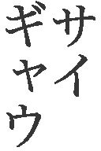
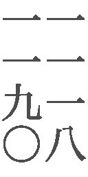

| 舟を編む | |
| 三浦しをん | |
| 光文社 (2014) | |
舟を編む
三浦しをん
◎ご注意
本作品の全部または一部を無断で複製、転載、改竄、公衆送信すること、および有償無償にかかわらず、本データを第三者に譲渡することを禁じます。
個人利用の目的以外での複製等の違法行為、もしくは第三者へ譲渡をしますと著作権法、その他関連法によって処罰されます。
一、
荒木公平の人生は――人生というのがおおげさであるならば会社人生は――、辞書に捧げられてきたと言っても過言ではない。
荒木は幼いころから言葉に興味があった。
たとえば、犬。そこにいるのに、いぬ。はは、おかしい。いまだったら女性社員から、「荒木さん、オヤジギャグはやめていただけますか」と言われてしまいそうなことを、子どものくせに思いついては愉快な気持ちになっていた。
犬は、動物の犬だけを意味する単語ではない。
父親に連れていってもらった映画館のスクリーンで、「官憲の犬めがぁ！」と裏切りに遭った瀕死のヤクザが血まみれで叫んでいた。そこで荒木は、敵対する組織から送りこまれたスパイのことも犬と称するのだと知った。
子分が瀕死の状態にあると報を受けた組長は、すっくと立ちあがって言った。
「おまえら、なにをボサッとしちょるんじゃ！ ドスを磨けぃ！ やつを犬死にさせちゃあいかんぜよ！」
そこで荒木は、犬という言葉が「無駄」に相当する意味も持つのだと知った。
動物の犬は、人間にとって忠実なる相棒である。信頼のおける、賢く愛らしい友である。にもかかわらず、同じ「犬」という言葉が、卑怯な内通者や物事の無意味さを指しもするのは、不思議なことだ。動物の犬が性質として持ちあわせる、ときとして卑屈なまでの忠実さ。ひとに尽くせば尽くすほど際立つ、不憫なまでの報われなさ。あるいはそれらが、「犬」にマイナスの意味をも付与したのかもしれない。
とまあ、そんなことを考えては一人で楽しんでいた荒木だったが、辞書の存在を意識したのは遅かった。中学校の入学祝いに、叔父から『岩波国語辞典』をもらったのが最初だ。
はじめて自分だけの辞書を手に入れた荒木は、この書物に夢中になった。
荒木の両親は荒物屋を営んでおり、仕入れや店番で忙しかった。必然的に息子に対しては、「他人さまに迷惑をかけず、元気でやっているならそれでいい」という教育方針だった。わざわざ辞書を買い与え、「勉強しろ」と言うような発想は両親にはなかった。荒木の両親にかぎらず、当時の大人の大半がそうだった。
荒木ももちろん、勉強よりも外で友だちと遊ぶほうが好きだったから、小学生のころは、教室に一冊だけ置いてあった国語辞書のことなど、たいして気にもとめていなかった。たまに背表紙が視界に入るだけの、置物にすぎなかった。
実際にめくってみた辞書のおもしろさといったら、どうだろう。ぴかぴかの表紙、どのページにもびっしりと印刷された文字のつらなり、薄い紙の感触。すべてが荒木を虜にした。なによりも荒木の心をとらえたのは、簡潔に見出し語の意味を説明する語釈の部分だ。
荒木はある晩、弟と茶の間でふざけていて、「大声を出すな」と父親に叱られた。試みに、「こえ【声】」という言葉を『岩波国語辞典』で引いてみた。語釈はこうだった。
人や動物が、のどにある特殊器官を使って出す音。それに似た音。季節・時期などが近づくけはい。
作例として、「声」を使った文章も載っている。「声を上げる」や「虫の声」ぐらいは、なんとなく意味を把握して使っていたが、「秋の声」「四十の声をきく」にいたっては咄嗟に思いつかなかった。
言われてみればそのとおりだ、と荒木は思った。「声」にはたしかに、「季節・時期などが近づくけはい」の意味もある。「犬」の一語に、多様な意味がこめられているのと同じように。語釈を読むと、ふだんから使っている言葉に思いがけない広がりと奥行きがあることに気づかされるのだった。
それにしても、「のどにある特殊器官」という説明は思わせぶりだ。荒木は父親に叱られたことも、かまってほしがってまとわりついてくる弟のこともほっぽって、なおも辞書を引いた。
とくしゅ【特殊】①普通とは質的に違うこと。性質が特別であること。②［哲学］普遍に対し、その個個の場合・事物になるもの。
きかん【器官】生物体を構成し、一定の形態をし、特定の生理機能をいとなむ部分。
わかったようなわからぬような説明だ。
「のどにある特殊器官」とは声帯を指すのだろうと見当がついたので、荒木は追究をそこまでにしておいた。もし声帯を知らないひとが『岩波国語辞典』を引いたら、「のどにある特殊器官」は謎の器官のままである。
辞書は必ずしも万能ではないと知り、荒木は落胆するどころか、ますます愛着を深めた。かゆいところに手が届ききらぬ箇所があるのも、がんばっている感じがして、とてもいい。決して完全無欠ではないからこそ、むしろ、辞書を作ったひとたちの努力と熱気が伝わってくるような気がした。
一見しただけでは無機質な言葉の羅列だが、この膨大な数の見出し語や語釈や作例はすべて、だれかが考えに考え抜いて書いたものなのだ。なんという根気。なんという言葉への執念。
小遣いが貯まるたび、荒木は古本屋へ走った。辞書は改版されると、それ以前の版が古本屋で安価で売買されることが多い。異なる出版社のさまざまな辞書を、少しずつ集めて読み比べた。使いこまれて表紙がちぎれたもの。まえの持ち主の書きこみや赤線の残るもの。古い辞書には、作り手と使い手の言葉との格闘の跡が刻印されている。
国語学か言語学の学者になって、俺も自分の手で辞書を編みたい。高校二年生の夏に、荒木は大学に進学させてくれと父親に頼んだ。
「はあ？ 国語学って、なんだそりゃ。おまえ、日本語しゃべれるじゃねえか。なんで大学行ってまで国語を勉強する必要がある」
「いや、そうじゃなくて」
「そんなことより、店の手伝いしろ。母ちゃん腰痛めちゃってんだぞ」
てんで話の通じない父親を説得したのは、『岩波国語辞典』をくれた叔父だった。
「まあまあ、兄貴」
数年に一回しか実家の荒物屋に顔を出さない叔父は、鷹揚に仲裁した。叔父は捕鯨船の乗組員で、長い航海のあいだに辞書の味を覚えたらしい。親戚のあいだでは変わりもので通っていた。
「公ちゃんはわりと賢い子じゃないか。思いきって大学へやったらどうだい」
荒木は猛然と受験勉強に取り組み、大学に入った。四年のあいだに、残念ながら自分には学者になれるほどのセンスはないと察しがついたが、辞書を作りたいと願う気持ちは抑えがたかった。大学四年生になった年、小学館から『日本国語大辞典』が刊行されはじめたことも大きかった。
これは、全二十巻という大部の辞書だった。編集作業に十年以上の年月をかけ、約四十五万項目を収録。協力者は三千名に及ぶと言われた。
貧乏学生の身では手が出ない。大学図書館に並ぶ『日本国語大辞典』を、荒木は震える思いで眺めた。大勢のひとの情熱と時間が注ぎこまれた辞書を。埃くさい静かな図書館の書架で、それは夜空に浮かぶ月のごとく、清浄な輝きを放っているように見えた。
学者として、辞書の表紙に名を載せることは俺にはできない。編集者として、辞書づくりに携わる道はまだ残されている。俺はどうしたって、辞書を作りたい。俺の持てる情熱と時間のすべてを注ぎこんでも悔いのないもの。それが辞書だ。
荒木は猛然と就職活動を繰り広げ、大手総合出版社の玄武書房に入社した。
「それから、辞書づくりひとすじ三十七年ですわ」
「ほう、もうそんなになりますかねえ」
「なりますよ。先生とお会いしてからだって、三十年以上だ。あのころの先生はもっとこう、茂らせてらしたもんだが」
荒木は向かいの席に座る松本先生の頭頂部を見やった。松本先生は用例採集カードに走らせていた鉛筆をおき、鶴のように細い体を震わせて笑った。
「荒木君も、ずいぶんと頭に霜をいただくようになったではないですか」
ざるそばが運ばれてきた。昼どきの店内は会社員で満席だ。荒木と松本先生は、しばし黙ってそばをすすった。松本先生は食べるあいだも、そば屋のテレビから流れる音声に耳を傾けている。聞き慣れない単語や、変わった言葉の用法があったら、すぐに用例採集カードに書きとめるためだ。荒木はいつものとおり、松本先生の手もとに注意を払った。用例採集に気を取られた先生が、鉛筆でそばをたぐろうとしたり、箸で字を書こうとしたりするのを防ぐためだ。
そばを食べ終えた二人は、冷たい麦茶を飲んで一息ついた。
「先生が一番最初に手にした辞書はなんです」
「祖父の遺品として譲り受けた、大槻文彦の『言海』ですね。多大な困難を乗り越え、大槻が一人で編纂した辞書だと知り、子どもごころにおおいに感銘を受けたものです」
「感銘を受けつつ、ちょっと色っぽい言葉を引いてみたりもしたでしょう」
「しませんよ、そんなこと」
「そうですか？ わたしはさっきも申したとおり、中学のころの『岩波国語辞典』が最初でしたが、シモがかった言葉を引きまくりましたよ」
「しかし、あれはきわめて端整で上品な辞書だ。さぞかしがっかりしたことでしょうね」
「そうそう。『ちんちん』を引いても、語釈には犬の芸と湯の沸く音についてしか載ってない。って、先生やっぱり引いたんじゃないですか」
「ふっふっふっ」
そろそろ昼休みも終わりに近い。いつのまにか店内はひともまばらになり、そば屋のおかみさんがコップに麦茶をつぎたしてくれた。
「先生とは長く仕事をさせていただいたのに、辞書にまつわる、こういった記憶を話すのははじめてですね」
「ずいぶんたくさんの辞書を、一緒に作りました。ひとつの辞書を作りあげても、すぐに改訂や改版作業に追われ、ゆっくり語りあうこともできないほどだった。『玄武現代語辞典』、『玄武学習国語辞典』、『字玄』。どれも思い出深い」
「最後までお手伝いすることができず、本当に申し訳ないです」
荒木はテーブルに両手をつき、深々と頭を下げた。用例採集カードを束ねた松本先生は、気落ちしたのか、めずらしく背中を少し丸めた。
「やはり、定年になるのをのばせそうにありませんか」
「すまじきものは宮仕え、です」
「嘱託でもいい」
「できるだけ編集部に顔を出すつもりではいますが......。女房の具合が、どうも芳しくないんですわ。これまで辞書漬けで、なんにもしてやれませんでしたから、せめて定年後はそばについていてやりたい」
「そうですか」
いよいようつむいてしまった松本先生だが、明らかに空元気とわかる調子で言った。「いや、それがいい。今度は荒木君が、奥さんを支えてさしあげる番だ」
先生のやる気を削いでは、編集者として失格だ。荒木は顔を上げ、松本先生を励まそうと身を乗りだした。
「定年までになんとしても、わたしの後継となる社員を探します。先生を万全の態勢でお助けし、辞書編集部を統率し、わたしたち二人で立てた新しい辞書の企画を推進していける、若く有能な人材を」
「辞書の編集作業は、ほかの単行本や雑誌とはちがう。大変特殊な世界です。気長で、細かい作業を厭わず、言葉に耽溺し、しかし溺れきらず広い視野をも併せ持つ若者が、いまの時代にはたしているでしょうか」
「必ずいるはずです。弊社の社員、五百余名のなかに見当たらなければ、他社から引き抜いてでも連れてきます。先生、どうか玄武書房に、ひきつづき先生のお力をお貸しください」
松本先生はうなずき、静かに言った。
「荒木君と辞書を作れて、本当によかった。きみがどんなにがんばって探してくれても、きみのような編集者とは、きっともう二度と出会えないでしょう」
不覚にも嗚咽しそうになり、荒木はあわてて唇を噛みしめた。松本先生とともに本と校正刷りに埋もれて過ごした三十数年が、うつくしい夢のように思われた。
「ありがとうございます、先生」
新しい辞書企画の立ちあげ半ばにして、会社を去らねばならないのは無念だ。辞書は荒木を構成する、ほとんどすべてだった。
同時に荒木は、新たなる使命が胸に宿ったのも感じていた。親愛とさびしさと行く手に対する不安をたたえた、松本先生の表情を目にした瞬間に。
俺が辞書編集部員として果たすべき役割は、念願だった新しい辞書を完成させることだとばかり思ってきたが、そうではなかった。俺と同じように、いや、俺以上に、辞書を愛する人間を見つけることだったのだ。
先生のために。日本語を使うひと、学ぶひとのために。なによりも、辞書という貴い書物のために。
最後の大仕事を為し遂げるべく、荒木は意欲に満ちて会社に戻った。
さっそく各編集部に、「いい人材はいないか」と問いあわせをはじめた荒木だったが、結果ははかばかしくなかった。
「どいつもこいつも、目先の利益を優先しやがって」
景気が悪くなったせいで、どの部署にも緊迫感が漂っている。確実に広告が取れるような雑誌や、取材費があまりかからない内容の単行本。そういったものを作るなら歓迎するが、辞書編集部にまわす人材などないという返答だった。
「辞書はイメージもいいし、景気にも左右されにくい商品だってのに。志を高く保ち、未来を見据えようって気概はないのか」
「しかたないですよ」
書棚のあいだから現れた西岡が、荒木の独り言に返事をした。「辞書づくりには、莫大な金と膨大な時間がかかりますからね。いつの時代も、みんな手っ取り早く儲けられるもののほうに飛びつくもんです」
西岡の言うとおりだった。玄武書房の辞書編集部は、不景気のあおりをまともに食らい、予算と人員を削られている。新しい辞書の企画も、なかなか通らないありさまだ。
荒木は、常に机に備えてある『広辞苑』と『大辞林』をめくった。「莫大」と「膨大」のちがいと使いわけについて考察をめぐらせつつ、舌打ちする。
「なにを他人事みたいに。おまえがしっかりしないから、俺がよけいな苦労をしょいこんでるんだろうが」
「はいはい、すいません」
「おまえはどうも辞書に向かないんだよ。フットワークが軽いのは、原稿を取るときにはいいが」
「そんなこと言っていいんですか、荒木さん」
西岡はキャスターつきの事務用椅子に座ったまま、床を蹴って荒木に近づいた。「この俺がフットワークの軽さで、耳寄り情報を仕入れてきたってのに」
「なんだ」
「辞書向きの人材、いるらしいです」
「どこに！」
椅子から立った荒木をじらすように、西岡は笑みを浮かべた。閑散とした編集部で、わざとらしく声をひそめる。
「第一営業部。年は二十七」
「ばかもん！」
荒木は西岡の頭をはたいた。「じゃあ、おまえと同期ってことじゃないか。なんでいままで言わなかった」
「ひどいなあ」
西岡は脳天をさすり、椅子ごと自分の机へ後退していった。「同期じゃないですよ。そいつは院卒だそうだから、まだ入社三年目」
「第一営業部だな」
「いま行っても、書店まわりでいないんじゃないですか」
西岡にそう言われたときには、荒木はすでに駆けだしていた。
辞書編集部は、玄武書房の別館二階にある。木造の古い建物で、天井が高い。床板は濃い飴色に変色している。荒木の靴音が、薄暗い廊下に響いた。
階段を下り、両開きのドアを押し開けると、初夏の日射しが目を焼いた。緑がかった視界に、同じ敷地内にそびえる八階建ての本館ビルが映る。木陰を選ぶ手間を惜しみ、荒木は一直線に本館のエントランスへ走った。
一階奥の第一営業部に踏み入った荒木は、そこではたと気づいた。しまった、肝心の後継候補の名前を聞き忘れた。男なのか女なのかもわからんぞ。期待するあまり、あせりすぎた。
ドア口で呼吸を整え、さりげないふうを装って室内を見わたす。幸いなことに、営業部員は出払ってはいなかった。六、七人が、机でパソコンに向かったり電話の応対をしたりしている。大学院を出て入社三年目の二十七歳は、どれだ。間の悪いことに、ほとんどが三十前後の男女ばかりで、見きわめられない。
第一営業部は、いったいどうなってるんだ。若手はさっさと書店まわりに行くべきではないか。もちろん、俺が探している人間を除いて、だが。
荒木が内心でぶつくさ言っていると、一番近くにいた女性社員が怪訝そうに尋ねてきた。
「だれかお探しですか」
そのまま荒木をエントランスのほうへ誘導しようとする。どうやら、受付を通らずに入ってきてしまった社外の人間だと誤解したらしい。三十七年間、別館の辞書編集部に籠もりつづけてきたので、古参の社員でも荒木の顔を知らないものは多い。
「ああ、いや、そうじゃない」
荒木は用件を告げようとして、言葉を途切れさせた。部屋の隅にいる男に視線が吸い寄せられる。
荒木に背を向ける形で、男は壁際の棚のまえに立っていた。痩せて背が高く、営業部員としていかがなものかと思われるほど、髪の毛がぼさついている。背広の上着を脱ぎ、ワイシャツの袖をまくって、棚の備品を整理しているところらしい。
備品の入った大小さまざまな箱を、あちらの段からこちらの段へと入れ替え、男は棚の中身を隙間なくきれいに整えた。複雑なジグソーパズルのピースをまたたくまにはめこむような、見事な手際だった。
おお......！ 喜びのうなり声を、荒木はすんでのところで飲みくだした。あれこそは、辞書づくりにおいて求められる、重要な才能のひとつではないか！
辞書の編集作業が最終局面を迎えるころには、すでに全体のページ数が決まっている。造本や価格に響くから、ページ数の変更は許されない。どうやったら辞書の内容が規定のページに収まるか、編集者は限られた時間のなかで素早く判断していく。ときに用例を泣く泣く削り、ときに語釈の文章を効率よく縮め、整然とページにはめこんでいく。まさに、男がいま棚のまえで見せたような、パズル的なセンスが要求される。
あの男だ！ あの男こそが、次代の辞書編集部の主にふさわしい！
「きみ」
荒木は興奮を押し隠し、かたわらに立つ女性社員に尋ねた。「彼はどんな男だ」
「どんなって......」
女性社員は警戒している様子だ。
「わたしは、辞書編集部の荒木だ」
荒木は名乗った。「それで？ 彼は二十七歳、院卒の入社三年目か」
「たしかそうだったと思いますが、本人に直接聞いてください。まじめです」
真面目なのか。荒木は満足し、一人うなずいた。いいことだ。辞書を作るという地道な仕事は、真面目でなければ到底こなせるものではないからな。
棚の整頓具合を再確認する男に向かい、女性社員が声を張りあげた。
「まじめさーん、お客さまです」
客ではなく、同じ会社の辞書編集部のものだと言っているのに、わからん娘だな。
少し腹が立ったが、「『よそから来たひと』というニュアンスはまったく含まれず、純粋に『訪問者』の意で使われた『客』かもしれない」と思うことで、荒木は自分を納得させた。
それよりも問題にすべきは、男が「まじめさん」と呼ばれた点だ。いったいどれだけ真面目だったら、あだ名が「真面目」になるのか。ここは、放課後になると生徒が夕陽に向かって走る学園でも、ジーパンばかり穿いている刑事の所属する警察署でもない。出版社だ。にもかかわらず、「真面目」とあだ名がつくほどとは、これはもう超弩級の真面目と言っていいだろう。
心してかからにゃならん。荒木はますます、男へ注ぐ視線に力をこめた。
女性社員の呼びかけに応え、男は振り返った。銀縁の眼鏡をかけている。「にもかかわらず、あだ名は『メガネ』ではなく『真面目』」と、荒木がまたも気を引き締めるあいだに、男はひょろ長い手足を持てあます風情で、ゆっくり近づいてきた。
「はい、まじめですが」
な、なにーっ。まさか、本人も真面目を自認しているとは！
荒木はのけぞりそうになり、かろうじて踏みとどまった。なんとしても男を辞書編集部へ引き抜きたいという意欲が、急速に萎んでいくのを感じる。
自分を「真面目だ」と言ってのける臆面のなさ。真面目であることを、心のどこかで軽んじているのではないか。真面目さがいかに大切な美徳であるかに、気づいていないのではないか。いずれにせよ、そんな人間に辞書づくりを任せるわけにはいかない。
荒木が無言でねめつけるばかりなので、男は困惑した様子だ。ぼさぼさの髪の毛をかきまわし、思いついたように、ワイシャツの胸ポケットから名刺入れを出す。
「どうぞ」
腰をやや折るようにして、男は両手で名刺を差しだしてきた。すべての動作が、のんびりと不器用に行われた。
だれだかわからん相手に、軽々に名刺を渡そうとするな。だいいち、俺は同じ会社の社員だぞ。荒木は落胆と憤りを押し隠し、男の手もとへ視線をやった。長い指のさきにある爪は丸っこく、清潔に切りそろえられている。名刺には、こう記されていた。
株式会社玄武書房 第一営業部
馬締 光也
「まじめ、みつや......」
「はい。馬締です」
馬締は微笑んだ。「勘違いなさったでしょう」
「いや、すまん」
荒木はあわてて、ズボンの尻ポケットから自分の名刺を出した。「辞書編集部の荒木だ」
馬締は折り目正しく、受け取った名刺を眺めている。銀縁眼鏡越しにも、澄んで穏やかな目をしているのが見て取れた。白いシャツのデザインはどことなく流行遅れで、身だしなみにもあまり気をつかっていないようだが、肌には張りがある。まだ若いのだ。これから何十年もの時間を、辞書に捧げられるぐらいに。
ふいに萌したわずかな嫉妬を、荒木はもちろん、露わにはしなかった。
「馬締とは、めずらしい名字だな。どこの出身だ」
「俺は東京ですが、両親の出身は和歌山です。問屋場のことを、馬締とも言ったそうで」
「旅人に馬の差配をする、馬の元締めということか」
荒木は体じゅうのポケットを探ったが、あいにく手帳を持ちあわせていなかったので、もらったばかりの馬締の名刺にメモした。
馬締：問屋場の別名。『広辞苑』『大辞林』とも、たしか記載なし。『日本国語大辞典』を要確認。
松本先生ほどではないにしろ、聞き覚えのない言葉を即座に記録するのは荒木の習性だ。あとで編集部の用例採集カードを調べよう。まだカードが作られていないようだったら、出典（できれば、その言葉の初出文献が望ましい）を明記して、新たなカードを加えておく必要がある。
編集部には膨大な数の用例採集カードが蓄積されており、辞書を作る際には、そのなかからどの言葉を採用するべきか検討を重ねる。最近ではデータ化も進めているが、やはり用例採集カードこそが、辞書編集部にとって心臓に等しいものだった。社内で分煙が叫ばれる以前から、カードを保管してある資料室は絶対禁煙だ。
名刺に突然メモを取りはじめた荒木を見ても、馬締は驚いたふうでも気を悪くしたふうでもなかった。
「名字の由来は何度も聞かれたことがあるけれど、書きとめてもらうのははじめてです」
あいかわらず穏やかな物腰のまま、興味深そうに荒木の手もとを覗きこむ。
そうだ、この男をスカウトに来たんだった。思いがけない名字に気を取られ、本来の目的を一瞬失念してしまっていた。荒木は咳払いし、名刺とペンを胸ポケットに収めた。
「きみは、『右』を説明しろと言われたら、どうする」
馬締は軽く首をかしげた。
「方向としての『右』ですか、思想としての『右』ですか」
「前者だ」
「そうですねえ」
馬締の首の角度が深くなった。髪の毛がもさもさ揺れる。
「『ペンや箸を使う手のほう』と言うと、左利きのひとを無視することになりますし、『心臓のないほう』と言っても、心臓が右がわにあるひともいるそうですからね。『体を北に向けたとき、東にあたるほう』とでも説明するのが、無難ではないでしょうか」
「うん。では、『しま』だったら、どう説明する」
「ストライプ、アイランド、地名の志摩、『よこしま』や『さかしま』のしま、揣摩憶測するの揣摩、仏教用語の四魔......」
馬締が、「しま」という音から導きだされる単語の候補を次々に挙げだしたので、荒木は急いでさえぎった。
「アイランドの『島』だ」
「そうですねえ。『まわりを水に囲まれた陸地』でしょうか。いや、それだけではたりないな。江の島は一部が陸とつながっているけれど、島だ。となると」
馬締は首をかしげたままつぶやいた。荒木の存在などすでにそっちのけで、言葉の意味を追求するのに夢中になっている様子だ。
「『まわりを水に囲まれ、あるいは水に隔てられた、比較的小さな陸地』と言うのがいいかな。いやいや、それでもたりない。『ヤクザの縄張り』の意味を含んでいないもんな。『まわりから区別された土地』と言えばどうだろう」
これは相当のものだ。あっというまに「島」の語義を紡ぎだしていく馬締を、荒木は感心して見守った。以前、同じ質問を西岡にしたときなど、ひどかった。西岡は、「しま」と聞いても「島」しか思い浮かべられず、しかも、「海にぽっかり浮かんでいるもの」と答えたのだ。あきれかえった荒木が、「ばかもん！ じゃあ、クジラの背中も土左衛門も『島』なのか！」とどやしつけても、「あれー、そっか。難しいなあ。なんて言えばいいんですかね」と、へらへら笑うばかりだった。
真面目な顔でうなっていた馬締は、急に棚のほうへ体を向けた。
「ちょっと辞書を引いてきます」
「いいんだ、いいんだ」
荒木は腕をつかんで引きとめ、正面から馬締を見据えて言った。「まじめ君。きみの力を、『大渡海』に注いでほしい！」
「だいとかい、ですか。わかりました」
馬締はうなずき、次の瞬間、
「あ〜あぁ〜！」
素っ頓狂な声を張りあげた。第一営業部にいた、すべてのひとの視線が集まる。荒木も呆然としたが、「はってっし〜な〜い〜」と馬締がつづけるに及んで、「クリスタルキングの『大都会』か！」と気がついた。これは相当の音痴だ。急いで馬締を廊下へ引っ張りだす。
「まじめ君、まじめ君。すまんが、ちがうんだ」
「ちがいましたか」
馬締は歌いやめ、心もとなさそうな表情をした。「俺、最近の歌をあまり知らなくて。申し訳ないです」
なにをどうすれば、歌を請われたと勘違いできるのだろう。馬締の発想には理解しがたいものがあったが、荒木はとりあえず用件を伝えることにした。
「『大渡海』というのは、うちの編集部で作ろうとしている、新しい辞書の名前だ。海を渡る、と書く。きみに、その仕事を任せたい」
「じしょ、ですか」
目と口をまん丸に開け、馬締は動きを止めた。「鳩が豆鉄砲を食ったような顔」とは、これのことを言うのだな。そう思った荒木は、「そういえば、文楽の大夫が複数名、床に並んで義太夫を語るとき、一番末座のものを『豆食い』と俗称すると、先日読んだ本に書いてあった。豆を食うみたいに、口をぱくぱくさせているだけだから、という理由だそうだが、この言葉を載せた辞書はあるのだろうか。至急調べて、『大渡海』に載せるべきか否か検討せねばならん」などと、辞書編集者的連想を働かせた。
それぞれの物思いに沈んでたたずむ荒木と馬締の横を、社員が怪訝そうな表情で行き交う。
やがて、馬締が動きを取り戻した。
「でも、あの、すみません。俺は一時半から、渋谷の書店さんをまわらないといけないんでした」
「あ、ああ、そうか」
時計の針は、すでに一時十五分を指している。どうやってもまにあいそうにないが、大丈夫なのか、と荒木は思った。馬締も腕時計を見ると、手足を持てあますような例の動作で第一営業部に駆けこみ、自分の机から背広の上着と黒い鞄を取ってきた。
「本当にすみません」
まだ廊下にいた荒木に頭を下げ、もさもさの髪の毛をさらに乱して、馬締はエントランスのほうへ走っていく。荒木の視界のうちだけでも、二回つまずいていた。
いろいろな意味で大丈夫なのか、と荒木は思った。馬締はどうやら、「辞書編集部の手伝いを、今日だけ頼まれた」とでも解釈したらしかった。
どうしてそんな勘違いをするのか、まったくもって理解できん。
荒木は首を振り、営業部の担当役員に根まわしするため、本館のエレベーターに乗った。
根気強く交渉したおかげで、会社はやっと、『大渡海』の編纂に正式な許可を出した。同時に馬締が、備品の入った小さな段ボール箱を抱えて異動してきた。荒木の定年まで、残すところ二カ月だ。ぎりぎりだが、まにあった。辞書編集部のドア口に現れた馬締を見て、荒木は安堵のため息をついた。
馬締を引き抜くにあたっては、根気強い交渉は必要なかった。営業部長は、「まじめ？ ああ、そういえばいたっけね。なに、荒木ちゃん。引き取ってくれるの？」と喜色を浮かべた。担当役員の反応にいたっては、「......だれだ？」だった。
そうか、と荒木は察した。荒木が真剣に口説いたというのに、馬締の反応がいまいちトンチンカンだったのは、だれかに能力を認められることがあるなんて露ほども予想していなかったせいだろう。馬締は営業部員としてまともにカウントされず、名指しで引き抜きをかけなければ、直属の上司にすら存在を思い出してもらえなかったほどなのだ。
営業部での評価がかくまで低かった理由も、なんとなく察しはついた。馬締がトンチンカンだからだ。ふつう、会社でいきなり『大都会』を熱唱はしない。
馬締が悪いのではない。会社の見きわめが甘かったために、適材適所の原則を踏みはずしてしまっただけだ。
馬締の、言葉に対する鋭い感覚。持てる知識を総動員して、荒木の問いかけに応えようとする律儀さ。律儀が行き過ぎてトンチンカンだが、とにかく、辞書づくりのためにあるような才能だ。
荒木が目で指示したのを受け、西岡が立って馬締を出迎えた。
「ようこそ、辞書編集部へ」
段ボールをかすめ取り、馬締を室内へ導き入れる。「人員不足で、机はいくらでも余ってんだけど、ここでいいか？」
書棚の林立する室内を心細げに見まわしながら、馬締は西岡の隣の机に近づいた。おとなしく、「はい」とうなずく。
「まじめさあ、彼女いる？」
西岡は、恋愛の話をすれば、ひとと親しくなれると思っている節がある。荒木は黙って、奥まった机から馬締の反応をうかがった。
「いいえ」
「じゃ、合コンしよう。セッティングするから、ケータイの番号とアドレス教えろよ」
「持ってないです。営業部で使っていたものは、会社に返してしまったので」
「なんで!?」
西岡は立ち歩くミイラを目撃したような表情になった。「彼女ほしくないのか？」
「さあ。彼女も携帯電話も、ほしいのかどうか考えてみたことがありません」
西岡が助けを求める視線を寄越したので、荒木は噴きだしそうだったのをこらえ、威厳を持って場をとりなした。
「まじめ君、今日はきみの歓迎会だ。六時に『七宝園』に予約を入れてあるから、仕度して。西岡は佐々木さんを呼んでこい」
『七宝園』の赤い円卓では、すでに松本先生が紹興酒を飲んでいた。先生は週に一度、二合だけ飲酒することを自身に許している。飲むあいだもむろん、用例採集カードと鉛筆は手放さない。
荒木は円卓につくと同時に、辞書編集部のメンバーを紹介した。
「西岡は、まあこういうやつだ。それから、こちらが佐々木さん。主に用例採集カードの整理と分類をお願いしている」
荒木に名を呼ばれ、四十代前半の佐々木が無表情のままうなずいてみせた。愛想に欠けるが、実務能力はきわめて高く、辞書編集部になくてはならぬ女性だ。最初はパートとしての採用だったが、子育ても一段落したいまは、契約社員として働いてもらっている。
松本先生が馬締をどう感じるか、二人を引きあわせたときには、さすがに緊張した。松本先生は内心をうかがわせぬ微笑を浮かべ、馬締に軽く会釈したのみだった。
馬締は全員に対して、いちいちぎこちなく頭を下げた。
乾杯が済み、料理が運ばれてきた。西岡はもともと、そつのない男だ。松本先生のために、さっそく前菜を小皿にとりわけた。先生の苦手なピータンを、ちゃんとよける気づかいを見せている。さて、肝心のまじめ君はどうだろう。荒木は、松本先生の左に座った馬締へ視線を移した。馬締は佐々木のコップにビールをつぎたし、盛大に泡をあふれかえらせたところだった。
がんばってはいるが、惜しい。
荒木はなんだか、幼稚園児を見守る心境になってきた。佐々木も同じ気持ちらしく、無表情のまま鷹揚に、馬締に返杯してやっている。
「まじめの趣味って、なんなの」
友好的な関係への道筋を探るべく、西岡が果敢に話題を振った。唇からはみでていたキクラゲを飲みこみ、馬締は少し考えているようだった。
「強いて言えば、エスカレーターに乗るひとを見ることです」
円卓にしばし沈黙が落ちた。
「楽しいの、それ」
佐々木が平坦な口調で問う。
「はい」
馬締はやや身を乗りだした。「電車からホームに降りたら、俺はわざとゆっくり歩くんです。乗客は俺を追い越して、エスカレーターに殺到していく。けれど、乱闘や混乱は生じません。まるでだれかが操っているかのように、二列になって順番にエスカレーターに乗る。しかも、左がわは立ち止まって運ばれていく列、右がわは歩いて上っていく列と、ちゃんとわかれて。ラッシュも気にならないほど、うつくしい情景です」
「いまさらですが、ヘンですよね、こいつ」
ささやきかけてきた西岡越しに、荒木は松本先生と目を合わせた。松本先生がうなずいた。馬締がなにを言いたいのか、荒木と松本先生にはよくわかった。
ホームにあふれていた人々が、吸いこまれるかのごとく、エスカレーターのまえで整列し運ばれていく。そこかしこに散らばっていた無数の言葉が、分類され、関連づけられて、整然と辞書のページに並び収まるように。
そこに美と喜びを見いだす馬締は、やはり辞書づくりに向いている。
いま伝えなければならない、という思いに突き動かされ、荒木は口を開いた。
「なぜ、新しい辞書の名を『大渡海』にしようとしているか、わかるか」
馬締は、つまみのピーナッツをリスみたいに一粒ずつかじっているところだった。佐々木が指先で軽く円卓を叩き、注意をうながす。それでようやく、話しかけられているのは自分だと気づいたらしい。馬締はあせった様子で首を振った。
「辞書は、言葉の海を渡る舟だ」
魂の根幹を吐露する思いで、荒木は告げた。「ひとは辞書という舟に乗り、暗い海面に浮かびあがる小さな光を集める。もっともふさわしい言葉で、正確に、思いをだれかに届けるために。もし辞書がなかったら、俺たちは茫漠とした大海原をまえにたたずむほかないだろう」
「海を渡るにふさわしい舟を編む」
松本先生が静かに言った。「その思いをこめて、荒木君とわたしとで名づけました」
きみに託す。声にはしなかった言葉を聞き取ったのか、馬締は円卓から両手を下ろし、姿勢を正した。
「見出し語の数は、何万語を予定していますか。『大渡海』の特色は。詳しい話を聞かせてください」
馬締の目が輝きを帯びている。松本先生は箸を鉛筆に持ちかえ、佐々木は鞄から大学ノートを取りだして広げた。荒木は「よし」と意気込み、新しい辞書の構想を語りだそうとした。
「まあまあ、そのまえに」
出端をくじいたのは西岡だ。「こういうときは、まず乾杯でしょうよ」
片手で松本先生のコップに紹興酒をつぎ、もう片方の手で円卓をまわす。ビール瓶が一周し、全員にアルコールが行き渡った。
「では、僭越ながら音頭を取らせていただきます」
西岡はコップをかかげた。「我々辞書編集部の船出に、乾杯！」
「乾杯！」
だれからともなく、笑い声がこぼれた。馬締も楽しそうに、松本先生と小さくコップを合わせている。
どうか、いい舟を作ってくれ。荒木は願いをこめて目を閉じた。多くのひとが、長く安心して乗れるような舟を。さびしさに打ちひしがれそうな旅の日々にも、心強い相棒になるような舟を。
きみたちなら、きっとできる。
二、
だれもいない自室に向かって、馬締光也は「ただいま」と言った。
重い鞄を畳に置き、木枠の窓を開ける。
「まどの〜、したには〜」
流れているのは神田川ではなく細い用水路だったが、馬締はいつもの癖で歌った。後楽園遊園地の観覧車が、夕暮れの空に浮かんでいる。
なんだか疲れた。
電気もつけず、六畳間の真ん中に寝ころぶ。異動してそろそろ三カ月になろうというのに、辞書編集部にまだ慣れることができない。勤務時間は基本的に朝九時から夕方六時までで、終業後の接待もない。営業部にいたころに比べれば、格段に楽なはずだ。にもかかわらず、疲れる。
今日は、わざわざ遠まわりして地下鉄を乗り継ぎ、神保町の玄武書房から春日にある下宿まで帰ってきた。軽々と歩ける距離なのだが、電車の乗客がエスカレーターを利用する様子を眺めたかったからだ。
期待したほど、気は晴れなかった。帰宅ラッシュには少し早い時間だったためか、お年寄りや主婦らしきひとばかりが目についた。やはり会社員じゃないと、駅のエスカレーターに慣れていないせいだろうか。もたつき、無秩序になってしまって、馬締の求める整然とした美が出現しない。
ふいに、腹に重みとぬくもりを感じた。顔だけ上げて確認したら、トラさんだ。馬締が帰宅して窓を開けると、トラさんは必ず挨拶にやってくる。
「夕飯を作らなきゃなあ」
食材がなんにもない。買い物に行く気力もない。俺はインスタントラーメンでいいけれど、トラさんは......。
「ニボシでいいかな」
頭を撫でてやりながら尋ねる。トラさんはぐるぐると喉を鳴らし、短めの太い尻尾で馬締の脇腹をはたいた。ちょっと痛いし、圧迫された腹が苦しい。トラさん、大きくなったな、と思う。
春日の下宿、早雲荘に住んで、もう十年近くが経つ。最初は大学に入学したてだった馬締も、いまや四捨五入したら三十歳だ。雨に濡れて心細げに鳴いていたトラさんも、立派すぎる体格のトラ猫になった。木造二階建ての早雲荘だけが、歳月を経ても変わらず、静かな住宅街のなかにある。これ以上変わりようがないほど、古びているからかもしれない。
トラさんを腹に載せたまま、蛍光灯の紐を引いた。寝そべっていても明かりをつけたり消したりできるよう、畳すれすれまで紐を垂らしてある。馬締はそれを、「無精紐」と呼んでいた。紐のさきには、金色の鈴がついている。軽く揺らすと、気を惹かれたトラさんがやっと腹から下りてくれた。その隙に立ちあがる。
明るくなった室内が目に入り、馬締はため息をついた。改めて見ると、かなり殺風景だ。衣類や日用雑貨は、一切合切を押入に収めてあるので、家具といえば窓際に置いた小さな文机ひとつ。壁面はすべて書棚で覆われている。それでもあふれた本が畳のあちこちに積まれ、一部はなだれを起こしている。
実は、馬締の蔵書は自室のみならず、早雲荘の一階にある部屋を軒並み占拠しているのだった。
近ごろでは、下宿ははやらない。枝から離れて降りそそぐ紅葉のごとき勢いで空き部屋が増え、早雲荘の下宿人は、いまやとうとう馬締だけだ。それをいいことに、馬締は隣の部屋、そのまた隣の部屋へとせっせと本を運び入れた。しまいには本の侵攻に負け、大家のタケおばあさんすらも、一階の階段脇の部屋から二階へ移り住む事態となった。
タケおばあさんはひとがいいので、快く二階への引っ越しに応じてくれた。
「みっちゃんが天井まである書棚を設置してくれるおかげで、早雲荘はたくさん柱が立ってるようなもんだよ。地震が来ても安心だ」
柱の重みで、早雲荘は土台から崩壊しそうなのだが、馬締もタケおばあさんも細かいことはあまり気にしない。大家のタケおばあさんが催促せず、店子も図抜けてぼんやりしているものだから、結局、馬締は一部屋ぶんの家賃しか払っていない。
こうして、馬締は一階の全室を本で埋めつくし、タケおばあさんは二階の全室を使って悠々と、早雲荘で暮らしているのだった。
もし、部屋がいくばくかでも、そこに住むものの内面を表すのだとしたら。俺は言葉を溜めこむばかりで使いこなせない、埃っぽい無味乾燥人間ということになる。
馬締は押入から、「ヌッポロ一番 しょうゆ味」を一袋取り出した。近所のディスカウントショップで箱売りされていた、格安だが偽物臭のするインスタントラーメンだ。袋の説明書きは、「五百リッターの水は沸点まで到達します」「投入した麺をほぐすがよい」「卵、ネギ、ハムなどお好みです」といった調子である。五百リッターの水はいくらなんでも多いと思うが、文章から真剣さが伝わるので馬締は気に入り、ここのところ「ヌッポロ一番」を頻繁に食べている。
袋をぶらさげ、建て付けの悪いドアを開けて、共用の台所へ向かう。トラさんもついてきた。板張りの床は、歩くたび、船底みたいに重い軋みを上げる。
流しの下の戸棚をかきまわし、トラさんのニボシを探しているところへ、二階から声がかかった。
「みっちゃん、帰ってたのかい」
「はい。さきほど帰りました」
振り仰ぐと、二階の廊下から階段へ身を乗りだすようにして、タケおばあさんが顔を覗かせている。
「煮物を作りすぎちゃったんだよ。これから夕飯だから、よかったらみっちゃんも食べていって」
「ありがとうございます。では、ご相伴にあずかることにします」
ラーメンとニボシの袋を両手にぶらさげ、階段を上る。トラさんもついてきた。
タケおばあさんの居間は、階段を上がってすぐの六畳間だ。隣の部屋は寝室、そのまた隣の部屋は客間として利用している。とはいえ、タケおばあさんを訪ねてくるひとはほとんどいない。客間はほぼ物置と化していた。
便所は各階にあるが、共用の台所や風呂や洗濯機置き場がないぶん、二階のほうがややこぢんまりしている。そのかわり、窓の外に見晴らしのいい物干し場が張りだしていた。ベランダやバルコニーと言えればいいのだが、木製で塗装もされていない、手すりのついたすのこのようなものなので、どうがんばって形容しても物干し場だろう。
「お邪魔します」
スリッパを脱ぎ、タケおばあさんの居間に入った馬締は、そこで足を止めた。窓越しに見える物干し場には、ススキと団子が飾られていた。
そうか、今日は中秋の名月だ。俺が環境の変化に戸惑っているあいだにも、季節は着実に移ろっていたらしい。
馬締の手からニボシを少し食べたトラさんが、まだ見えぬ月に向かって一声鳴いた。窓を細く開けてやると、物干し場へするりと出ていく。
タケおばあさんにうながされるまま、馬締は小さな卓袱台に向かって正座した。卓上にはほうれん草のおひたしや、鶏肉と里芋の煮物、キュウリの浅漬けなどが並んでいる。
「こういうのもあるよ」
タケおばあさんは、肉屋で買ったらしきコロッケも卓袱台に載せた。「若いひとは、煮物だけじゃものたりないだろう」
そう言いながら、新聞紙を下敷きにした鍋から豆腐のみそ汁をよそってくれる。ついで、茶碗にご飯をこんもりと。どれも湯気を立てている。馬締の帰宅時間を見はからって夕飯の仕度をし、さりげなく誘ってくれたのだとうかがわれた。
「いただきます」
馬締は頭を下げた。しばらく、料理を腹に収めることに専念する。タケおばあさんはなにも言わない。
「気落ちしているように見えましたか」
浅漬けを咀嚼し終え、馬締は尋ねた。
「見えるねえ」
タケおばあさんはみそ汁をすする。「仕事が大変なのかい」
「決めなければならないことが多すぎて、頭が破裂しそうです」
「あらま、脳みそだけが取り柄のみっちゃんがねえ」
ひどいな、と思わなくもなかったが、たしかに馬締は、学び、考えること以外に、さして得意なものがないのだった。
「脳みそだけなのが問題なのです」
馬締は、電灯に照り映える飯粒を眺めた。「営業部では、やるべきことは決まっていたし、基本的には一人で書店をまわればよかった。到達すべき目標が明確で、自分が努力すればいいだけですから、気楽といえば気楽でした。しかし、辞書を作るとなると、そうはいかない。全員で考え、工夫し、作業を分担する必要がある」
「それのどこが問題なのさ」
「俺は、考えることはいくらでもできますが、なにを考えたのかをひとに説明するのがうまくない。端的に言って、辞書編集部内で浮いているんです」
タケおばあさんは、あきれたと言いたげに首を振った。
「みっちゃん。いままであんたが、浮いてなかったことがあるのかい。本ばっかり読んで、ここにだって友だちも彼女も一人も連れてきたことがないじゃないか」
「いませんから」
「だったらいまさら、なんで浮いてることを気に病むのかねえ」
そういえば、なぜなんだろう。
馬締はこれまでずっと、「変わったやつ」という立ち位置だった。学生生活においても会社員生活においても、どこか遠巻きにされていた。たまに好奇心と好意から話しかけてくれるひとがいても、馬締の受け答えがあまりにトンチンカンなためか、薄笑いを浮かべてすぐに去っていってしまう。馬締本人は真面目に、心を開いて応対しているつもりなのだが、どうもうまくいかない。
それがつらくて、本を読むようになった。どんな話し下手でも、本が相手なら落ち着いて、深く静かに対話できる。もうひとつ、学校の休み時間に本を開いていれば、級友から迂闊に話しかけられないという利点もあった。
読書のおかげか、馬締の成績はぐんぐん上がった。心を伝達する手段である「言葉」に興味を抱き、大学では言語学を専攻した。
いくら知識としての言葉を集めてみても、うまく伝えられないのはあいかわらずだった。むなしいけれど、しかたがない。伝わらないという事実を、馬締は諦めとともに半ば受け入れていたのだが、辞書編集部に異動になって欲が出た。
「みっちゃんは、職場のひとと仲良くなりたいんだね。仲良くなって、いい辞書を作りたいんだ」
タケおばあさんに言われ、馬締は驚いて顔を上げた。
伝えたい。つながりたい。
自分の内心に渦巻く感情は、まさしくそういうことだと思い当たったからだ。
「どうしてわかったんですか。俺、独り言を言ってましたか」
「そこはほら、みっちゃんとあたしは、ツーカーの仲だから」
タケおばあさんはポットの脳天をじゃこじゃこ押し、急須に湯を入れた。「それにしても、いい年してよくもそんな、子どもみたいなことで悩めるねえ。ほんとにみっちゃんは、頭でっかちのアンポンタンだよ」
面目ない。馬締は再び黙って、コロッケをたいらげた。たいらげるあいだに、「互いに気心が知れていること」を、「つうと言えばかあ」と表現するのはなぜだろう、と考えた。この言葉の語源について書かれた本を読んだことはあるが、確定した説ではなかったはずだ。よっぽどはっきりわかっているもの以外、辞書では語源に踏みこむのを避けたほうがいい。言葉は使うひとのあいだで、いつからともだれからとも知れず生まれてくるものだからだ。
それにしても気になる。「おーいと言えばお茶」でも「ねえと言えばムーミン」でもなく、「つうと言えばかあ」。なんだ、「つう」と「かあ」って。鶴の化身の女が空へ呼びかけたらカラスが返事したのか。
「みっちゃんはさ、頼めば電球替えてくれるじゃない」
「それは、もちろん」
タケおばあさんの声で現実に引き戻され、馬締は急いであたりを見まわした。どこの電球が切れているのだろう。頼まれるまえに替えるよう心がけていたのだが、見落としがあったのか。
「あたしが誘えば、遠慮せずご飯を食べにきてくれもする」
タケおばあさんは、湯飲みから上る薄い湯気を眺めていた。「同じように、頼ったり頼られたりすればいいと思うよ。あたしだけじゃなく、職場のひとともさ」
実際に電球が切れたわけではないこと、タケおばあさんが親身になってくれていることが諒解された。
「ごちそうさまでした」
正座を崩さぬまま食事を終え、馬締は頭を下げた。持ち歩いていた「ヌッポロ一番」を、お礼としてタケおばあさんへ進呈した。
あとかたづけを請け負い、一階の台所で食器を洗う。共用風呂を使ったタケおばあさんは、すでに寝室へ引きあげた。
馬締はだいたい、出社まえにシャワーを浴びることにしている。今夜はもう、辞書やひとづきあいについては考えず、早めに休むことにしよう。
トラさんが使っている小鉢に、新鮮な水を注ぐ。エサ皿にはニボシとおかかを盛り、台所の床に並べた。トラさんは、早雲荘ではおやつ程度にしかエサを食べない。「どこかでキャットフードをもらってるんだろう」とタケおばあさんは言う。馬締は、主食は自力でまかなっているのだろうと想像している。太り肉なわりに、トラさんは狩りの達人（達猫？）なのだ。スズメやトンボを誇らしげにくわえ、用水路べりを歩く姿を何度も見かけた。
自室に布団を敷き、「トラさん」と窓から小声で呼ぶ。しばらく待ったが、トラさんは現れなかった。夜はたいがい、馬締の足もとで丸まっているのに、どうしたのだろう。
布団に横たわり、無精紐を引く。トラさんが来るのではないかと思って、馬締は眠らずに天井を見上げていた。窓は細く開けたままにしておいた。
暗がりのなかでじっとしていると、用水路の水音も清く澄んだせせらぎに感じられる。風が雲を払い、月が木の葉の影を窓に映した。
トラさんのものらしき鳴き声が聞こえてきたのは、そのときだ。どこかで低く、威嚇とも甘えとも取れる声音で鳴いている。
青白い月明かりに照らされた室内で、馬締は身を起こした。耳を澄ます。やっぱりトラさんだ。どこでなにをしているんだろう。
心配になり、布団から這いでて眼鏡をかけた。涼しいを通りこして肌寒い気温だ。本の山に引っかけておいた靴下を、軽くにおいを確認してから履く。
窓から用水路を覗きこんだ。予想に反し、トラさんの声は頭上、物干し場方面から聞こえてくる。
そうか、タケおばあさんが窓を閉めて寝てしまったんだ。今夜はやけに冷えるから、それもしかたがない。
トラさんを救出すべく、馬締は階段を上った。二階の廊下は薄暗かった。タケおばあさんが寝室として使っている部屋から、廊下にまでいびきが漏れている。かすかに聞こえるトラさんの声には、まったく気づく様子がない。
いきなり女性の寝室に踏みこむのは不作法だ。二階の各部屋は、窓の外に横たわる物干し場でつながっている。わざわざタケおばあさんを揺さぶり起こさなくてもいいだろう。
馬締は、最前夕飯を食べた居間のドアを開けた。早雲荘はもはや下宿の体をなしていないので、馬締もタケおばあさんも、各部屋の鍵などいちいちかけない。
「お邪魔します」
それでも一応声はかけ、馬締は室内に踏みこんだ。月のおかげで思ったよりも明るい。電気はつけず、窓辺に寄る。
物干し場から、ススキと団子が消えていた。
タケおばあさんが片づけた？ トラさんが食べた？ 不審に思いつつ、馬締は窓を開けた。トラさんの声が、いよいよはっきり聞こえだす。
「よしよし、そんなに鳴かなくても大丈夫」
腰高窓の敷居を越え、物干し場に出た。「迎えにきたよ」
トラさん、と呼びかけようとして、馬締は寝室と客間のほうへ顔を向けた。
ススキと団子は、なぜか客間の窓のまえまで、物干し場を移動していた。おまけに物干し場には、トラさんを抱いた若い女が立っていた。
「うひょっぐ」
驚きのあまり、馬締の喉は変な音を出した。満月を見上げていた女は、ゆっくりと首をめぐらせ、馬締に向き直った。横顔もきれいだったが、正面から見ても整っている。場違いな感想を胸に、馬締は動きを止めた。どんな魔法をかけられたのか、筋肉も心臓も硬直したように言うことをきかない。
肩までの黒い髪が風に揺れ、女は微笑んだ。
「へえ、うれしい。迎えにきてくれたんだ」
さばさばした、いたずらっぽい物言いに覚えがある。
月光を浴びて、タケおばあさんが若返った？
古今東西の月にまつわる変身譚やら怪異譚やらが脳内に渦巻き、馬締はよろつく足取りで窓から寝室を覗いた。タケおばあさんは大口を開けて寝ていた。
じゃあ、これはだれだ？
トラさんが身をよじり、女の腕から物干し場へ着地した。尻餅をつく形で座りこんでいた馬締の脛に、胴をこすりつけてくる。
「かわいいね、名前は？」
「馬締です」
「猫にまじめ？ 変なの」
「いえ、馬締は俺で、猫はトラさんです」
贔屓目という偉大なフィルターを駆使していた母親ならいざ知らず、俺がかわいく見えるはずがないじゃないか。馬締は自身の勘違いと自意識過剰に赤面したのだが、女は混乱をきたしたようで、首をかしげた。
その隙を逃さず、馬締は問いかける。
「あの、どちらさまでしょうか」
「かぐやだよ。今日こっちに着いたところ。どうぞよろしく」
仰ぎ見た女の後方に、まんまるい大きな月が浮かんでいた。
「まじめちゃーん。なーにをボーッとしてんだよ、あぁん？」
西岡に背中を小突かれ、馬締は浮遊していた意識をあわてて飲みこんだ。気を抜くと、「かぐやさん......」というつぶやきとともに、魂が口からこぼれてしまう。
馬締の動揺にはおかまいなしで、西岡は横合いから机を覗きこんできた。
「なに調べてんの」
辞書編集部になじめない、と馬締が感じる最大の理由は、西岡にあった。西岡の会話のテンポ、物理的心理的な間合いの取りかた、仕事の精度。どれもこれもが馬締の理解の範囲外にあり、西岡と接するたびにたじろいでしまう。
「特になにというわけではありませんが......」
「れんあい」
西岡は目ざとく、まさに馬締が眺めていた辞書の項目を読みあげた。
れんあい【恋愛】特定の異性に特別の愛情をいだき、高揚した気分で、二人だけで一緒にいたい、精神的な一体感を分かち合いたい、出来るなら肉体的な一体感も得たいと願いながら、常にはかなえられないで、やるせない思いに駆られたり、まれにかなえられて歓喜したりする状態に身を置くこと。
「おお、知ってる知ってる。これ、『新明解国語辞典』だろ」
「はい。第五版です」
「独特の語釈でおもしろいって、有名な辞書だよな。......で？」
「はい？」
「ごまかすなよ、まじめー」
西岡は椅子ごと近づき、馬締の肩に腕を載せた。「恋しちゃったのか？ あぁん？」
「いえ、考えていたんです」
西岡に揺さぶられてずり落ちた眼鏡を、馬締は鼻のつけ根に押し戻した。「たしかに個性的な語釈ではありますが、恋愛の対象を『特定の異性』に限ってしまうのは妥当でしょうか」
西岡は馬締から腕を離し、椅子ごと自分の机に戻っていった。
「......まじめちゃん、もしかしてそういうひと？」
そういう、とは、どういうことを指すのだろう。
西岡の言葉を聞き流しながら、馬締は手もとにあった数種類の辞書を調べた。すべての辞書が、「れんあい」を項目として採用していたが、いずれも、男女のあいだでの感情だと説明している。現実を鑑みるに、これらの記述では正確さに欠ける。
「れんあい」の用例採集カードに、「辞書に必ず載せるべき、重要度の高い単語」を意味する二重丸をつけた。備考欄には、「男女のみでいいか？ 外国語の辞書も調べること」と特記する。
そこでようやく、西岡の質問の意味が脳みそに浸透した。
「いえ、そうではないと思います。たぶん」
「たぶんって、なんではっきりしないんだよ」
「俺が精神的かつ肉体的な一体感を得たいと願った相手は、これまでのところ異性ばかりです。しかし、『まれにかなえられて歓喜したりする状態に身を置』いたことがないので、その意味では俺は、未だ十全には恋愛を知らず、ですから『たぶん』と留保したまでです」
西岡は数秒の沈黙ののち、叫んだ。
「童貞なのかよ！」
ちょうど編集部に入ってきた佐々木が、氷点下の視線と声で告げた。
「松本先生と荒木さんがおみえです」
現在、辞書編集部は週に一度、『大渡海』の編集方針について会議を行っている。
『大渡海』の見出し語の数は、約二十三万語を予定していた。『広辞苑』や『大辞林』と同程度の規模の、中型国語辞典だ。後発の『大渡海』としては、読者に手に取ってもらえるような工夫をこらさなければならない。
「現代の感覚に、よりそぐうような語釈を考えましょう」
松本先生は、いつもそう言っている。
玄武書房を定年退職した荒木も、辞書編集部のお目付役として、会議に毎週顔を出す。
「ことわざや専門用語、固有名詞もなるべく収録する。百科事典としても活用できる辞書にするんだ」
松本先生と荒木の要求に応えるため、馬締は日夜、用例採集カードのチェックに勤しんでいた。
まずは、既存の辞書に必ず載っている単語を探し、該当する用例採集カードに二重丸をつける。これらは日本語の基本中の基本となる言葉だ。
小型辞書に載っている単語には、一重丸。中型辞書に載っている単語には、三角。
こうしてカードに印をつけておけば、その単語を『大渡海』に採用すべきか否か、判断する目安となる。二重丸のついた単語は、よっぽどの理由がないかぎり、見出し語からはずすことはできないだろう。三角のついた単語は、場合によっては、『大渡海』では採用しなくてもよさそうだ、といった具合に。
もちろん、既存の辞書から取った統計は、あくまで参考だ。最終的には、『大渡海』の編集方針に基づき、独自の判断で見出し語の選定をする。古語、新語、外来語、専門用語など、あらゆる言葉を集め、取捨選択していく。
馬締は佐々木と手分けし、用例採集カードと何種類もの辞書とをめくりつづけた。おかげで指紋がすり減り、ものがうまくつかめなくなったほどだった。そのあいだ、西岡がなにをしていたかというと、会社の近所の喫茶店で休憩したり、合コンに行ったりだった。
「問題は」
編集部に集った面々を見まわし、馬締は意見を述べた。「『大渡海』の用例採集カードには、ファッション関係の用語が著しく不足しているということです」
「あ、それは俺も思ってた」
椅子の背を軋ませ、西岡が腕組みする。「せめて、三大コレクションぐらい採用していいんじゃないですかね」
「思っていたなら、なぜ用例採集カードを作っとかんのだ」
荒木が叱責し、
「わたしはどうも、その方面には疎くて」
松本先生が恥ずかしそうにループタイをまさぐる。
「いやいや、先生に言ったんじゃありません。西岡のばかもんに言ったまででして」
あわてる荒木を横目に、馬締は疑問を呈した。
「三大コレクションというと、一般的にはなにを指すんでしょう。切手、カメラ、......箸袋？ いや、根付けのほうが一般的かな」
「パリ、ミラノ、ニューヨークに決まってんだろ。なんだよ、箸袋のコレクションって。まじめの発想がリアルに謎なんだけど」
めずらしい虫を観察するときに似た視線を西岡に浴びせられたが、馬締は意に介さなかった。べつのことに気を取られていたからだ。
いま西岡さんは、「本当に」「実に」という副詞的な意味で、「リアルに」と言った。俺には聞き馴染みがないが、よく使われている言いまわしなんだろうか。
馬締はさっそく、新たな用例採集カード【リアルに】を作成した。採集日は本日。初出文献はまだ空欄。備考として、「発言者、西岡さん」と記す。
会議中にもかかわらず、用例採集カードづくりに没頭しはじめた馬締を見やり、佐々木がため息をついた。
「早急に、ファッション関係の専門家をリストアップします。見出し語の選定と原稿執筆を依頼しましょう」
「辞書はどうしても、男性視点になってしまいがちですね」
松本先生が穏やかに言った。「働きざかりの男性が中心になって編纂を進めることが多いから、ファッションや家事にまつわる用語が手薄になる傾向にある。しかしこれからの辞書は、それではいけません。趣味も興味の在処もばらばらな老若男女が集い、一冊の辞書を作れたら理想的なのですが」
「そういえば、うちの編集部には若い女性編集者がいたためしがないですな」
荒木はうなずき、あわててつけ加える。「むろん、佐々木さんはまだまだ若いが」
「愚にもつかぬフォローはけっこうです」
佐々木は無表情のまま荒木の言葉を一蹴した。「まじめさん、どう？ ほかに今週、気づいた問題点はありますか」
いいえ、と首を振りかけた馬締を制し、西岡が挙手した。
「こいつ、童貞らしいんですよ」
全員の視線が馬締に集中した。
「だから、なんだ！」
一拍の間を置いたのち、荒木が額に青筋を立てて西岡を一喝した。「童貞だと、辞書を編纂するのになにか差し障りがあるのか！」
荒木は机のうえの資料を片づけ、帰り仕度をはじめた。馬鹿げたことしか言わんやつだ、と荒木があんまり怒っているので、なぜか馬締が、「すみません」と謝るはめになった。
「差し障りねえ......。あるんだな、これが」
荒木に怒られ慣れている西岡は、まるでひるむところがない。「まじめのやつ、『新明解』の恋愛の項を引いては、一丁前に物思いにふけってんです。ぷぷぷ」
物思いにふけりつつも、西岡よりよっぽど作業を進捗させたはずなのだけれど、そう反論して事を荒立てるのは馬締の本意ではない。
「すみません」
もう一度、おとなしく謝った。
「好いたお嬢さんでもできたのですか」
重そうな黒い鞄を抱え、松本先生が尋ねてきた。鞄には古本がたくさん詰まっている。玄武書房に来るついでに、先生は必ず神保町の古書店街を歩き、新旧さまざまな小説の初版本を自費で購入する。文学を味わうためではなく、辞書の用例として使えそうな文章を探すためだ。辞書では、ある言葉がはじめて文献に登場したのはいつなのか、を重視する。その癖がついているので、先生は小説に関しても初版本を集めてしまうのだった。
「先生、西岡の会話のレベルに合わせることはありません」
「いや、荒木君。それはちがう。恋愛や交際は重大事です。特に、まじめさんのように初な青年にとっては」
初と言われ、馬締は耳たぶが熱くなった。初であることはとうから自認していたが、自身の恋愛が議論の的となること自体、はじめての経験だったため、どうにも身の置きどころのない心もちがした。
背中を丸める馬締にかまわず、松本先生は話をつづけた。
「我々は、辞書にすべてを捧げねばなりません。時間も、お金も。生活するために必要な最小限を残し、あとはすべて辞書に傾注せねばならない。家族旅行。遊園地。言葉は知っていますが、わたしは実際を知らない。そういう生きかたを理解してくれる相手かどうかは、きみ、大変重要なことですよ」
松本先生の口から、人生における恋愛の重要性、その輝きについてが語られるものと思って拝聴していたので、一同は拍子抜けした。同時に、「さすがは松本先生。辞書づくりの邪魔にならぬかどうかを基準に、恋愛を語るとは」と驚きの念に打たれ、先生への敬愛と若干のたじろぎの気配が満ちもした。
「先生、もしかしてディズニーランドにも行ったことないんですか」
「噂には聞き及んでいますが、わたしにとっては幻の遊園地です」
「まじで。お孫さんに、『連れてってー』とか、せがまれません？」
などと、西岡と松本先生が話すかたわらで、佐々木が馬締に向き直った。
「お相手は、どんなひとなの」
「お相手もなにも、交際していません」
馬締は勢いよく首を振ったが、佐々木の視線に負けて情報を追加した。「林香具矢さんといって、先日、下宿に引っ越してきたんです。大家さんのお孫さんだそうで」
香具矢の名を音にするだけで、耳たぶの熱が頬のあたりまで広がってくる。
「ひとつ屋根の下に住んでるのかよ」
西岡が興味津々といった感じで、会話に参入してきた。「エロいシチュエーションだな、おい。まじめ、くれぐれも理性の手綱を締めろ」
「それはおまえだ、ばかもんが」
荒木が西岡の頭をはたく。「で？」
荒木の視線にもあえなく敗北し、馬締はマーライオンのごとく、持てる情報のすべてを流出した。
「年は俺と同じで、二十七。大家のタケおばあさんが高齢なので、心配した香具矢さんが一緒に住むことになったようです。いままでは京都で修業していたとか」
「修業？ なんの」
「板前です」
「まじめ、おまえやっぱり......！」
今度は馬締も、西岡がなにを言わんとしているのかわかったので、即座に言葉を添えた。
「香具矢さんは、女性の板前さんです」
「なんてお店？」
佐々木がパソコンのまえに座り、検索画面を立ちあげた。
「たしか、湯島の『梅の実』といったかと思いますが」
キーボードでなにやら打ちこんだ佐々木は、ついで受話器を取り、二、三、やりとりした。
「荒木さんの名前で、四名ぶん予約しました。私は家で夕飯を作らなきゃいけませんので、失礼します」
プリントアウトした店の地図を馬締に押しつけ、佐々木はさっさと辞書編集部を出ていった。
「そつがなく、仕事が速い。いつもながら見事だ、佐々木さん」
荒木が満足そうにうなずき、
「高い店じゃないでしょうねえ」
西岡が財布の中身を確認した。松本先生はにこやかにうながす。
「それではさっそく、まじめさんの意中の女性を見にいきましょうか」
馬締は急展開に困惑したまま、先生の重い鞄を持ってあげた。
『梅の実』の狭い間口には、清潔な白い暖簾が下がっていた。暖簾の端に、梅の実が藍で三つ染めてある。
格子戸を開けると、大将らしきおやじと、三十代前半ぐらいの男の板前が、カウンターのなかから「いらっしゃい」と威勢よく声をかけてきた。
入って右手にある白木のカウンターには、八席。左手に四人がけのテーブルが三つ。奥は小上がりになっているようだ。こざっぱりとした空間は活気にあふれ、ほぼ満席だった。
からの盆を持った香具矢が、小上がりから出てきた。一番下っ端の香具矢は、給仕係も兼任しているらしい。板前姿が、馬締の目にまぶしく映る。白い上着に、白い前掛け。髪はうしろでひとつに束ね、小さな白い板前帽をかぶっている。
「いらっしゃいませ」
戸口に立つ馬締一行に、香具矢は小走りで近づいてきた。先頭の荒木が代表して言った。
「さきほど予約の電話をした荒木です」
「承っております。......あら、みっちゃん」
荒木の背後に立つ馬締に気づき、香具矢はいっそうの笑顔になった。「来てくれたんだ。会社のかた？」
「はい。辞書編集部のみなさんです」
「どうぞ、こちらへ」
香具矢は、一番奥まったテーブル席に四人を案内した。ほかほかのおしぼりで手を拭き、和紙に筆でしたためられたメニューを眺める。値段はそう高くない。手のこんだものから煮物のような家庭料理まで、さまざまな品が並んでいた。
注文を通し、まずはビールで喉を湿らす。荒木が口火を切った。
「ちょっと驚いたぞ」
「とてもきれいなお嬢さんですねえ。まじめさんも隅におけない」
松本先生も、お通しの「揚げ出し豆腐、しめじのあんかけ」を食べながらうなずく。
「ていうか、みっちゃんて呼ばれてんのかよ」
西岡は笑っているのか腹を立てているのかわからぬ表情だ。
「大家のタケおばあさんがそう呼ぶので、香具矢さんもそれに倣っているだけです」
馬締は落ち着かない気分で、なるべくさりげなく――周囲のものからするとあからさまだったのだが――カウンターを見やった。香具矢は大将の手もとを真剣な表情で見つめている。たまに、先輩格の板前になにか言いつけられ、「はい」ときびきび動く。この先輩格の板前というのがまた、すっきりと整った顔立ちの男である。
馬締は、癖毛のうえに寝癖もついた自分の髪を、一日の仕事も終わったいまになって整えたくなった。手にしたおしぼりは、残念ながらすでに冷めてしまっている。馬締は整髪を諦め、おしぼりをテーブルに戻した。胸から喉にかけて、なんだか空気が餅のように詰まり、せっかくの料理もあまり食べられない。
馬締の様子がおかしいことに、香具矢はまったく気づいていないようだ。馬締の様子がおかしいのはいつものことだから、いまさら気にならないのかもしれない。刺身の盛りあわせや、煮物や、自家製味噌に漬けこんだ宮崎牛を焼いたもの。料理を次々に運んできて、テーブルに並べた。そのたびに、取り皿の追加や飲み物のおかわりの必要がないか、押しつけがましくなく気を配る。
「まじめから聞きました。香具矢さん、ですよね。いいお名前だなあ」
西岡が顔を斜めに傾け、香具矢を見上げた。一番自信のある角度なのだろう。
「ありがとうございます。暴走族の壁の落書きみたいで、自分ではあまり気に入ってないんですけれど」
「なにをおっしゃる。かぐや。うつくしいあなたに、ぴったりではありませんか」
西岡が歌うように賛美した直後、馬締は向こう脛をしこたま蹴られ、痛みにうめいた。テーブルの向かいで、荒木が西岡をにらみつけている。「歯の浮くような台詞を言うな」と言いたいらしい。どうやら西岡の脛を蹴るつもりで、隣の馬締の脚とまちがえたもようだ。
「満月の夜に生まれたというだけのことです」
失礼にならぬ程度の素っ気なさで、香具矢は西岡をあしらった。西岡はめげない。
「おお、月さえもあなたの誕生を言祝ぐ」
馬締はまたも脛に衝撃を感じたが、「それは俺の脚です」と言いだすことができず、歯を食いしばって耐えた。
料理をたいらげ、ほどよく酒もまわったところで店を出た。冬へ近づく肌寒い空気も、いまは気にならない。
「おいしかったですね。次は佐々木さんも来られるといいのですが」
「先生のお気に召したのなら、今度から会議後の食事は、『梅の実』にしましょうか」
松本先生と荒木がなごやかに語りあい、
「えー。経費じゃないんだから、さすがに財布が保ちませんよ」
西岡が異議を唱える。「『七宝園』と交互ってのはどうですか」
夜道を行く四人の影が、長くのびている。月かと思って馬締は空を見上げたが、明るい天体の姿はどこにもなかった。街の灯を映し、垂れこめた灰色の雲が薄く光るばかりだ。
荒木に追い払われた西岡が、馬締の隣に並んだ。物思わしい様子で、ため息をついている。
「俺さあ、自分がこわいよ」
「なぜですか？」
「香具矢ちゃん、俺のことばっかり見てただろ？ 俺って、いつもそうなんだ。まじめに悪いなとは思うんだが、ま、それもこれも、こわいほどの俺の魅力が為せる業だ。許してくれよ」
まえを歩いていた荒木が振り向き、感心とあきれが相半ばする表情で言った。
「おめでたいやつだな、おまえは」
馬締も、西岡の発言にやや驚いた。冗談かと思って横顔をうかがったのだが、西岡の頬には得意気な微笑が貼りついている。
その自信は、どこから来るのだろう。香具矢が真実、西岡のことばかり見ていたとしても、それは単に、西岡がしきりに香具矢に話しかけたからというだけではあるまいか。むしろ香具矢は、客を無下にもできず、困った顔を押し隠して、名前の話題などに応じていたような気がする。
とはいえ、しゃれたスーツを着て、押しだしも強く華やかな雰囲気の西岡を見ると、「たしかに女性は、西岡さんみたいなひとを好きになるのかもしれない」とも思えてきて、動揺せずにはいられなかった。少なくとも、垢抜けないスーツを着て、常に弱腰で存在感の薄い俺とつきあうぐらいなら、かわいいトラさんを撫でているほうが断然ましだ、と考えるんじゃないか。馬締は勝手に香具矢の内心を忖度し、勝手に哀しい気持ちになった。恋愛に不慣れな馬締は、己れの魅力に根拠なき恐怖を抱くような西岡の境地には、到底いたれそうもなかった。
「西岡さん。あなた、まじめさんの下宿に越したらどうです」
松本先生がにこやかに提案した。
「え、信玄荘にっすか？」
「早雲荘です」
馬締の小声での訂正もおかまいなしで、西岡は会話を進める。
「いやですよ、ボロい下宿なんて」
「残念ですね。漱石の『こころ』を、現代によみがえらせるチャンスだと思ったのですが」
「『こころ』って......」
西岡は、しばし首をかしげた体勢のままで歩いた。「ああ、国語の教科書に載ってましたね。遺書が異様に長くて、まじウケた」
「『こころ』に対する感想が、それなのか！」
西岡の発言は、またも荒木の逆鱗に触れたようである。「おまえ本当に、なぜ出版社にいるんだ」
「なんでか受かっちゃったんだから、しょうがないでしょ」
西岡はもっともらしく腕を組んだ。「だいたい、これから自殺しようってのに、ふつうはあんなに長大な遺書なんて書きませんよ。小包で遺書を送りつけられたら、だれだってびびるってもんです」
「いえ、たしか遺書は小包ではなく、半紙で包んで糊付けし、懐に収まるサイズの書留郵便で届いたはずです」
言いながら馬締は、「変だな」と感じた。『こころ』の先生の遺書は、改めて考えてみるとたしかに長く、半紙や懐に収まるような嵩とは思えなかったからだ。
「だれが採用担当だった年だ、まったく」
荒木は憤然としているが、馬締は西岡のことを、そんなにひどい社員だとは思わない。根気のいる作業は不得手なようだが、自由な発想がある。現にいまも、『こころ』のおかしな部分を、さりげなく指摘してみせた。
俺みたいに黙々と仕事にあたるだけが能の男ではなく、西岡さんのように奔放な飛躍力と着眼点があるひとのほうが、もしかしたら辞書づくりに向いているのかもしれない。
馬締は地面に足が重くめりこむ思いだった。
追い打ちをかけるつもりはないのだろうが、西岡はまだ『こころ』の話から離れない。
「で、どうして俺が戦国武将的下宿に引っ越すと、『こころ』がよみがえるんです？」
「西岡さん、香具矢さん、まじめさんの三角関係が、下宿を舞台に繰り広げられるからに決まっているではありませんか」
「まじめがライバルじゃ、歯ごたえがないなあ」
西岡はからかうように言い、松本先生は真面目な顔でつけ加えた。
「言葉は知っていても、実際に三角関係に陥らなければ、その苦しみも悩みも十全に自分のものとはなりません。自分のものになっていない言葉を、正しく解釈はできない。辞書づくりに取り組むものにとって大切なのは、実践と思考の飽くなき繰り返しです」
三角関係の実相を体得させるためだけに、松本先生は馬締と西岡を恋の泥沼に放りこもうとしたらしい。まさしく辞書の鬼だ。枯れ木のごとき松本先生の背中を盗み見、馬締は身震いした。古本でいっぱいの先生の鞄が、どす黒い情念の塊であるかのように思われだした。
「さすがですねえ、松本先生」
西岡は、情念のごとき曖昧なものなど感受しない。「辞書のために、なんでも経験したほうがいいってことですよね。でもそうなると、童貞のまじめはやっぱり不利だな。まじめ、が・ん・ば・れ！」
調子よく一人でうなずき、無責任きわまる励ましを口にする。
「しかし、先生」
ためらいがちに、馬締は気になった矛盾を質してみることにした。「さきほど先生は、『遊園地に行ったことがない』とおっしゃいましたよね。それは実践しなくていいのですか」
「わたしは騒がしいところは苦手です」
松本先生は、こともなげに言ってのけた。「けれど、きみたちはまだ若く、体力もあるでしょうから、恋でも遊園地でも思うぞんぶん実践してください」
松本先生のかわりに、ということか。
地下鉄に乗る一行と別れ、馬締は春日の下宿に向かって一人で歩きだした。辞書に捧げられた実験体として、できることなら香具矢の心を得て恋の美酒を味わいたいし、香具矢が望むなら遊園地に行くのだってやぶさかではない。なにしろ、後楽園遊園地は下宿から目と鼻のさきだ。
物理的距離とは裏腹に、馬締にとって遊園地は、砂漠の彼方に眠る古代遺跡ぐらい遠かった。どうしたら思いを伝えることができ、しかも思いに応えてもらえるのか、なによりもまず、どうやってデートに誘ったらいいものか、馬締には皆目わからないのだった。
週に一度の会議のあとは、『梅の実』と『七宝園』で交互に夕飯を摂ることが定例となった。
店で香具矢を見た佐々木は、翌日、用例採集カードが置かれた資料室からわざわざ出てきて、編集部の机に向かっていた馬締に言った。
「あの子は難しいんじゃない」
「あの子、とは？」
「香具矢ちゃん。まじめさん、相当がんばらないと」
「やはり香具矢さんは、西岡さんのようなひとがタイプでしょうか」
「西岡君？」
佐々木は鼻で嗤った。「彼がタイプだって女がいたら、お目にかかりたい」
西岡さんは、自分で言うほどにはモテないらしい。じゃあ、いったいどういうタイプが女性に好まれるというんだろう。恋愛に対する馬締の認識は、ますます混迷の度合いを深めた。
「軽薄すぎるのよね」
佐々木は一言で、その場にはいない西岡を切って捨てた。「それに、香具矢ちゃんは西岡君なんかのことより、大将と先輩に夢中だった」
「えっ」
馬締はあわただしく、大将のいかつい顔と先輩格の板前のすっきりした物腰とを比較検討した。「では香具矢さんは、先輩の板前さんのことを？」
「まじめさん」
憐れみをこめた視線を寄越したのち、佐々木はため息とともに首を振った。ばかなんだから、と言いたそうだった。
「香具矢ちゃんは仕事に夢中だ、という意味。『香具矢ちゃんの仕事の邪魔をせず、タイミングよく声をかけて気を惹く』なんて難しいこと、あなたできる？」
できない。馬締はうつむき、机にちらばった消しゴムのかすを集めた。
佐々木が立ち去るのと入れちがいに、西岡がハンカチを丁寧に折り畳みながら席に戻ってきた。消しゴムのかすをこねる馬締を見て、西岡は言った。
「おい、鼻くそいじってる場合じゃないぞ」
反論を許さぬ口調だ。馬締はおとなしく消しかすをゴミ箱に捨て、尋ねた。
「どうかしましたか」
「本館のトイレで、気になることを耳にした」
「こっちにもトイレはあるのに、本館まで行ったんですか？」
「大だったんだよ。俺は大のときは、知りあいの少ないトイレで落ち着いて用を足したい派なの」
繊細なところのあるひとなのだなと、馬締は意外の念に打たれた。西岡は咳払いし、話をもとに戻した。
「俺が個室にいたら、『大渡海』の編纂が中止になるらしいって会話が聞こえてきたんだ」
「本当ですか！」
馬締は驚いて立ちあがった。
「営業部の人間だと思うが、個室から出たときにはもういなかったから、詳しいことはわからない。まじめも、なにも聞いてないんだな」
「はい」
営業部にいたころの馬締は、親しい同僚もなく、お荷物そのものだった。『大渡海』編纂が、馬締のあずかり知らぬところで暗礁に乗りあげていたとしても、親切に注進してくれるひとなどいないだろう。
「辞書づくりは、金を食うからなあ」
西岡は椅子を軋ませて天井をにらんだ。「どうする？ まじめ」
どうすればいい。馬締は素早く考えをめぐらせた。回数を重ねた会議は実を結び、編集方針はほぼ固まっている。ここで計画を頓挫させてしまったら、荒木にも松本先生にも面目が立たない。
「どこまで中止に傾いているのか、交渉の余地はないのか、情報を集めてください。それから、こっちはこっちで既成事実を作りましょう」
「というと？」
「辞書原稿を執筆してもらいたいと、各分野の専門の先生がたに声をかけるんです」
「なるほど」
馬締の意を汲み、西岡は悪代官のように笑った。
外部に原稿を依頼するためには、何段階もの事前の準備がいる。
まずは用例採集カードをもとに、収録する見出し語（項目）を選定する。次に編集方針を固め、「執筆要領」を作らなければならない。
辞書を作るのに、五十人以上に原稿を依頼するのはざらだ。各人が好き勝手に書いたら、文体も統一できないし、いつまでたっても一冊にまとまらない。そこで、執筆要領の出番となる。ひとつの項目について、「どんな情報を、何文字で、どういう体裁で」盛りこむべきか、具体例を挙げて示したものだ。執筆要領は通常、辞書編集部が作成する。
執筆要領に則り、編集部員が「見本原稿」を書く。これは、編纂責任者である松本先生と相談しながら、ということになるだろう。実際に原稿を書いてみて、執筆要領の指示に不具合や抜け落ちている観点がないか確認する。
もちろん、見本原稿が作られるのは、収録される予定の見出し語のほんの一部にすぎない。たいてい、さして重要ではない小さな項目だが、見本の役目を果たすためには、多様な要素が含まれていなければならない。地名、人名、数字の入った項目、図版を入れる項目など、さまざまな品詞から選ぶ。編集部内で見本原稿を作成、検討することで、辞書の方向性と質に磨きをかけていく。
見本原稿を書けば、字の大きさや組みかたやページのデザインをおおまかに決められるし、全体のページ数や収録できる見出し語の数や価格もだいたい算出できる。
ここまで来てようやく、原稿依頼をするのがふつうだ。その際、作成しておいた執筆要領と見本原稿をお手本として配る。『大渡海』編纂作業は現在、やっと執筆要領の作成に取りかかったところだから、本来だったら、外部の専門家に依頼するのは時期尚早だ。
馬締は、あえてこの段階で打って出るのが得策だと判断した。
辞書づくりの世界は案外狭い。辞書編集部を持つ出版社は限られている。玄武書房辞書編集部は、手薄のファッション関係だけ、先行して専門家に連絡を取っていた。そのせいか、ほかの出版社の辞書編集者のあいだでは、「どうも玄武書房が、新しい辞書の編纂に着手したらしい」と、すでにして噂されはじめているようだった。
だったら、噂をもっと広めてしまえばいい。これぞという専門家にどんどん原稿を依頼し、玄武書房辞書編集部がいかに本気か、社の内外に知らしめる。
作るのに莫大な金がかかるのはたしかだが、辞書は出版社の誇りであり財産だ。人々に信頼され、愛される辞書をきちんと作れば、会社の屋台骨は二十年は揺るがないと言われている。辞書編集部が本気で取り組んでいるにもかかわらず、会社が中止命令を出したとなったら、「玄武書房はそこまで経営がおもわしくないのか」「いやいや、目先の利益ばかりが気になるんじゃないのか」と、よろしくない評判が立つだろう。そんな事態に陥るのは、会社も避けたいはずだ。
「おまえ、けっこう駆け引きのできるやつだったんだな」
西岡は早速、本館で情報収集をするつもりのようだ。編集部から出ていきかけ、ドアのあたりで振り返った。
「その調子で、俺のことを出し抜いてもかまわないんだぜ」
「はい？」
「香具矢ちゃんだよ。まじめは多少、卑怯な手でも使わないと、俺にかなわないだろうからな。ははは」
そのとおりかもしれないが、西岡の自信の根拠はあいかわらず不明だ。
「おめでたいひとって、本当にいるものなんだなあ」
感心して西岡を見送った馬締は、荒木と松本先生に急を告げようと受話器を取った。
中止命令は、まだ下されていない。会社を牽制すべく、馬締たちはあらゆる手を打つことにした。
西岡と佐々木は、執筆者を選定し、原稿を内々に依頼するため、あちこちへ電話をかけたり出向いたりしている。荒木は入院中の奥さんを見舞うかたわら、社の上層部への根まわしに忙しい。
馬締と松本先生は連日、執筆要領を練りあげようと奮闘していた。
ひとつの言葉を定義し、説明するには、必ずべつの言葉を用いなければならない。言葉というものをイメージするたび、馬締の脳裏には、木製の東京タワーのごときものが浮かぶ。互いに補いあい、支えあって、絶妙のバランスで建つ揺らぎやすい塔。すでに存在する辞書をどんなに見比べても、たくさんの資料をどれだけ調べても、つかんだと思った端から、言葉は馬締の指のあいだをすり抜け、脆く崩れて実体を霧散させていく。
馬締は週末も早雲荘に籠もり、言葉について考えていた。書庫にした一階の奥の部屋で、床一面に本を広げて知恵を絞る。
「『あがる』と『のぼる』のちがいを、もっと端的に表現できないものだろうか」
「また辞書の仕事？ 日曜なのに大変だね」
「ナァ」
香具矢とトラさんが部屋に入ってきて、馬締の向かいにしゃがんだ。『梅の実』は日曜定休なので、いつもは早朝から仕入れで出かけてしまう香具矢も、休日仕様の恰好だった。
板前姿もさまになっているけれど、ジーンズにセーターというラフな服装もいい。馬締は心拍数が上がり、「これがまさに、緊張するの意の『あがる』だな」と思った。一緒にいられるのはうれしいが、とても心臓が保たない。
「あの、ここは埃っぽいですから」
「邪魔？」
資料をまわりこんで近づいてきたトラさんが、馬締を励ますように尻尾で腿をはたいた。馬締はあわてて言った。
「いえ、そうではないです」
「料理の本があったら、借りたいなと思って」
馬締が辞書のことばかり考えてしまうのと同じく、香具矢も休日も仕事で頭がいっぱいのようだ。
とはいえ、香具矢は早雲荘では料理をしない。休みの日ぐらい、料理を作らずにいたいのだそうだ。タケおばあさんは、「しょうがない子だねえ。そんなんじゃ行き遅れるよ」と嘆いている。
香具矢の手料理を食べたいなどと、だいそれた野心を抱ける身でもないので、馬締は率先して、三人ぶんの「ヌッポロ一番」を調理するよう心がけている。香具矢は「ヌッポロ一番」のジャンクな味を気に入ったらしく、おいしそうに食べてくれる。自分の作った料理が香具矢の体内に入り、香具矢の血肉となるのだと思うと、馬締は思わず正座のまま身を乗りだし、食事をする香具矢を見つめてしまうのが常だった。
そんな俺を、気味悪がらずにいてほしいものだが。そう願いつつ、馬締は書棚のまえに立った。あいにく、料理の本は見当たらなかった。
「料理に関係しそうなのは、いまのところこの一冊ぐらいでしょうか」
馬締が差しだした『菌類の世界』と題された本を、香具矢は少し不服そうに眺めた。表紙は、じめついた地面に生えた真っ赤なきのこの写真だ。とても食用になるとは思えない。
「これからは、料理の本をもっと集めるようにします」
馬締は恐縮して言い添えた。
「とりあえず借りてく」
中身をぱらぱらと眺めた香具矢は、『菌類の世界』を小脇に立ちあがる。「いい天気。ねえ、どこか遊びにいかない？」
「どこへですか？」
「近いし、後楽園とか？」
激しくなった鼓動に跳ね飛ばされ、魂が体から出てしまうかと思った。「これがまさに、『天にものぼる気持ち』というものだな」と馬締は感得した。
その瞬間、馬締のなかで「あがる」と「のぼる」のちがいが明瞭になった。混沌と漂うばかりだった言葉が、急速に集まり、固まり、ぱたぱたぱたと組みあわさりだした。馬締の脳内で、「あがる」のタワーと「のぼる」のタワーが、うつくしく完璧なバランスで空へ向かってのびていく。
同じ部屋にいる香具矢のことも、後楽園へ誘われたことも忘れ、馬締は目まぐるしく展開する思考を追った。興奮を押し殺し、「そうか。そうか」とつぶやく。
「あがる」は上方へ移動して到達した場所自体に重点が置かれているのに対し、「のぼる」は上方へ移動する過程に重点が置かれている。たとえば、「あがってお茶でも飲んでいって」とは言うが、「のぼってお茶でも」とは言わない。重要なのは、「お茶を飲むにふさわしい場所（すなわち、室内という到達点）」であって、「庭先から家のなかへ移動する過程」にあるのではないからだ。
また、「山にのぼる」とは言うが、「山にあがる」とはまず言わない。登山とは、両の足で頂上を目指す行為全体を指すのであり、頂上に立った瞬間のみを重視するものではないからだ。
それでは、「天にものぼる気持ち」は？ 馬締は最前に感じた心の動きを反芻する。やはり、あの感情を「天にもあがる気持ち」と称するのはおかしい。俺の気持ちは、未だ上昇の途中にあるのであって、本格的に天界へ到達してしまったわけではないのだから。
「しかし、気持ちが高揚することを、『舞いあがる』とも言うな」
なぜ、「舞いのぼる」ではなく「舞いあがる」と表現するのか。馬締は書庫の畳に正座したまま、腕組みをする。
その場合、「舞いあがって、どこへ到達したか（もしくは、「舞いのぼって、どこへ向かおうとしているか」）」が重視されているのではなく、上方へ舞うかのごとき「気持ちそのもの」に視点が置かれているのではないか。となると、気持ちはすでに、平常よりも上方に到達した状態にあるのだから、上方への移動の過程を強調する「舞いのぼる」よりも、「舞いあがる」と表現するほうがふさわしい。
「あがる」と「のぼる」のちがいについて、一応の決着を見た馬締は、満足して腕組みを解いた。そこではじめて、香具矢とトラさんの姿が書庫から消えていることに気づく。馬締はあせり、廊下へ出てみた。一階は静まり返っていた。
会話の最中に急に黙りこんだせいで、香具矢は気を悪くしたのかもしれない。後楽園へのお誘いも、なかったことになってしまうのか。階段を上って、二階へ向かう。
タケおばあさんの居間から、香具矢の笑い声が聞こえてきた。タケおばあさんが、そんな香具矢を諌めている様子でもある。俺のあまりの朴念仁ぶりを笑っているのだとしたら、どうしよう。めずらしく自身の体面を気にして、馬締は卑屈な思いに駆られた。香具矢に軽蔑され、馬鹿にされるのは、恋する馬締にとってこのうえなく哀しいことに感じられた。それはそれとして、「朴念仁」の語源はなんだ。大陸の人名のようでもあるが、たぶんちがうだろうな。そんな思念も過ぎった。
勇気を出して、タケおばあさんの居間のドアを開ける。香具矢とタケおばあさんは、煎餅をかじりながらテレビを見ていた。画面は、昼の人気バラエティーの総集編を映しだしている。
「タマさんの司会って、ビミョーに心がこもってなくて絶妙だよね」
「あんた、そんなに煎餅食べたら、お昼が入らなくなるよ」
香具矢とタケおばあさんは、あまり噛みあっていない会話を交わし、同じタイミングでお茶をすすった。外見的には似ていない二人のあいだに血縁の神秘を感じ、馬締はドア口に突っ立っていた。香具矢がテレビを見て笑っていたのだとわかり、安堵した。
ようやく気配を察した香具矢が、馬締を振り仰いで笑顔になった。
「考えごとは終わった？」
「はい。すみませんでした」
「ん。じゃあ、行こうか」
馬締は驚いた。香具矢のなかで、後楽園へ行く話がまだ進行中だったこと。馬締の考えごとが終わるのを、香具矢が待ってくれていたらしいこと。意外の念に打たれすぎて、馬締はうれしいというよりも呆然としてしまった。
リアクションのない馬締を放って、香具矢はジャンパーを羽織り、ポケットに財布と携帯電話をつっこんだ。
「おばあちゃんも行く？」
「どこへ」
「後楽園遊園地」
タケおばあさんが、孫娘と馬締とを見比べた。なにか言いたそうだ。ポットの脳天をじゃこじゃこ押し、急須にお湯をつぎたす。馬締はすがるような思いでタケおばあさんを見た。
「あいたたた」
タケおばあさんが急に、腹を押さえて体を丸めた。びっくりした香具矢が、タケおばあさんの背中をさする。
「どうしたの、おばあちゃん」
「持病の癪が」
「そんな持病、おばあちゃんにはないでしょ。だいたい、癪ってなんなの？」
「差しこみのことです」
馬締はかがみこみ、タケおばあさんを助け起こそうとした。「大丈夫ですか」
タケおばあさんは、馬締に向かって両目をつぶってみせた。本当はウィンクをしたかったのに、失敗したもようだ。
「ちょっと横になれば治るよ。あんたたちは後楽園へ行っといで」
「でも」
持病の癪が起こったとは思えぬ力で、タケおばあさんはためらう香具矢をドアへ押しやった。
「いいから、いいから。思うぞんぶん、まわったり突きあげられたり落下したりしてきなさい」
遊具の動きを、タケおばあさんはそのように表現した。なんだかちょっといかがわしいな、と馬締は思ったが、「ありがとう、タケおばあさん」の意をこめて視線で挨拶する。タケおばあさんは再び両目をつぶってみせた。
こうして、馬締は香具矢と後楽園遊園地へ行くことになった。こたつ布団からトラさんが顔を出し、がんばってこいよとばかりに一声鳴いた。
日曜日の遊園地は、家族連れやカップルでにぎわっていた。ヒーローショーのアナウンスが流れ、ジェットコースターが轟音とともに頭上を通りすぎる。
日はまだまだ高い。遊園地に来るのは小学生のとき以来で、馬締は落ち着かない気分であたりを見まわした。
「最近のジェットコースターは、大きさもひねりも、たいそうなものなんですね。恐そうだな」
「おばあちゃん、私たちに気をつかったみたいだと思わない？」
噛みあわない。馬締は香具矢を見た。香具矢も馬締を見上げていた。黒い目が、意志となんらかの感情を宿して輝いている。馬締は胸が苦しくなり、なにか言わねばと思ったけれど、どんな大きな辞書を調べても、ふさわしい言葉には行きあえそうもなかった。
「なにに乗りますか」
視線をそらし、馬締は言った。はぐらかされたと感じたのか、香具矢が小さくため息をついた気がした。
「あれ」
香具矢が指したのはメリーゴーラウンドだった。派手な色合いの馬に乗るのは恥ずかしかったが、ジェットコースターよりはましだ。ひっきりなしに降ってくる絶叫に怖じ気をふるっていた馬締は、すぐにうなずいた。
馬締と香具矢は、メリーゴーラウンドに三回乗り、合間に園内をそぞろ歩いた。さして言葉を交わすでもなかったが、気詰まりな感じはしなかった。むしろ、穏やかな気分だ。ベンチに腰掛けた馬締は、香具矢の横顔をうかがった。香具矢も、同じように感じているらしかった。幼い兄弟が両親の手を引っ張り、大きなトランポリンのほうへ歩いていくのを、サンドイッチを咀嚼しながら眺めている。
「香具矢さんは、ご兄弟はいますか」
「兄が一人。結婚して、いまは福岡でサラリーマンやってる」
「俺の両親も転勤で福岡に行って、もう長いですよ」
「兄弟はいる？」
「いえ、一人っ子です。親とも年に一度会えばいいほうですね」
「大人になると、そんなもんだよね」
そこから二人は、それぞれの家族が福岡のどのあたりに住んでいるか、福岡に行ったらなにを食べるのがいいか、おみやげの明太子はどの会社のものがおいしいか、などを語りあった。わりとすぐに話題が尽き、黙った。
遊具が作動する音。悲鳴とも歓声ともつかぬ叫び。陽気な音楽。
「あれに乗ろう」
香具矢は馬締の肘を軽くつかみ、巨大な観覧車へとうながした。香具矢の指はすぐに離れてしまったが、馬締の肘はいつまでもいつまでも、細い指先の感触とやわらかな圧力を覚えていた。
観覧車は最新式で、中心部分には放射状の支柱がひとつもなかった。外縁だけの大きな輪が、中空に佇立しているように見える。
香具矢が選ぶのは、ゆっくりした動きの遊具ばかりだった。絶叫系が苦手なのか、いかにも絶叫系が苦手そうな馬締を慮ってくれたのか、どちらなのかわからない。並ぶことなく小さな箱に乗りこんだ二人は、次第にひらけていく空と、足もとに広がる街並を眺めた。
「観覧車を発明したのって、だれなんだろう」
香具矢は窓の外に視線をやったまま言った。「楽しいけど、少しさびしい乗り物だといつも思う」
馬締も、ちょうどそう感じていたところだった。こんなに狭い空間に一緒にいるのに、いや、狭い空間にいるからこそなおさらに、触れあえず覗きこめない部分があることを痛感させられる。地上から離れて二人きりになっても、一人と一人だ。同じ景色を見て、同じ空気をわけあっても、融けて交わることはない。
「板前をやってると、たまに、観覧車に乗ってるのと同じ気分になる」
香具矢は窓辺に肘を引っかけ、窓ガラスぎりぎりまで頬を寄せた。
「なぜですか？」
「どんなにおいしい料理を作っても、一周まわって出ていくだけ」
「なるほど」
観覧車を食物の摂取と排泄にたとえるとは、変わったひとだ。香具矢の言うむなしさやさびしさは、辞書づくりにも通じることだとも思った。
どれだけ言葉を集めても、解釈し定義づけをしても、辞書に本当の意味での完成はない。一冊の辞書にまとめることができたと思った瞬間に、再び言葉は捕獲できない蠢きとなって、すり抜け、形を変えていってしまう。辞書づくりに携わったものたちの労力と情熱を軽やかに笑い飛ばし、もう一度ちゃんとつかまえてごらんと挑発するかのように。
馬締にできるのはただ、言葉の終わりなき運動、膨大な熱量の、一瞬のありさまをより正確にすくいとり、文字で記すことだけだ。
食べても食べても、生きていれば必ず空腹を感じるのと同じく、捕らえても捕らえても、まるで実体のないもののように言葉は虚空へ霧散していく。
「それでも香具矢さんは、板前という仕事を選ぶのでしょう？」
永遠に持続する満腹がなくとも、おいしい料理を食べたいと願うひとがいるかぎり、香具矢さんは腕を振るいつづける。完璧な辞書を作ることはだれにもできないとわかっていても、言葉を使って思いを伝えようとするひとがいるかぎり、俺は全力でこの仕事を為し遂げてみせる。
「そうだね、やっぱり選んじゃうと思う」
香具矢はうなずいた。「好きだから」
馬締は、夕暮れの色に変わりつつある空を眺めた。二人を乗せた小さな箱は、頂点を過ぎ、地上を指して徐々に下降しはじめた。
もうすぐもとの場所に戻る。
「俺、遊園地の乗り物のなかで、観覧車が一番好きです」
少しさびしいけれど、静かに持続するエネルギーを秘めた遊具だから。
「私も」
馬締と香具矢は、共犯者のように微笑みあった。
「じゃあ、告白もせず、キスのひとつもしなかったのかよ。なんのために遊園地に行ったんだ」
隣から西岡に責めたてられ、馬締は机に向かって呻吟していた。
馬締の悠長さにあきれたのは、西岡だけではない。今朝はタケおばあさんに、盛大に嘆息されたところだ。
「それじゃ、あたしはなんのために持病の癪になったんだか」
馬締は返す言葉がなにもなく、なるべく音を立てないようにタクアンを噛み砕くしかなかった。香具矢はとっくに出勤したあとだった。
「そんなにのんびり構えてる場合か？」
西岡の追及はやまない。「香具矢ちゃん、『梅の実』の先輩板前とデキてるかもしれないんだぞ」
「それはないです」
「なんでわかる」
「『いま交際しているかたはいらっしゃいますか』と尋ねたら、『いない。仕事忙しいし、あんまり興味なかったから』と」
「そんなの真に受けんな、ぶぁか！」
西岡は激しく断じた。「『あんたには興味ない』って言われてんだよ、気づけ！ そこで引かずに、『それでもつきあってください』と言え！ なぜ遊園地に隣接して、東京ドームホテルがあると思ってるんだ！」
香具矢は、「興味ない」と言ったのではない。「興味なかった」と過去形で語った。だからといって、「いまは俺に興味があるってことか」と思うほど、馬締はうぬぼれてはいない。西岡の発言にはいろいろ異議を唱えたいところがあったが、沈黙で応じることにした。
就業時間内ではあるが、馬締はいま、恋文を書くのに忙しい。西岡やタケおばあさんに指摘されるまでもなく、こんな消極的かつはっきりしない態度ではいけないと思っている。思っているが、香具矢をまえにすると肝心な言葉が出てこないのは、すでに証明済みだ。観覧車に乗っても思いを打ち明けられないのだから、あとはもう、「だれを好きなのか白状しろ」と強盗に包丁を突きつけられでもしないかぎり、告白は不可能だろう。
口では言えないなら、文章にすればいい。そう思いついた馬締は、超特急で本日の仕事を片づけ、便箋に向かってうなっているところだった。西岡の相手をしている場合ではない。
「『謹啓 吹く風に冬将軍の訪れ間近なるを感じる今日このごろですが、ますますご清栄のことと存じます』って、なんだそりゃ！」
馬締の恋文執筆を隣から見守っていた西岡が、頬杖をはずして身を乗りだしてきた。「堅いんだよ、まじめは。企業のお詫び広告だって、そこまでしゃちほこばってないぞ」
「まずいでしょうか」
「もっとリラックスして、楽しくさあ。だいたい、いまどき手紙ってどうなの。香具矢ちゃん、ケータイ持ってんだろ？ せめてメールにしたら？」
「メールアドレスを知りません。仮に教えてもらったとしても、会社から送信するんですか？ それも無粋でしょう」
「おまえがケータイ持ってないこと自体が無粋なんだよ。さっさと契約してこい。さもないと、あだ名を『まじめ』から『ぶすい』に変更するからな」
「馬締はあだ名ではなく本名です」
やりあう馬締と西岡に、地の底を這うような声がかけられたのはそのときだ。
「おまえたちは、ちゃんと仕事をしてるのか？」
顔を上げると、荒木が編集部のドア口で仁王立ちしている。「辞書は来世あたりに完成させればいいや、とでも思ってるんじゃないだろうな」
「いやだなあ、それはもう熱心に取り組んでますよ」
西岡は立ちあがり、荒木に椅子を勧めた。馬締はさりげなく、書きかけの恋文を机の引き出しに収める。
「会議がない日なのに、どうしたんですか」
「役員から言質を取ってきた」
荒木は椅子には座らないまま、黒いマフラーをはずした。「条件つきで、『大渡海』の企画は続行だ」
馬締は西岡と顔を見合わせた。会社になんと言われようと、『大渡海』は絶対に刊行に漕ぎつける。その意気込みで作業を進め、なるべく横槍が入らないように布石も打ってきたつもりだが、条件とはなんなのか気になる。
「ひとつは、『玄武学習国語辞典』の改訂。もうひとつは」
「無理です」
馬締は荒木の言葉をさえぎった。「二十万語以上収録する辞書をゼロから立ちあげているときに、ほかの辞書の改訂作業はできません。いまは『大渡海』一本に絞るべきです」
「上の人間は、辞書づくりの現場を経験したことがないやつばかりだから、『改訂しろ』なんて簡単に言うんですよ」
西岡も言い添えた。「改訂にも、新しく辞書を作るのと同等の労力と手間がかかるんだ。荒木さんが一番よく知ってるはずでしょう」
「それでも、やらなければならん」
苦い薬草でも噛みしめるかのような表情で、荒木は言った。「『大渡海』を作るには金がいる。その資金を、辞書編集部でできるだけ稼げというのが会社の意向だ」
辞書は改訂すると売れる。改訂された辞書と、されていない辞書が並んでいたら、ほとんどの買い手は、記載された情報が新しいほうを選ぶからだ。
『玄武学習国語辞典』は、荒木と松本先生が作った小型辞書で、小中学生を中心に安定した売れ行きを見せている。会社はそこに目をつけ、去年、大規模な改訂をしたばかりだというのに、間を置かず改訂を命じたのだろう。
「松本先生はなんとおっしゃっているんですか」
「たぶん、了承してくださるはずだ。改訂作業は、『大渡海』を作るのにも、必ず役に立つ」
荒木は自らに言い聞かせているかのようだった。「特にまじめ君は、辞書づくりははじめてだ。ぶっつけ本番で『大渡海』に挑むより、『玄武学習国語辞典』で経験を積んだほうがいい」
苦労の末に企画を立ちあげた、『大渡海』の編纂。水を差される形になり、だれよりも悔しい思いをしているのは荒木だ。経験を積めという言いぶんももっともだったため、馬締は納得し、引き下がるしかなかった。
最前の荒木の言からすると、『大渡海』の編纂を続行させるためには、ほかにも条件があるようだ。どんな条件であっても、全力で受け止めよう。馬締は気を引き締めなおし、荒木を見上げた。
「『もうひとつ』とおっしゃいましたが、それはなんでしょう」
「ううむ」
荒木は馬締から視線をそらし、言いにくそうに顎を掻く。「いや、なんでもない。西岡、ちょっと来てくれや」
そのまま荒木は、編集部を出ていってしまった。馬締と西岡は、再び顔を見合わせた。
「どうしたんでしょうか」
「さあねえ」
廊下から、「西岡、早く来んかい！」と荒木の怒声が響く。
「はいはい。なんだかわからんけど、行ってくる。帰るんなら、鍵頼むな」
西岡も出ていき、馬締は部屋に一人残された。作成途中の恋文を机に広げたが、どうも荒木と西岡のことが気になっていけない。お茶でも飲もう、というのを口実に、湯飲みを持って廊下へ出た。
薄暗い廊下には、ひとけがなかった。隣の資料室のドアに耳を押し当ててみたが、なにも聞こえない。荒木と西岡は、どうやら別館から出ていったようだ。しかたなく、古びた給湯室でお茶をいれ、編集部に戻った。
夕闇の迫る室内が、いつも以上に静かに感じられる。馬締は、自分の席の頭上にある蛍光灯だけをつけた。そのせいで室内に差す影がますます濃くなり、壁際に並んだ書棚が黒い森のように見えた。
椅子に結びつけてある座布団を整え、腰を下ろす。茶をすすりながら、恋文のつづきを考えた。
不安ばかりだと思った。辞書編纂の進展も、恋の行方も、まるで見えない。この部屋はたくさんの書物と言葉であふれかえっているが、そのうちのどれを選べば状況を打開できるのか、馬締にはまったくわからなかった。
わからないからといって立ちすくんだままでは、なにも変わらない。
のしかかるような書棚の圧力を背中に感じつつ、ペンを手にした。一文字一文字、丁寧に白い紙を埋めていく。心を形にするために。
午後八時をまわって、恋文はなんとか完成した。西岡はまだ戻ってこない。馬締は西岡の机に恋文を置き、「これでは西岡さん宛の手紙のようだな」と思い直して、「講評をお願いします」とメモをつけた。
電気を消し、編集部のドアに鍵をかける。ついでに、資料室の戸締まりと給湯室に火の気がないことも確認する。金目のものはひとつとして置かれていない編集部だが、収集した資料と言葉の蓄積は金品には替えがたい価値がある。いつからとも、だれから教えられたとも定かではないが、最後に部屋を出る辞書編集部員は、戸締まりと火の元の確認をするのが習慣になっていた。
玄武書房別館の守衛室に鍵を預け、馬締は通りに出た。吐く息がうっすら白い。そろそろ厚手のコートを出さないといけない。マフラーに顎を埋め、春日の下宿に向かって歩きだした。
帰宅した早雲荘の一階の廊下で、馬締は風呂場から出てきたタケおばあさんと鉢合わせた。
「おや、おかえり」
湯にあたためられたタケおばあさんの頬は、ピンク色に上気している。そういえば、香具矢さんとは生活の時間帯が全然ちがうから、同じ下宿にいるのに湯上がりの姿を見たことがないな。馬締は少し残念に感じ、そんなふうに感じる自分をすぐに恥じて、タケおばあさんに対してなのか香具矢に対してなのかはっきりせぬまま、「すみません」と内心で謝った。
「ただいま帰りました」
「今日は寒いねえ。ちょっとお茶でも飲んでいかないかい」
「では、お言葉に甘えて」
手洗いとうがいを済ませてから、タケおばあさんの居間へ行った。こたつに足を入れると、自然に深い吐息が漏れる。あぐらをかいた馬締の膝に、やわらかい重みが乗っかった。こたつのなかで眠っていたトラさんが、よじ登ってきたようだ。
「遊園地、楽しかったらしいね」
タケおばあさんは、お茶と小皿に盛った白菜の浅漬けを手早く用意した。「香具矢がうれしそうに話してたよ」
「だったら、いいのですが」
馬締は「いただきます」と頭を下げ、白菜の切れっ端に楊枝を刺した。心臓がうるさいほど鳴っていた。馬締の恋心を、タケおばあさんは快く思っていないのかもしれない。それはそうだろう。単なる店子のはずの馬締が、早雲荘の一階を本で侵食しつくすのみならず、孫娘にまで魔の手をのばそうというのだから。
これはもしかして、タケおばあさんにとっては、「庇を貸して母屋を取られる」を地でいく行為なのではあるまいか？ いやいや、「魔の手」ってことはない。俺は真剣に香具矢さんと交際したいと思っている。もし、香具矢さんが了承してくれるのなら。
「俺はほとんどまともにしゃべれなかったので、香具矢さんは退屈したのではないかと思います」
タケおばあさんの心証を悪くしたくなくて、馬締は謙遜してみせた。その実、期待する気持ちも押し殺しきれず、感情の制御が困難になった馬締は、高速で白菜の浅漬けを咀嚼した。しゃりしゃりしゃりしゃりと、ハムスターが菜っぱをかじるがごとき音が部屋に響いた。
「あの子はさ、ちょっと臆病なんだよ」
タケおばあさんはため息をついた。
「臆病」
馬締は白菜を飲みこみ、首をかしげた。いつも凛とした香具矢に、その単語はふさわしからぬように思えた。
「まえの男と別れてからだね。『結婚しよう』と言われたのに、『板前の修業をつづけたいから』って、海外赴任に同行するのを断っちゃったらしいんだ」
「俺には海外赴任はありません」
馬締は思わず腰を浮かし、驚いたトラさんに爪を立てられてうめいた。
「ま、殿方からしてみれば、『かわいい女』ではないのはたしかでしょう」
タケおばあさんは、再びため息をついた。「香具矢も懲りたみたいで、いよいよ修業ひとすじ。京都時代にもつきあってたひとはいたみたいだけど、つづいてないようだしねえ」
香具矢はタケおばあさんと一緒に住むために、東京へやってきた。京都での修業が一区切りついたからだろうが、タケおばあさんはちょっと負い目に感じているらしい。
「板前さんが一生修業するのは、当然のことです」
馬締は、タケおばあさんを元気づけるように言った。「以前の交際相手のかたも、永遠に海外赴任しているわけではないのでしょう？ 本当に香具矢さんと結婚したいのなら、そのあいだは別居婚にするとか、結婚自体を少しさきのばしにするとか、いくらでもやりようはあったんだ」
だんだん腹が立ってきた。嫉妬だ。俺は交際にすら漕ぎつけられないのに、香具矢さんとの結婚のチャンスをふいにした男。そんな男とのいきさつを引きずって、臆病になったという香具矢さん。うらやましく、歯がゆかった。
「香具矢には、みっちゃんみたいなひとがいいのかもしれないねえ」
タケおばあさんのつぶやきを耳にし、馬締は勢いよく顔を上げた。
「本当にそう思いますか」
「うん。ちょっとニブちんで、自分の世界があるひとのほうがさ。香具矢の世界や、したいことにも、口を挟まないだろうし。お互いに相手に期待しすぎないというか、放任主義というか」
それもややさびしい関係のように思えるが、褒められているのだろうか。馬締は少々迷ったが、「頼ったり頼られたりすればいい」とまえにタケおばあさんから言われたのを思い出し、遠慮なく頼ることにした。
「では、それとなく、さりげなく、香具矢さんに俺をおすすめしてください」
「ええ？ 香具矢の気持ちってもんがあるし、そんなことをさりげなくすすめるのは難しいよ」
馬締はタケおばあさんの居間を飛びだし、買いだめしておいた「ヌッポロ一番」を自室からひと抱え持ってきた。馬締の持ち物は本ばかりで、賄賂になりそうなものといえば、「ヌッポロ一番」以外になかった。なりふりかまっていられない。
「そこをなんとか。お願いします」
こたつに山積みになった「ヌッポロ一番」を見て、タケおばあさんは三度目のため息をついた。
「しょうがないねえ。できるだけやってみるけれど」
笑いをこらえるような表情だった。
翌日、西岡はめずらしく馬締よりも早く出勤していた。
「ようようよう、まじめちゃーん。読んだよ、ラブレター」
「いかがでしょうか」
「いいんじゃない？ ズバーンと香具矢ちゃんに渡しちゃえよ」
笑いをこらえるような表情だった。
どうして俺は、ひとをほくそ笑ませてしまうのだろう。真剣にやっているつもりなのに。馬締は腑に落ちず、なんだか自分をなさけなくも感じつつ、西岡から返された十五枚の便箋を封筒に入れ、鞄に収めた。
「それで、昨日の荒木さんのお話は、なんだったんですか？」
「ああ、あれね」
西岡はパソコンを立ちあげ、メールチェックをはじめる。「特になんということもなかったな」
「しかし......。『大渡海』の編纂を続行するための、条件面での話だったんでしょう？」
「いんや。ただ単に、会社の上層部への愚痴だったなあ。遅くまで飲みにつきあわされて、大変だった」
怪訝に思い、馬締は西岡の横顔を眺めた。荒木はたしかに、「もうひとつ」と言いかけていたはずだが、勘違いだったのだろうか。もし本当に、飲み屋で愚痴を言うだけなら、なぜ西岡にしか声をかけなかったのだろう。
俺が辞書編集部に来て、まだあまり時間が経っていないからか。俺がいると、のびのびと愚痴を言うこともできないからか。
友人との距離感に悩む、女子中学生のような思考回路に陥った。馬締は女子中学生だったことはないので、あくまで「こういう感じでもあろうか」という推測にすぎないが。堅苦しすぎる己れの性格が、周囲に気をつかわせ、いつまでたっても場に馴染めぬ一因であると、馬締は自覚している。それでも、辞書編集部では少しは打ち解け、このごろは西岡とも大過なくつきあえていると思っていたので、ひそかに落胆した。
西岡は鼻歌を歌っている。「お、歴史学の西条先生から、さっそく原稿届いてるぞ」などと言っている。西岡のように朗らかで物怖じせず、他人とのあいだに垣根を設けぬ性格であったなら。恋愛だって仕事だって、もっと円滑に進められただろう。ときとして無神経にも見える西岡が、実はひとを傷つけるような振る舞いを決してしないことに、馬締はとうに気づいていた。
「よし」
西岡は上着を手に立ちあがった。「音沙汰のない先生がたに、ちょっくらハッパかけてくる」
出社したばかりだというのに、あわただしい。
「締め切りまでは間がありますし、まだいいのではないですか」
「辞書の原稿は特殊だからな。どう書いたらいいのか、悩んでるのかもしれないだろ。早めに、まめにフォローしておくのが肝心だ」
じゃーん、と効果音つきで、西岡は手帳に挟んであった紙を広げてみせた。原稿を依頼した各大学の先生たちの、講義予定一覧表だった。たしかに表があれば、先方の空き時間を狙って効率よく訪れることができる。
それにしても、いつのまに作成したのだろう。外まわりに関することとなると、西岡は途端に生き生きする。
「すごいですね」
馬締は感心して言った。届いた原稿に手を入れたり、用例採集カードのチェックをしたりと、編集部内で取り組むべき作業がたくさんある気がしたが、西岡のせっかくのやる気を削ぐのは憚られたため、口には出さないでおいた。
「戻ったら、『玄武学習国語辞典』の改訂スケジュールについて打ち合わせするぞ」
「はい」
馬締は黒い袖カバーを装着し、今日のノルマぶんの用例採集カードを繰りだした。
「まじめ」
呼びかけられ、視線を上げる。出ていったとばかり思っていたのに、西岡はまだドア口に立っていた。
「はい」
「おまえさ、もうちょっと自信持っていいよ。まじめぐらい真面目にやってれば、きっとなにもかもうまくいく」
突然なにを言いだしたのかと、馬締は驚いて鉛筆をおいた。
「俺も、できるかぎり協力してやるからさ」
西岡は早口で言い添え、今度こそドアの向こうへ姿を消した。
絶対になにかあったにちがいない。「ニブちん」とタケおばあさんに称される馬締も、さすがに確信した。西岡さんは、急な発熱にでも見舞われているか、荒木さんからなにか言われたか、どちらかだ。
早雲荘の廊下にしゃがんでいる馬締に気づき、深夜に帰宅してきた香具矢はびっくりしたのか、閉めたばかりの玄関の引き戸に背中をぶつけた。
「うわ。そんなところでなにやってんの」
「驚かせてすみません」
馬締は上がり端に正座し、たたきに立ったままの香具矢に恋文を差しだした。「読んでください」
「なあに、これ」
「俺の気持ちです」
自分が耳のさきまで赤くなっていることがわかり、馬締はあわてて立ちあがった。「じゃあ、おやすみなさい」
自室に飛びこみ、ドアを閉めて布団にもぐる。香具矢は二階へ上がっていったようだ。手紙を読んだ香具矢が、すぐに返事をしにくるかもしれない。動悸が激しくなり、こめかみが石化したように感じられるほど緊張してきた。
思いはすべて手紙にこめたつもりだ。どんな返事であろうと、冷静に受け止めよう。馬締は布団に入ったまま天井を見上げ、じっと待った。物干し場でトラさんが鳴いている。香具矢の部屋の窓が開き、すぐに閉まる音がする。あたりは静かになった。魚が跳ねたのか小枝でも落ちたのか、用水路で軽い水音がした。
冷えた足さきが完全にぬくもるまで待ったが、香具矢は訪ねてこなかった。
馬締は、窓ガラスが白々と朝の光に染まっていくのを眺めていた。
一週間経っても、香具矢からの返事はなにもない。あいかわらず、顔を合わせることもほとんどない。『梅の実』が休みの週末にも、ホテルで有名板前の実演会があるとかで、香具矢は朝早くから出かけてしまった。避けられているのだろうか。手紙などとまどろっこしい手段を取らなければよかった。
馬締は鬱々とした時間を過ごした。鬱々としていても、仕事の手は休めないのが馬締のいいところだ。『大渡海』編纂と並行して『玄武学習国語辞典』の改訂を進めるべく、松本先生と段取りを相談した。
「大きな辞書を新たに編纂するときは、大小さまざまの蹉跌があるものです」
松本先生は穏やかに、横槍ともいえる会社の判断をのんでくれた。「しかし、いかんせん人手がたりませんね。『大渡海』の完成までに、何年かかるか......」
「会社は本当に、辞書を作る気があるんでしょうか」
いつもは感情をあまり表に出さない佐々木が、今回ばかりは悔しさを露わに言った。「人員の補充もなく、このうえさらに改訂だなんて。私たちが音を上げるのを待っているみたい」
荒木と西岡が素早く視線を交わすのを、馬締は見逃さなかった。
この一週間というもの、馬締が気になっていたのは香具矢からの返事ばかりではない。西岡の態度もだ。
馬締は西岡に、香具矢に手紙を渡したこと、返事をまだもらえないことを話してある。手紙に目を通してもらったのだから、報告しておいたほうがいいだろうと思った。西岡はそのつど、「へえ」とにやにやしたり、「まあ、あせるな。香具矢ちゃんは、ラブレターを無視するようなことはしないだろ」と慰めたりした。必要以上の詮索はしてこない。なんだか忙しそうに執筆者詣でをしたり、編纂作業の工程表を作りなおしたりしている。ふだんの西岡だったら、「その後、どうだ？」とうるさいほど聞いてくるはずなのに、やっぱりおかしい。佐々木などは、急に勤勉になった西岡を気味悪がっているぐらいだ。
「大部の辞書を、一人で完成させた先人もいます」
沈んだ雰囲気を変えようと、馬締はあえて前向きに発言した。「うちの編集部は、少なくとも一人ではない。諦めずに行きましょう」
「そうですね」
頼もしそうに馬締を見やり、松本先生はうなずいた。
「えーと、非常に言いにくいんですが」
西岡がおずおずと切りだした。「どうも俺、春には宣伝広告部に異動になるみたいで」
「え!?」
「どうして！」
松本先生と佐々木が驚きの声を上げる。西岡はちょっと笑って、うつむいた。荒木が沈鬱そうにあとを引き取る。
「会社の意向です。辞書編集部に人数は割けないということでしょう」
「そんな」
松本先生は、机に置いた風呂敷の結び目を握りしめた。「それでは、わたしが生きているあいだに、『大渡海』を完成させられるかどうか......」
「人手がたりないって言ってるそばから！」
憤然とした佐々木が首を振ると、降り積もった凝りのせいか盛大に骨が鳴った。
西岡さんが異動する？ 馬締は呆然としてしまって、なにも言えなかった。荒木さんは嘱託、松本先生は外部の監修者、佐々木さんは契約社員だ。ということは、会社との折衝にあたるのも、編纂を主導する立場にあるのも、辞書編集部で俺だけじゃないか！
一人で辞書を編纂した先人を、「偉大だなあ」と仰ぎ見ている場合ではない。玄武書房辞書編集部はついに、ほとんど馬締一人の部署になってしまうらしいのだった。
あまりの衝撃と心細さによろつきながら、馬締は業務を終えて早雲荘に帰った。部屋で「ヌッポロ一番」をすすってから、書庫にしている奥の間に籠もる。
明日も会社だが、とても眠る気になれない。テレビも持たず、さしたる趣味もない馬締は、心を鎮める方法を読書以外に知らなかった。
埃くさい夜の空気のなかに端座し、深呼吸をする。書棚から手に取ったのは、四分冊版の『言海』だ。日本の近代的辞書の嚆矢とされる『言海』は、明治時代に大槻文彦が一人で編んだ。私財を投じ、持てる時間のすべてを注ぎ、大槻文彦はまさに自身の生涯をかけて『言海』を完成させた。
その気概と覚悟が、俺にあるだろうか。
古本屋で手に入れた『言海』を膝に置き、黴くさいページを丁重にめくっていく。「れうり‐にん（名）」という見出し語に目がとまった。
料理人 料理ヲ業トスル者。廚人。
「廚人」とは、最近ではとんと聞かない呼びかただ。どんなにすぐれた辞書でも、時代遅れになる宿命は避けられない。言葉は生き物だからだ。現代においても実用に耐えうる辞書かと問われたら、「『言海』は古い」と答えるしかないだろう。しかし、と馬締は思う。
『言海』の辞書としての理念と情熱は、決して古びることなく、脈々と受け継がれている。いま、多くのひとに愛用されている種々の辞書に。辞書づくりに取り組むものたちの胸のなかに。
馬締が「れうり‐にん」の見出し語から思い浮かべたのは、もちろん香具矢のことだ。「料理ヲ業トスル者」。この「業」は、務めや仕事といった意味だろうが、それ以上の奥行きも感じられる。「天命」に近いかもしれない。料理をせずにはいられない衝動に駆られてしまうひと。料理を作って大勢の腹と心を満たすよう、運命づけられ、選ばれたひと。
香具矢の日常を思い返し、「職業にまつわる『やむにやまれぬなにか』を、『業』という言葉で説明するとは、さすが大槻文彦だ」と馬締は感じ入るのだった。
香具矢さんも、『言海』を作った大槻文彦も、たぶん俺も、「業」としか言いようのないものに突き動かされている。
馬締は何度も夢想してきた。俺の気持ちに香具矢さんが応えてくれたら、どんなに幸せだろう。微笑みかけられでもしたら、うれしくて死んでしまうかもしれない、と。運動とは無縁のまま今日まで来たため、心肺能力には自信がない。おおげさな比喩ではなく、香具矢の微笑の威力に心臓が持ちこたえられるかどうか、甚だ疑問だった。
恋文を渡すべきではなかったと思う。料理に取り憑かれていると言っていいほど、香具矢は板前修業に邁進している。そんな香具矢の足を引っ張る真似は、馬締の本意ではない。馬締だって、『大渡海』を編纂すべく全力を傾けんとする身だ。業に捕らわれるとはどういうことか、ちゃんとわかっていたのに。
恋文への返事がないのは、香具矢の困惑の表れにちがいない。一瞬であろうと、香具矢を悩ませるようなことをするのではなかった。恋などという俗情は、馬締一人の胸に秘めておけばよかった。
玄関の引き戸が静かに開く音がした。香具矢が帰宅したようだ。反省したにもかかわらず、馬締は操られるように立ちあがり、足は勝手に部屋を出て廊下へ向かっていた。
「香具矢さん」
声がかすれた。呼びかけられた香具矢が、階段のなかほどで振り返った。黒いコートを着て、髪は下ろしている。疲れているのか、いつもは強い輝きを宿す目が、めずらしく少し眠たげだった。
「お返事をいただきたいんです」
「へんじ......」
香具矢はゆっくりとまばたきした。
「もちろん、駄目なら遠慮なく、そう言ってください。覚悟はできています」
「ちょっと待って。それってもしかして、このあいだの手紙の話？」
「はい。こここ」
緊張のあまり盛大につかえてから、「恋文の話です」と馬締はようやく言い遂げた。
香具矢は振り返った体勢のまま、「むわ」とも「ぬは」ともつかぬ声を上げた。みるみるうちに香具矢の頬が上気し、「ごめん！」という小さな叫びとともに、身を翻して二階に上がっていってしまう。
謝られた。ということは、断られたのか。それならどうして、香具矢さんはあんなに赤面したんだろう。いっそのこと、臓腑をえぐるような態度と言葉を投げつけてくれればよかったのに。
ものすごくかわいかった。
自分でも変態じみていると思ったが、馬締は「ごめん！」と言ったときの香具矢の表情を反芻した。哀しい、つらい、かわいい、かわいくて腹が立つ。さまざまな感情が渦巻き、馬締は廊下に突っ立っていた。押し寄せる冷気を感じ取ることもできなかった。
ずいぶん時間が経ち、パジャマの肩が冷えきっても、馬締は突っ立っていた。二階から、バスタオルと着替えを持った香具矢が下りてきた。まだ階段の下にいる馬締を見て、香具矢は驚いたようだった。
「ごめんなさい、お風呂入んなきゃいけないから」
早口に言い、馬締の横をすり抜ける。
二度も謝られた。馬締はようやく、のろのろと動きを再開した。書庫に戻り、畳に放置したままだった『言海』を書棚に収める。それから自室に引きあげ、窓を細く開けてから万年床にもぐりこむ。
無精紐を引いて、部屋の明かりを消した。吹きこむ風のせいで、室温がどんどん下がっていく。
「トラさん」
呼んでも鳴き声は返らなかった。暗い天井を見上げていた馬締は、たまらなくなって目を閉じた。それでもたりず、腕で目もとを覆う。
どんなに深く濃い黒であっても、いまの気持ちを塗りつぶすことはできそうにない。
「トラさん、トラさん」
馬締はつぶやき、しまいにちょっと嗚咽した。本当に呼びたい名はほかにある。
無精紐につけた鈴が、澄んだ音で小さく鳴った。少しのあいだ、眠ってしまっていたようだ。会社でも早雲荘でも急激に感情を揺さぶられることばかりで、気づかぬうちに疲労を溜めこみ、逃げるように意識を手放していたらしい。
布団越しに、わずかな重みとぬくもりを感じる。トラさん。馬締は顔に載せたままだった腕をのばし、なめらかな毛並みを撫でてやろうと、腹のあたりを探った。
「来てくれたのか」
馬締の指先が猫の毛とは明らかにちがう物体を感知したのと、香具矢の声がしたのとは、ほとんど同時だった。
「うん、来たよ」
「うひょっぐ」
驚きの声を上げ、馬締は急いで身を起こそうとしたが、はたせなかった。そのときには香具矢が、本格的に馬締の腹に乗りあげていたからだ。香具矢は馬締のうえで腹這いになる形で、顔を寄せてきた。風呂上がりの湿った髪を馬締の指に委ねたまま、薄暗がりのなかで微笑む。
「あんなに丁寧で思いのこもった手紙をもらって、来ないわけにいかないでしょ」
心臓を射抜かれ、馬締はまともにしゃべれなかった。夢ではないだろうか。何度も唾をのみくだし、空気の塊が詰まったように感じられる喉をなんとか開く。
「しかし、手紙を渡してから、けっこう経ちますが」
「ごめんってば。ラブレターなのかどうか、いまいち確信が持てなかった」
香具矢の指が、馬締の頬をなぞった。洗い物をするせいか、荒れてかさついた感触がした。
「大将には、『俺ぁ漢文なんざ読めねえよ』って言われるし、先輩は笑うばっかりだし」
「お店のひとに見せたんですか」
漢文を書いたつもりはないが、文章がやや硬すぎたようだ。思いのたけをこめた、しかも思いが空回って無用に難解になってしまった手紙を、当事者以外にも読まれたとは。馬締は恥ずかしくなった。
「おばあちゃんには、『直接聞いてみればいいじゃないか』って、けしかけられたんだけど。みっちゃんはいつもと変わらない態度に見えたし、ますます確信できなくて」
変わらなくて当然だ。はじめて香具矢に会ったときから、馬締の態度は一貫して不審だった。それもこれも、すべて恋情ゆえのことだ。
「好きです」
馬締はいままで生きてきたなかで、一番真剣に言葉を発した。
「遊園地で何度も、もしかしたらと思った」
香具矢は馬締の胸もとに額を押し当て、安心したように息を吐いた。「でも、なにも言わないし、しないから」
「すみません。慣れていないもので」
「謝らないで。『じゃあ、もうちょっと様子見しようかな』って、ずるいこと考えてました。それを自白したかっただけ」
「自白、ですか」
「うん」
顔を上げた香具矢と目が合う。香具矢が楽しそうに笑っていたので、馬締も笑った。心臓は限界まで高鳴っていたが、幸いなことに破裂も機能停止もしなかった。香具矢の顔が近づいてきて、馬締の唇にやわらかく唇が触れる。鼻を鳴らさないように注意しながら、馬締は慎重に、香具矢の髪から漂う甘い香りを吸いこんだ。夢ではないようだ、とようやく確信できた。
「どうして硬直してるの？」
「すみません。慣れていないもので」
「慣れなんて必要？」
心底不思議そうに香具矢に問われ、馬締は勇気を振り絞って行動に移すことにした。情熱だけでなく理性も香具矢を求めていると、脳みそも含めた体じゅうが告げていた。
馬締は香具矢ごと身を起こし、まずは香具矢に脇へよけてもらってから、掛け布団をめくった。そっとつかんだ手を引くまでもなく、香具矢が布団のかわりに覆いかぶさってくる。馬締は香具矢の体に両腕をまわした。太り肉のトラさんよりも、ずっとしなやかかつやわらかかった。
「ところで、次からはもうちょっと現代風のラブレターにしてくれる？ 解読に時間がかかってしょうがないから」
「善処します」
窓を閉め忘れたなと思ったが、寒さなどすぐに気にならなくなった。
室内から漏れる気配をかき消すように、トラさんの鳴き声が用水路を渡っていく。近所の猫をすべて従える、トラさんの威厳ある咆吼。月夜だ。
濡れたように青く光って見つめてくる香具矢の目は、このうえなくうつくしかった。
三、
ははーん。出勤して馬締光也の顔を見たとたん、西岡正志はすべてを察した。
「おはよう、まじめちゃん。なんかいいことあった？」
「いえ、特には」
馬締は西岡には目もくれず、集まりつつある『大渡海』の原稿に赤鉛筆で修正を入れている。
辞書の原稿は少々特殊だ。雑誌に載る記事や小説などとちがって、執筆者の持ち味や文章の個性といったものは、あまり尊重されない。辞書において大切なのは、いかに簡潔に、的確に、見出し語を言葉で説明できているか、だからだ。辞書編集者は、集めた原稿にどんどん手を入れて文体を統一し、語釈の精度も上げていく。執筆者とできるかぎり協議はするけれど、編集者が文章を修正することもある、とあらかじめ了承はもらっている。そのぶんだけ、辞書編集者の負担と責任は大きい。
集中して赤鉛筆をふるう姿勢は立派だが、いまの馬締はただ単に照れているだけだろう。
西岡は隣の席から馬締を観察し、そう結論づけた。馬締は一心不乱を装いつつ、にやけそうになる口もとを、たまに頬の内側を噛んで引き締めているようだ。睡眠不足なのか、目は明らかに充血しているにもかかわらず、お肌は妙につやつやだ。
まちがいない。
ある朝突然、こういう肌の質感で教室に現れるやつが、高校時代にはたまにいた。まさか会社で、三十近い同僚のつやつやぴかぴかを目撃するはめになろうとは予想していなかったが。
なにが、「特には」だ。あーあ、うまくやりやがって。西岡はスーツの上着を脱ぎ、皺にならないように椅子の背に掛けた。
たぶんこうなるだろうとは思っていた。西岡にとって女は謎の生き物で、「なんでこいつを？」と骨折する勢いで首をかしげたくなるような男を選んでみせる。わかりやすい見た目のよさや、貯金額や、社会生活において要求される性格のよさは、選別に際してはほぼ関係ない。女が重視するのは、「自分を一番に大事にしてくれるか否か」だと、西岡は数々の経験からあたりをつけていた。
「誠実なのね」と女に言われたら、たいがいの男は馬鹿にされているのではないかと勘ぐる。だがどうやら、女は本気で「誠実」を最上級の褒め言葉だと思っているらしく、しかもその「誠実」の内実が、「私に対して決して嘘をつかず、私にだけ優しくしてくれる」ことを指していたりする。
やってらんねえ。いや、やりたいけど、やってらんねえ。
むろん、西岡は「誠実なのね」と女から賞されたためしがなかった。必要に応じて嘘もつくし、気分に応じて優しさの量を調節する。それが本当の誠実ってもんじゃないのか、と半ば開き直っている。必然的に、どの女とも長続きしない。
結局、まじめみたいなやつが、本当にモテる男なんだよな。一見冴えなさそうで、真面目さだけが取り柄で、でもなんかちょっと愛敬もなきにしもあらずで、仕事や趣味に熱心に打ちこんでるやつ。
ため息ひとつで気分を変え、西岡は猛然と原稿の督促メールを打ちはじめた。ぼんやりしている時間はない。硬い幹と枝だけになった桜の木の内部で、ひそかに、確実に、春へ向けた準備ははじまっている。宣伝広告部に異動するまでのあいだに、できるだけのことをしようと西岡は決めていた。対外交渉の苦手な馬締のために。
辞書編集部にやってきた馬締を間近で見たとき、「こりゃまた、壮絶にうだつが上がらなそうだ」と思った。地味な辞書編集部には似合いの人材だ、とも。荒木に馬締の存在を教えたのは西岡だが、大丈夫かなとさすがに不安になった。
馬締のことは、同期で営業部にいる四日市洋子から聞いた。
「配属されてきた新人がキモい」
洋子はカレーを食べる手を止め、そう言って眉をひそめた。「大学院で言語学を専攻した優秀な男、って触れこみだったのに」
洋子とは、同期のなかではわりと気が合うほうで、一緒に合コンの幹事をしたり、数カ月に一度ぐらいは飲みにいったりする。それで西岡も、「へえ、キモいってどんなふうに」と軽い気持ちでつづきをうながした。玄武書房の本館地下にある、社員食堂でのことだ。
「なんかいっつも、髪の毛がぼさぼさしてる」
「天パなんだろ」
「自分の机だけじゃなく、営業部の棚とかも整理する」
「気が利く、便利な新人じゃないか」
「整理のしかたが、ドングリを隠すリスみたい。せわしない小動物じみてんの。それに、書店まわりにいくでしょう？ 帰ってくるときには必ず、『これでもか』ってぐらい、古本屋さんの紙袋を提げてる。ほんとにちゃんと書店まわりしてんの？ あと、給料日まえに調理してないインスタントラーメンをかじってるのは、やっぱり古本買いすぎてお金がないからなの？」
「俺に聞くなよ」
「キモくない？」
「まあ、ちょっと変わってるかもな」
「西岡といい、新人君といい、うちの会社の採用基準って、どうなってんのかな」
嘆息した洋子は、カレーをきれいにさらい、使い終わったスプーンでコップの水を掻きまわした。スプーンを汚れたままにしておくと、どうにも落ち着かないのだそうだ。明るくて賢い、いい女だと思うが、この癖だけは受け入れがたい。
「あ、まずい」
スプーンをお盆に置いた洋子が、西岡の背後を見てうつむいた。「噂の新人君がいた。聞こえてたらどうしよう」
西岡はさりげなく振り返った。少し離れたテーブルから、ひょろっとした男が立ったところだった。なるほど、髪の毛が縦横無尽に跳ねまくっている。サンドイッチが載っていたらしい皿を片手に持ち、もう片方の手には黄ばんだ文庫を持って、男はページに視線を落としたまま、食器の返却口へと歩きだした。そしてその直後、鉢植えの観葉植物と正面衝突した。葉に積もっていた埃が盛大に舞い、社食じゅうの視線が集まった。ずれた眼鏡を直しもせず、男は観葉植物に向かって頭を下げている。
「聞いてなかったんじゃないか」
自分の世界に夢中なタイプ。洋子に向き直った西岡は、馬締をそう分析した。西岡が最も苦手とする手合いだ。
「と思ったのに、なんで世話焼いてんのかなあ」
西岡は、向かいの席でそばをたぐる馬締を眺めた。午前中の仕事を終え、常に金欠にあえぐ馬締を会社近くのそば屋に誘ってやったのだった。「おごりだ」と言うと、馬締は遠慮して盛りそばを注文した。それでも充分に満足のようで、うまそうにすすっている。
「なんの話ですか」
おまえの話だよ、と答えるわけにもいかず、西岡は「べつに」とごまかした。そばをたいらげた馬締は、つゆにそば湯を注ぐ。西岡が食べたのは親子丼なので、手持ち無沙汰だ。
「おい、つやぴか」
「俺のことですか？」
馬締は怪訝そうに頭に手をやった。「髪だけは豊富なほうだと思っているのですが」
「香具矢ちゃんとはどんな感じなんだ」
「おかげさまで」
馬締ははぐらかそうとしたが、西岡の鋭い眼光にさらされ、言い逃れるのは不可能だと悟ったらしい。そば猪口を卓に置き、折り目正しく述べた。
「信じがたいことですが、香具矢さんも俺を憎からず思ってくれていたそうで。しかし、辞書づくりの邪魔になるといけないし、板前修業の邪魔をされても困るしと、千々に思い乱れるうちに時が経ってしまったと言っていました」
「へえ、そう。よかったな、童貞切れて」
玄武書房の社員がよく利用する店なので、一応気をつかって「童貞」部分は声量を落としたのだが、馬締は恥じらうふうでもなく「はい」とうなずいている。
「話しあったのですが、互いに邪魔されたくないものがあるからこそ、俺たちはうまくいくのではないかと、そういう結論に達しました」
「へええ、そう」
まったくもって、やってらんねえ。たしかにおまえにはお似合いだよ、まじめ。辞書編集部も、香具矢ちゃんも。
俺はこれまで、夢中になったものなんかひとつもない。これからもないだろう。
西岡が浮かべた笑みをどう受け取ったのか、馬締はそば猪口を手に、曇りのない、けれど控えめな微笑を返してきた。
馬締が辞書編集部に異動してきたときから、西岡には予感があった。俺はお払い箱になるな、という予感が。
西岡も入社以来、辞書の編纂作業に精一杯尽くしてきたつもりだ。辞書にはなんの興味も思い入れもなかったが、辞書編集部に配属されたからには、仕事だと割り切ってがんばった。
佐々木の素っ気なさに耐え得る精神力を養った。松本先生の行動パターンや食べ物の好みを、入念にリサーチした。荒木の辞書に対する異様なまでのこだわりを、さりげなく受け流す術を身につけた。
にもかかわらず、荒木には叱られた。
「『こだわり』は、いい意味で使ってはならん言葉だぞ。『匠のこだわりの逸品』などと言うが、ありゃ誤用だ。『こだわり』の本来の意味は、『拘泥すること。難癖をつけること』なんだから」
叱られても叱られても、西岡はめげなかった。「荒木さんは辞書に拘泥してるわけっすから、誤用じゃないでしょ」と言いたかったが、「はいはい」と拝聴しておいた。
辞書づくりに取り組むものは、どうしても薄暗い編集部に籠もりがちになる。少しでも職場の雰囲気をやわらげ、全員が気持ちよく仕事にあたれるよう、西岡なりに気をつかってきた。
五年間を辞書編集部で過ごすうち、なんとなく、編集部内で自分の居場所や存在意義を見いだせるようになった。ほのかな愛着も湧いた。辞書に対しても、辞書を愛さずにはいられない人々に対しても。
馬締の登場で様相は一変した。
荒木は、馬締に高い期待を寄せていることを隠さない。松本先生も言葉にはしないが、馬締の仕事ぶりを好もしく思っているようだ。相手を選ばず発揮される佐々木の素っ気なさにさえ、心なしか、母親か姉のごとき親密さが感じられる。
西岡に対する扱いとは、まるでちがう。
それもしかたがない。馬締の辞書づくりのセンスと適性は桁はずれだった。馬締が異動してきて一カ月も経たぬあいだに、西岡も認めるほかなかった。「こいつはものがちがう」と。
馬締はしゃべるのはうまくないが、言葉への感覚が鋭い。西岡がひさしぶりに会った甥っ子の話をし、「最近のガキはませてるよなあ」と言ったら、
「そうだ！」
馬締は突然叫び、手近にあった辞書を引きはじめた。「『おませ』は子どもの性別を問わず使いますが、『おしゃま』は女の子に対してしか言いませんよね。そのニュアンスのちがいを、どう表したらいいだろう」
馬締はすぐ、べつのことを考えだすので、会話が中断してしまうのもしばしばだ。そのときも西岡は馬締を手伝い、「おませ」と「おしゃま」について、用例採集カードや各種辞書を調べるはめになった。
馬締が作る用例採集カードは、林立する棚のなかで光を放つかのようだ。これまでに松本先生と代々の編集部員が集めた膨大な量のカードの隙間を、的確に埋めていく。
馬締の集中力と持続力も、驚くべきものだった。執筆要領を書いたり、用例採集カードを整理したりするときは、西岡が声をかけてもまったく耳に入らないらしい。昼も食べずに、何時間でも机に向かっている。黒い袖カバーが紙とこすれて発火しそうな勢いだ。まとまりの悪い髪が、いよいよ奔放に重力に逆らっているように見える。
「最近、ものがつかみにくくなりました」
馬締は笑って言った。資料をめくりすぎて、指紋がすり減ってしまったのだそうだ。西岡は五年も辞書編集部にいるが、指紋はまだ健在だというのに。
馬締はふだんは飄々と、外見も他人からの評価も、なにも気にしていない風情にもかかわらず、言葉や辞書に関することとなるとひとが変わる。「執念深い」と言っていいほど粘り強く、納得がいくまで考え、編集部内の会議でも意見をはっきり主張する。
危ういな、と西岡は感じた。辞書は商品だ。のめりこんで作るのも大切だが、どこかで折りあいをつけねばならない。会社の意向、発売時期、ページ数、価格、大勢の執筆陣といったものと。どれだけ完璧を期しても、言葉は生き物のように流動する。辞書は真実の意味での「完成」を迎えることがない書物だ。思い入れすぎては、「ここまでにして、世に問おう」と踏ん切れなくなる。
羨望も嫉妬もあるけれど、西岡はどうしても馬締を憎めなかった。その尋常ならざる熱意も含め、馬締は目が離せない存在だった。馬締の危うさを見守り、商売としての辞書づくりへと誘導していけるのは、自分しかいないと任じていた。
俺が宣伝広告部に異動したら、辞書編集部は、まじめは、どうなるだろう。
不安がよぎり、西岡はめずらしく仕事に邁進した。執筆陣にまめに連絡し、取り立てられる原稿は取り立て、まだ書いていないものには「くれぐれも締め切りまでに」と念押しした。そういう対外交渉は、馬締のもっとも苦手とするところだろうと判断したからだ。
すべて、西岡の取り越し苦労かもしれない。西岡がいなくなっても、辞書編集部の毎日は案外穏やかに過ぎていくような気もする。辞書へのたぎる情熱と言葉への研ぎ澄まされた感性を武器に、馬締はやすやすと『大渡海』を編んでしまいそうな気がする。
そう思って、西岡は一人苛立つのだった。
『梅の実』では、皮膚の下がかゆくなるような光景が繰り広げられていた。
馬締はいつにも増して、香具矢と目を合わせようとしない。そのくせ、器を受け取る際にちょっとでも指先が触れようものなら、盛大に赤面する。香具矢はいままでよりも頻繁に、「みっちゃん」と呼びかける。そのくせ、贔屓だと取られてはならじと意識するあまりか、馬締のお通しだけ明らかに量が少ない。
なんなんだ。おまえら中学生か。なにがしたいんだ。
西岡の苛立ちは最高潮に達する。
荒木、松本先生、佐々木も、さすがに二人の関係が進展したことに気づいたらしい。
「その調子で、辞書づくりにもがぶり寄ってくれよ」
「『こころ』の再現がならなかったのは残念ですが」
「それにしても、いつのまに？」
口々に馬締をからかい、祝福した。馬締は薄っぺらい背中を丸め、「はあ」とか「いやあ」とか言っている。
「西岡君、いい線行ってるんじゃなかったの」
佐々木から冷たい視線を送られ、西岡は笑顔を作った。
「やっぱり一緒に住んでるぶん、まじめが有利でしたねえ」
「いつも口ほどにもないんだから」
「それが西岡さんのいいところですよ」
助け船を出してくれた松本先生に、西岡はお酌する。
「さすが松本先生、わかってらっしゃる！」
「『口ほどにもないのがいいところ』って、どうなの」
佐々木はあきれたように首を振り、「お銚子、二本追加お願いします」とカウンターへ向かって言った。
鯔を塩焼きする大将の手もとを、香具矢は熱心に見ている。かわりに銚子を運んできたのは、先輩格の板前だった。愛想に欠けるが、あいかわらず男っぷりがいい。
「板さんはさ、香具矢ちゃんと一緒に働いてて、なんとも思わないの？」
ほどよく燗をつけた銚子を受け取りながら、西岡は尋ねた。
「なんとも、とは？」
「すごくかわいいし、仕事熱心でしょう。なのに、こんな」
顎で馬締を指してみせる。「うだつの上がらない男とデキちゃうって、もったいなくない？」
「西岡さん、酔ってますね？」
馬締は動揺したようだ。西岡の発言を霧散させたいとばかりに、テーブルのうえでせわしなく両手を振る。先輩格の板前は、おもしろそうに片眉を上げた。
「自分は妻帯者ですから」
妻がいても、食らいついていけ。西岡は小さく舌打ちする。
「ただ、林の足引っ張るような真似をしたら、シメますよ」
唇の端に笑みを浮かべ、板前は厨房へ戻っていった。「大事な妹分なんでね」
「かっこいい」
佐々木が頬を染めるのを、西岡ははじめて見た。
「水も滴るとは、ああいうのを言うんだな」
荒木も感心したようにつぶやく。
「シメる」と言われた馬締本人はといえば、松本先生と、
「『こらしめる。痛い目に遭わせる』という意味での『シメる』は、やはり『引き締める』から来ているのでしょうか」
「あの板前さんが言うと、なんだかお酢で締められちゃいそうですねえ」
などと、呑気に語りあっている。
おもしろくない気分だ。
「そろそろ締めを注文しますよー。稲庭うどんがいいか、お茶漬けがいいか、挙手してくださーい」
西岡はやけになって声を張りあげた。馬締が遠慮がちに、稲庭うどんに手を挙げた。
阿佐谷にあるマンションへ帰る。テレビを見ていた三好麗美が、リビングのソファに寝転がったまま西岡を迎えた。
「おかえり」
「あいかわらず、目の覚めるような不細工だなあ」
脱いだコートを手に、西岡は麗美を見下ろしてしみじみ言った。
「そういうこと言って相手が傷つかないと思ってる、まー君の眠たいバカさかげんに心底あきれる」
麗美はソファに身を起こし、手足に施したマニキュアの乾き具合を確認した。地色は薄いパールベージュで、小さな光る石まで貼りつけてある。無駄に器用な女だと思いながら、西岡は「ごめん」と言った。
麗美との仲は、腐れ縁と表現するのが一番ふさわしい。
最初は、大学のテニスサークルの先輩後輩だった。麗美は美人ではないが、身綺麗で明るく、異性からも同性からも好感を抱かれるタイプだ。西岡も麗美のことを、「かわいい後輩」と思っていた。学生時代にだれとつきあってきたかも、たぶんお互いに全部把握している。
二人の関係が変化したのは、西岡の代の追いだしコンパの夜からだ。きらいではなかったので、酔った勢いでセックスした。
翌日の朝、化粧が落ちた麗美の顔を見て、西岡はひそかに驚愕した。目が二重から一重になっていたし、まつげの量が七割ほど減っていたし、眉毛は霞みたいに消え失せていたためだ。率直に言って、ブスだった。
たしかに驚きはしたが、きらいにはならないままだ。「特殊メイクなみの化粧技術を持ってるんだな」と素直に感心し、かわいくなるためなら努力を厭わぬ姿勢に感動もした。
それ以来、お互いの部屋を行き来するようになった。西岡のまえだと、麗美はさっさと化粧を落とす。西岡も麗美に対しては、あまり気をつかわずに言いたいことが言える。
とはいえ、「つきあっているのか」とひとに問われたら、「よくわからない」と答えるしかない。
西岡は合コンに参加し、うまくいけばほかの女とも寝る。短期間だが、交際に発展することだってある。それについて、麗美はなにも言わない。西岡に女ができたと察すると、部屋に来なくなる。別れたころに、またふらりと顔を出す。
どうやら麗美も、ほかに男がいるときがあるようだ。問いただしていいのか判断がつかないので、西岡は黙っている。学生のころは、そのあたりのことはなんでもしゃべりあえたのだが。セックスしたら余計に距離が遠くなるとは、妙なものだ。
「相手の男は、麗美の素顔を知らないはずだ」と考えることで、西岡は心のなかの靄を晴らす。靄の正体が、麗美への愛情から湧きでた嫉妬心なのか、単に子どもっぽい独占欲なのか、そこも判断がつかない。
腐れ縁はつづく。
「香具矢ちゃんのまばゆさを目の当たりにしたところだったから、落差がすごくてさ」
「かぐやちゃんって？」
「たまに行く和食屋の子」
「美人なんだ」
「ちょっとそこらにはいないレベル」
「ほんとにデリカシーない。最悪」
麗美は頬をふくらませ、ソファに腰掛けた西岡に体当たりを食らわせた。ブスがそんな表情しても、おかめみたいになるだけだからやめとけ。そう思ったが、麗美の体温を感じると、なんとなく気持ちがほぐれていくのも事実だ。
麗美の髪からはいい香りがした。いつものように、西岡の家の風呂に勝手に入ったらしい。同じシャンプーのはずなのに、麗美が使うと甘さが増す気がする。体当たりしてきつつも、麗美の目は笑いの気配をにじませている。
だから西岡は、安心して言える。
「いいだろ、『ちょっとそこらにはいないレベル』と比べてんだから」
「比べるのが失礼だって言ってんの」
しばしソファで押しあいへしあいする。
まじめはどんなふうに、香具矢ちゃんに触れるんだろう。西岡は想像力に恵まれたほうではないので、あまり具体的な映像が浮かばない。ただなんとなく、香具矢は幸せそうに笑って馬締を見上げるんだろうなと思うだけだ。
「美人は三日で飽きる」とは言うけれど、まじめは香具矢ちゃんで、俺は結局、こんな感じのまま麗美と結婚しちゃったりするんだろうか。あんまりじゃないか、それ。
下唇を軽く噛まれ、西岡は眼前の景色に意識を戻した。至近距離から、麗美の堂々たる一重まぶたの目が覗きこんでいた。毎朝、麗美がどうやって一重を二重にするのか、詳しいからくりを西岡は知らない。化粧ポーチを持って洗面所に籠もり、出てくるときには二重になっている。変身魔法のようだといつも思う。
「本当は、ただの店員さんじゃないんでしょ」
麗美は物憂げにささやいた。
たしかに、香具矢は店員ではなく板前だが、そういうことを言っているのではないようだ。
「どういう意味？」
「まー君、なんか最近元気ないもん。単に美人な店員さんってだけじゃなく、もっとこう......」
ソファのうえで膝を抱えた麗美は、西岡の胸もとあたりに視線を落とした。「本当に好きなんじゃない？」
勘が鋭い。麗美のこういう部分が、腐れ縁をつづかせる一因かもしれない。
西岡は腕をのばし、麗美を抱き寄せた。
「そんなわけないだろ」
わざと明るく言う。「俺がテキトーなのは、麗美が一番よく知ってると思ってたけど」
麗美はちょっと身じろぎし、抱擁の隙間から西岡の表情をうかがっている。臆病なのは知ってるけど、と言いたそうだ。西岡は少し愉快な気持ちになった。ブスなのに上目遣いはやめろって。恨みがましくにらんでるようにしか見えないから。
「風呂入ってくる」
西岡はソファから立った。「おまえ明日、会社は？」
「あるに決まってるでしょ」
「じゃ、早く寝ろ」
まだ酔いがわずかに残っていたので、シャワーだけで済ませることにした。熱めの飛沫を浴びながら、西岡は考える。
麗美に悟られなかっただろうか。麗美の言ったとおり、香具矢ちゃんは俺にとって、「単に美人な店員さん」ではなかった。もちろん、本当に好きだったのでも、真剣に落としたいと思っていたのでもないが。
俺はただ、まじめに勝ちたかったんだ。もし香具矢ちゃんが俺を選んでくれたら、この劣等感も少しは薄らぐんじゃないかと、ばかげた夢想をした。そんな事態を本気で信じていたわけでも、実現するために全力でアプローチしようと思ったわけでもないけれど。
西岡にもプライドはある。なにに対してもさして入れこめず、無難に仕事をこなすもはかばかしい評価は得られず、常に他人と能力を比べてはあせっている。そういう卑屈な自分を、だれにも知られたくなかった。
西岡のなさけなくだらしない部分を見つくしてきた、麗美にさえも。
役にも立たないプライドばかり肥大してっから、俺は「なりふりかまわず」ってのができないのかもしれないけどな。
予防的措置として育毛剤を頭皮にすりこみ、念入りにタオルドライしてから、寝室へ足を向けた。麗美はセミダブルのベッドの端っこに横たわり、すでに目を閉じていた。
空いたスペースにもぐりこみ、西岡はひとつため息をつく。
少し窮屈だが、麗美と眠るのは悪くない。サイドボードに載ったスタンドの明かりを消す。しばらくすると闇に目が慣れ、カーテンの隙間から差しこむ街灯の光だけで、天井の隅まで見通すことができるようになった。濃淡のついた青い夜の影。
「なんか悩んでるなら、言っていいよ」
とっくに眠ったと思っていた麗美の声がした。西岡は顔を横に向けた。麗美は目を閉じたままだ。
「どうせまー君、やせ我慢してるんでしょ」
なんなの、おまえ。彼女ヅラかよ。それとも、俺の母ちゃんか姉ちゃんにでもなったつもりか。おまえなんか、ただセックスしてるだけだっつうの。
西岡は無性にいらいらし、もういっそのこと、そう言い放ってやろうかという衝動がこみあげた。にもかかわらず、厚ぼったいまぶたを閉じ、半ば夢の世界へ足を踏み入れつつあるらしい表情を眺めるうち、なぜか麗美の髪を撫でていた。
「そんなに俺、元気ないように見える？」
「うん」
「そうでもないって証明しようか」
「ばーか」
麗美が腕を突っ張り、西岡から身を遠ざけようとする。くすぐったそうに笑っている。いつのまにか西岡も笑っていた。麗美の頭を少し強引に抱えこむ。やわらかい髪に鼻先をうずめ、もう一度ため息をついた。今度は、より深呼吸に近い吐息になった。
べつべつの眠りに就いても、お互いの鼓動だけは聞こえていた。
辞書編集部では、『玄武学習国語辞典』の改訂作業が進行中だ。
ひとつの辞書が無事に出版まで漕ぎついたとしても、松本先生は決して気をゆるめようとしない。「そこからが本当のはじまりなのです」と、いつも言う。気になる言いまわしや若者言葉を見つけては、日々、新たな用例採集カードを作っている。
改訂作業は、その用例採集カードを検討することからはじまった。改訂版の『玄武学習国語辞典』に、見出し語として新たに採用するにふさわしい言葉はどれか。
逆に、いったんは見出し語として採用したものの、「これはあまり、『玄学』（と、編集部内では『玄武学習国語辞典』のことを略称する）には必要なかったな」という言葉もある。それらは改訂版からは除外する。
辞書に一度載せた言葉を削るのは、新たな言葉を追加するよりも神経を要した。半ば死語に類するような、現在では使用頻度の低い言葉だとしても、辞書で調べてみるひとが絶対にいないとは言いきれないからだ。
慎重な議論が重ねられた。主に松本先生と馬締が、採用と削除を判断する任にあたった。読者から寄せられた指摘や要望も検討の対象になる。実際に辞書を使っているひとたちの意見は、『玄武学習国語辞典』をよりよくするために有効なものが多かった。
辞書は、監修者や原稿執筆者や編集者だけが作るのではない。辞書の使用者も含め、大勢の知恵と力を集約し、長い時間をかけて練りあげていく。
見出し語の追加や削除が生じれば、場合によっては周囲の項目の字数も調整しなければならない。辞書は一ページのなかに整然と、余分な空白なく文字が収まっている。最終的に文字が見栄えよく収まるよう、前後数ページにわたって細かく手を入れる必要があった。
また、「ある言葉を引いたところ、『○○を見よ』と指示があったのに、肝心の『○○』という見出し語が改訂版では削除されており、どこを探しても見当たらない」などという事態が起こっては大変だ。辞書の信用問題にかかわるので、改訂作業によって矛盾や齟齬が出ていないか、綿密にチェックする。この作業には、松本先生や馬締のみならず、玄武書房内外の校閲者も駆りだされた。膨大な校正刷りに埋もれ、ひたすら赤鉛筆をふるう毎日だ。
新しく加えた見出し語の、用例が妥当かどうかも検討しなければならない。国語学や国文学など、主に人文系を専門とする大学院生が、学生アルバイトで二十人ほど採用された。用例として引用した文言が原典に忠実か、見出し語の具体的な使用例として的確か、確認してもらうためだ。
学生アルバイトは、勤務時間は特に決められていない。学業に支障のない範囲で、自由に編集部に顔を出し、タイムカードを押す仕組みだ。編集部に入れた大きな机に向かい、書棚から取ってきた資料と首っ引きで用例をチェックする。資料の管理と作業の割り振りは佐々木が担当し、荒木が学生アルバイトの仕事ぶりを監督した。
編集部はにわかに活気づいていたが、西岡はといえば、手持ちぶさただった。春には宣伝広告部へ異動する身だ。改訂作業に携わっても、結局は途中で放りだすはめになるとわかっているから、どうにも遠慮がさきに立つ。
しかたがないので、編集部の模様替えに勤しむことにした。学生アルバイトのための大机を、別館一階の物置部屋から編集部まで運んだのは西岡だ。正確に言うと、西岡だけでは持ちあげられなかったので、守衛さんにも手伝ってもらった。資料室も整理整頓し、空いた書棚を編集部に移設した。大量の校正刷りを置く棚として、一同に重宝がられた。
机や棚の移動に際し、邪魔になったのが編集部のドアだ。真鍮のノブがついた年代物だが、西岡は思いきってはずしてしまおうと決めた。守衛室からドライバーを借りてきて、蝶番のネジを抜く。蝶番の下からは、歳月を経ても変色していない瑞々しい板木の色が現れた。
「別館って、築何年なんですかね」
西岡は荒木に尋ねた。
「戦後すぐに建てられたはずだから、六十年以上だろう」
それほど長くこの場にあったドアを、五、六年しか辞書編集部にいなかった俺が取り除く。西岡は皮肉な思いに駆られ、「ごめんな」と内心でドアに謝った。梱包材で丁寧にくるみ、物置部屋にしまう。
ドアを取っ払った編集部は廊下から丸見えだが、だれも気にしなかった。西岡以外の面々は改訂作業に熱中していたし、別館の廊下を行き来するものなど、辞書編集部の関係者のほかは皆無だったからだ。
西岡は数日間、腰痛に苦しめられた。くしゃみをするのにも勇気がいった。立ったり座ったりするときは、まずは机に両手をつき、「行くぞ、がんばれ俺、そっとだ」と呼吸を整えながら自分に言い聞かせねばならなかった。
そんな西岡を、馬締は馬締なりに案じたらしい。ある朝出社したら、西岡の椅子に馬締が使っている座布団がくくりつけてあった。机には小さなチューブに入った練り薬が置いてあり、「お大事に」とメモが添えられていた。
「痔じゃねえよ！」
西岡はチューブを馬締の机に投げつけ、だがまあ心配してくれたのだし、将来的に入り用になるかもしれないし、と思い直し、拾って自分の机の引き出しに収めた。
西岡より少し遅れて出社してきた馬締は、花柄の新しい座布団を抱えていた。
「大家のタケおばあさんが縫ってくれたんです」
なんだかなあ。どうせなら新しいほうをくれりゃいいのに。そう思ったが、西岡は無難に礼を言うにとどめた。
お下がりの座布団を尻に敷いた西岡を見て、馬締がとてもうれしそうだったからだ。
肝心の『大渡海』の編纂は、『玄武学習国語辞典』の改訂作業があるせいで滞りがちだった。それでも見本組みが上がってきて、松本先生と馬締と荒木は、ああでもないこうでもないと意見を交わしている。
見本組みは、書きあがった原稿をもとに、数ページぶんだけ試しに印刷してみたものだ。完成まで漕ぎつけた原稿はまだまだ少ないから、印刷できるのも数ページのみなのである。とはいえ、予定しているサイズどおりに印刷所で刷ってもらうことで、紙面のイメージをしやすくなる。
字の大きさや、書体や、行間の空きは、これでいいか。図版を入れる際の位置は洗練されているか。数字や記号はわかりやすいか。
読みやすく見やすい辞書を作るため、見本組みを参考に機能性や見栄えを高めていく。
松本先生と馬締と荒木は、真剣な表情で見本組みを囲みながらも、どことなく浮き立っているようだ。ごくごく一部といえども、『大渡海』の中身をはじめて具体的な形で見ることができ、うれしいのだろう。
「黒丸に白抜きの数字記号を使うと、数字部分がつぶれてしまって読みにくくないですか」
「もっとくっきりするかと思っていたんですが、だめそうですね。ちがう書体の数字記号を、至急選びなおすようにします」
「おい、まじめ君。なぜ『きのこ』の項目に、毒きのこみたいなヘタクソな絵が載ってるんだ」
「あ、それは俺が描きました。図版はまだ全然できていないので、位置の確認だけでもしようかと」
「だからといって、こんな絵をわざわざ印刷してもらっちゃあ、いかんだろう」
「おや、きのこだったんですか。わたしはイチゴかと思っていました」
「『きのこ』の項目にあるのに......。ひどいですよ、松本先生」
西岡はここでも、なんとなく蚊帳の外に置かれた気分だった。
『大渡海』の完成までには、あと何年もかかる。いや、会社の次なる横槍がいつ入るかもわからない状態だ。編纂が完全に頓挫することだってありうる。
完成しても途中で立ち消えになっても、そのころには俺はもう、辞書編集部にはいない。
『大渡海』にまつわる喜びも苦しみも、わけあうことができない。企画が動きだした当初から辞書編集部にいたのは、まじめではなく俺なのに。
温泉みたいにこんこんと湧く、苦い感情の源をたどると、なんともなさけない結論に行き着く。つまりは嫉妬だ。俺はまじめほど辞書に思い入れがないくせに、やっかむ気持ちを振り払いきれない。どうしても仕事のうえで出遅れた気がしてしまって、あせりを抑えられないんだ。
宣伝広告部でがんばればいい。西岡は自分に言い聞かせる。まじめは逆立ちしたって、でんぐり返しをしたって、宣伝広告部では活躍できないだろう。俺はちがう。どんな部署であっても、そつなく仕事をこなせる自信がそれなりにある。宣伝広告部に行ったら、せいぜい華々しく手柄を立ててやる。
辞書と同じぐらい、広告にもなんの興味もないけれど。
いったいどうしたら、なにかに夢中になれるのだろう。これしかないと思い定めて、ひとつのことに邁進できるのだろう。西岡にはわからなかった。
馬締や荒木や松本先生のようなひとは、西岡のまわりにはこれまでいなかった。学生時代の友人たちは、なにかにのめりこむのを、むしろ敬遠する傾向があった。西岡も、がっつく姿勢を見せるのは恰好悪いと思っている。西岡の父親もサラリーマンだが、自分の仕事を好きなのかきらいなのか不明だ。単にそれが仕事だから、会社で働くだけだ。家族のために、会社の業績のために、給料を得て生活するために。
至極当然のことだ。
辞書に魅入られた人々は、どうも西岡の理解の範囲からはずれる。まず、仕事を仕事と思っているのかどうかからして不明だ。給料を度外視した額の資料を自費で購入したり、終電を逃したことにも気づかず、調べもののために編集部に籠もっていたりする。
一種狂的な熱が、彼らのなかには渦巻いているようだ。かといって、辞書を愛しているのかというと、ちょっとちがうのではないかと西岡には感じられる。愛するものを、あんなに冷静かつ執拗に、分析し研究しつくすことができるだろうか？ 憎い仇の情報を集めまくるに似た執念ではないか。
なぜそこまで打ちこめるのか、謎としか言えない。見苦しいとさえ思うときがある。だけどもし俺に、まじめにとっての辞書にあたるようなものがあったら。西岡はつい、そう夢想してしまうのだった。
きっと、いまとはまったく異なる形の世界が目に映るのだろう。胸苦しいほどの輝きを帯びた世界が。
隣の席で、馬締がさまざまな種類の辞書を広げている。どこから持ちだしてきたのか、虫眼鏡で数字記号を拡大しては、子細に見比べている。あいかわらず収まりの悪い髪が呑気に揺れ動くのを見て、西岡は思わず馬締の頭をはたきそうになった。
「大学詣でしてくる」
勢いよく立ったため、腰に電撃が走った。うめきを噛み殺す西岡に気づく様子もなく、馬締は虫眼鏡を覗きこんだまま、「ふぁい、おつかれさまだす」と上の空で言った。
「だす」ってなんだ、「だす」って。
西岡は憤然と、しかし急な動きは腰に響くから、実質的には泥棒みたいな忍び足で編集部を出た。
冬の午後の光が、モザイクのはめこまれた踊り場を淡く照らしている。
古く重厚な校舎の階段を、木製の手すりを頼りに四階まで上った西岡は、研究室のドアのまえでコートを脱いだ。片手で腰をさすり、片手でノックする。
返答を待ってドアを開けると、目当ての教授は弁当を食べているところだった。
「ああ、西岡さん」
日本の中世文学が専門の教授は、大判のハンカチでそそくさと弁当箱を包んだ。
「すみません、お食事の邪魔をしてしまいました」
「いやいや、ちょうど済んだところです。ま、どうぞ」
勧められるまま、西岡は本に埋もれた椅子を引っ張りだして座った。
「愛妻弁当ですか？」
「いやいや、まあ」
見事なロマンスグレーの頭を、教授は気まずそうにひと撫でする。「原稿なら、悪いがまだできていませんよ」
「締め切りまでにはお願いします」
念押ししてから、西岡は姿勢を正した。「今日はご挨拶にうかがったんです。実は、来年度から宣伝広告部へ異動することになりました。今後は辞書編集部のべつのものが、先生とやりとりをさせていただきます」
教授はやや眉をひそめ、西岡のほうへ身を乗りだした。心配しているとも、好奇心の種を見つけて浮き立っているとも取れる表情だった。
「もしかして、あの噂は本当なんですか」
「噂とは？」
「玄武書房は、新しい辞書の編纂に乗り気ではないのでは？ だから、編集部の人員を減らしているんじゃないですか」
「まさか」
西岡は笑ってみせた。「だとしたら、原稿の執筆をお願いするような真似はしません」
「それならいいのですが」
教授は引きさがると見せて、抜け目なくつけ加えた。「こう言ってはなんだが、労が多いわりに、辞書の原稿料というのは高くはない。もちろん、辞書は大切なものだから万全を尽くさせてもらいますが、こちらも会議だ学会だで、なにかと忙しいのでね。編集部が先走っているだけというのは、困りますよ」
「中世をお任せできるのは、先生だけです。引き継ぎの時期が近づきましたら、新しい担当のものと改めてご挨拶にうかがいますので、どうぞよろしくお願いします」
丁重に頭を下げつつ、西岡は内心でぼやく。大学の教授ってのは、世間知らずの専門馬鹿か、妙に耳が早くて政治力に長けたやつか、どっちかだな。
情報収集能力なら、西岡だって負けてはいない。教授が食べていたのが愛妻ならぬ愛人弁当だと、ちゃんと知っている。
いざとなったら脅してでも原稿をもぎ取る。西岡は決意を新たにしたのだった。
紳士的なようでがめつい教授の毒気にあてられたのか、帰宅した西岡は湯船に浸かったまま寝てしまった。気づいたときには、水になりかけたぬるま湯に鼻まで没したところだった。
「いくらなんでも長風呂すぎじゃないかとか、思わないのかよ」
西岡はリビングにいた麗美に苦言を呈した。「もう少しで溺れ死ぬところだった」
「あらー、大変。ごめんね」
麗美はテレビから目を離さずに言った。「ちょっと思ったんだけど、忙しかったから見にいかなかった」
画面のなかではお笑い芸人が、自分の好きな電化製品について熱心に語っている。妙な番組だといつも思うが、やっていると西岡もついつい見てしまう。思い入れのあるひとやもののよさを熱弁する姿は、鬱陶しく滑稽だけれど、どこか憎めない。笑いながら見ていたはずが、しまいには素直に感嘆したり興味を覚えたりしている自分に気づく。馬締たちと身近に接して感じる気持ちと近いかもしれない。
番組が終わり、西岡と麗美はソファに座ってあたたかいお茶を飲んだ。
「辞書って、どう思う？」
西岡は、なんの気なしに尋ねた。空いたスペースに観葉植物を置くような、単なる話題の提供にすぎない。
西岡の予想以上に真剣な顔つきで、麗美は首をひねった。
「どうって？」
「いや、だからさ。どんな辞書が好きかとか、学生時代にどの辞書を使ってたかとか、そういうこと」
「は!?」
突如として霊界からの声が聞こえたと言わんばかりに、麗美が目を見開く。「辞書に好ききらいってあるもんなの？」
そうか、そうだよな。これがふつうの反応なんだよな。
知らぬまに西岡も、辞書編集部の色に染まっていたらしい。そんな自分が怖くもあったが、「好きな辞書談義」に何時間も費やせる馬締たちは、やっぱり常識はずれだったのかと安心もした。
「まあ、一部のひとにとっては」
「へええ、そうなんだ。あたし、使ってた辞書の名前なんて覚えてないよ」
麗美はローテーブルに湯飲みを置き、ソファのうえで膝を抱えた。「でも、そういえば中学のときにね」
「うん」
「英語の教科書に『fish&chips』って出てきたんだけど、なんのことだかわからなくって」
「おまえ、飲み屋もないようなド田舎の生まれだって言ってたもんなあ」
「うるさい。中学生なんだから、飲み屋の有無は関係ないでしょ」
西岡の膝を軽く蹴り、麗美はつづけた。「とにかく、辞書で『fish&chips』を引いたら、説明のところに『フィッシュ＆チップス』って書いてあった」
西岡は噴きだした。
「意味ねえ！」
「でしょー？ ひどいよねえ」
麗美も笑い、尻を支点に体を前後に揺らしながら言った。「まー君、いい辞書作ってね」
痛みを感じるほどの速度で、熱の塊が西岡の喉を上ってきた。
離れられずにいままでずるずるつづいてきたのは、好きだからだった。この世のなによりも俺を苛立たせるときがあるのに、どうしても手放せない。手放したくない。麗美が好きだ。ブスだけどかわいい。
そう言おうとして口を開いたはずが、耳に届いた自分のかすれ声は、まったくべつの意味の言葉を紡いでいる。
「だめなんだ」
喉ばかりかまぶたまでが熱くなり、西岡はうつむいた。「宣伝広告部へ異動になる。俺は辞書編集部からはずされた」
こんな弱音を吐くなんて、悔しい。なさけない。でも、やっとひとに打ち明けることができた。小石のように硬く冷たく肉に食いこんでいた、俺の悔しさなさけなさを。
麗美はしばらく動かず、黙っていた。そしてなにも言わないまま、西岡の頭を胸に抱き寄せた。
水面に落ちたきれいな花をすくうような手つきで。
愛人弁当の教授から原稿が届いたのは、二月の末のことだった。メールに添付されたファイルを開き、原稿を一読した西岡は、「まいったな」とうめいた。
教授が執筆したのは、日本の中世文学に関する用語と、代表的な作品や作者についての百科項目だ。執筆要領と見本原稿を添えて依頼したにもかかわらず、送られてきた原稿はどれもこれも規定の文字数をオーバーしているうえに、個人的な思い入れ過多の文章だった。
たとえば「さいぎょう【西行】」の項目は、こんな調子だ。
さいぎょう【西行】 （一一一八〜一一九〇）平安時代から鎌倉時代にかけて活躍した歌人にして僧侶。出家前の名は佐藤義清。鳥羽上皇に仕えた北面の武士だったが、二十三歳のときに思うところあって、泣いてすがる我が子を振りきり出家した。以後、諸国を旅し、多くの歌を詠む。「願わくは花の下にて春死なんそのきさらぎの望月のころ」は、現在にいたるまで人口に膾炙した歌である。日本人であればだれしも、西行が描出したこの情景に感銘を受け、自分もそうありたいと願うことだろう。自然と心情を巧みに詠み、無常観に裏打ちされた独自の歌風を築いた。河内の弘川寺で没。
俺は日本人のはずなんだが、教授が挙げた西行の有名な歌からは、さして感銘を受けないぞ。西岡は困惑し、とりあえず原稿をプリントアウトした。正確を旨とする辞書の原稿なのに、「だれしも」なんて簡単に言ってしまっていいのだろうか。俺と同じように感銘を受けないひとから、苦情が来たらどうするつもりだ。
たぶん教授は、「二月ももう終わりか。二月といえば如月。む、そういえば玄武書房から辞書の原稿を頼まれていたっけな。西行の項目でも書くか」と、なんとなく執筆に取りかかったのだろう。「いいかげんに書きました」という気配がにじみでている原稿だ、と西岡は腹を立てた。
「なあ、まじめ。これ、どう思う？」
小刀で赤鉛筆を削っていた馬締に、プリントアウトした原稿を差しだす。馬締は「拝見します」と、紙をうやうやしく顔のまえに立てて読みはじめた。国語の教科書を音読する新入生みたいだ。
赤鉛筆は削りかけの状態で、馬締の机に転がっている。真剣な表情で小刀を操っていたわりには、芯が丸まったままだ。いたずらに刃を当てるばかりだったらしく、木の部分がデコボコになっている。こいつ、不器用だもんなあ。西岡は馬締に代わって、赤鉛筆を削ってやることにした。
熱心に原稿を読む馬締の隣で、黙々と小刀を動かす。午前中なので、学生アルバイトもまだ出社していない。編集部にいるのは西岡と馬締だけで、とても静かだ。
乾いた木を削ぎ、赤く鋭く芯を露わにする。西岡は、小刀やカッターで鉛筆を削るのが好きだった。骨のなかから髄液があふれるさまを連想する。秘密が、生命力が、あふれでる。小学生のころは、削りたての木の香りがする鉛筆を使って、自由帳にロボットや怪人を描いたものだ。手で削るとうまく描ける気がするから、鉛筆削りは使わない。
懐かしい。「自由帳」なんて言葉、二十年ぶりぐらいに思い出した。西岡は赤鉛筆をかざし、削り具合を確認した。先端は空気に溶けゆくように細い。削りの技術が衰えていなかったことに満足し、「まじめは鉛筆削りを買ったほうがいいんじゃないか」と思った。俺が異動したら、まじめは小刀で指まで削るのではないか。心配だ。
「ふむぅ」
馬締がうなり、原稿を机に置いた。左手で髪の毛をかきまわしつつ、なにかを探して右手が卓上をさまよっている。西岡が赤鉛筆を握らせてやると、馬締は顔を上げた。
「ありがとうございます。ところで西岡さん。この原稿は、かなり手を入れる必要がありそうです」
「やっぱりそうか」
「執筆した教授に、修正の了承を得ていますか？」
「それはもちろん、依頼したときに、『こちらで手を入れることもある』と言ってある。でも、けっこう難しいひとだからなあ」
西岡は原稿を覗きこんだ。「念のため、どこをどう変更するのか、伝えておいたほうがいいかもしれない」
馬締はうなずき、赤鉛筆で原稿を直しだした。
「まず、無駄な言葉が多すぎます。辞書に執筆者の主観はいりません。事実のみを列挙すべきです。それから、教授の原稿には旧かな表記がありませんね。引用している和歌も現代かなづかいになっていて、原典に即していない」
「ていうか、この和歌、必要か？」
「そこは、追って検討する余地があります。現段階では、とりあえず省いてしまっていいでしょう」
さいぎょう【西行】（） 平安末・鎌倉初期の歌人、僧。法名は円位、俗名は佐藤義清。
「西行ってのが、坊さんになってからの名前なんじゃないのか？」
「西行は号で、僧侶としての名は円位というのです」
「へえ。しかし、これだけでもけっこうすっきりしたな。次はどう直す？ 『思うところあって出家』って、ツッコミどころ満載だろ」
「そうですね。西行の出家の理由は、友の死に無常を感じたからとか、失恋したからとか、諸説あって、よくわかっていません」
「そりゃそうだ。本人だって、なんで自分が出家したのか、はっきりと理由なんか言えなかったと思うぞ」
西岡の言葉に、馬締は薄く笑んだ。
「心のうちは、ときとして自分自身にとってすら謎ですからね」
「『泣いてすがる我が子を振りきり』ってのも、『だれが見てたんだよ』と聞きたい」
「このあたりは曖昧すぎる文章になっているので、すべて省きましょう。まだまだ練りあげねばなりませんが、こんな感じでどうでしょうか」
北面の武士として鳥羽上皇に仕えるも、二三歳で出家。以後、諸国を旅し、自然と心情を詠んで独自の歌風を築いた。「新古今和歌集」には九四首と最多歌数を採録。家集に「山家集」など。河内の弘川寺で没。
なるほど、これなら辞書っぽい。ぐっと引き締まった修正原稿を眺め、西岡は感心したが、馬締はまだ満足していないようだ。
「ただ、『さいぎょう【西行】』の項目に人物の説明があるだけでは、辞書として不足だと言わねばなりません」
「人名以外に、べつの意味があるのか？」
「たしか、『不死身』という意味があります」
「なんで？」
「『西行が旅の途中で富士山を見ている姿』が、絵の題材として好まれた時期があったそうです。『富士見をしている西行さん』から、『西行＝不死身』になったようで」
「オヤジギャグかよ」
「洒落ですよ」
西岡は脱力した。なぜ、「富士見をする西行」が競って描かれたのか、そこからして理解不能だ。坊主の絵なんか描いて、楽しいか？
「ほかにも......」
「まだあんのか！」
「あります。西行さんが諸国を旅したことから、『あちこちを遍歴するひと』や『流れもの』を、『西行』と表現したりします」
西岡は書棚から、『日本国語大辞典』のうちの一冊を取ってきた。「さいぎょう【西行】」の項を引く。馬締の言うとおり、人名の説明だけではなく、人物としての西行から派生したさまざまな意味が載っていた。西行法師が人々に親しまれ、後世にいたっても身近な存在である証だろう。
「ほかには？」
馬締を試してみたくなり、西岡は『日本国語大辞典』を隠し見しつつ質問した。
「タニシなどのことも、『西行』と呼ぶことがあった気がしますね。能にも『西行桜』という作品がありますし、笠をあみだにかぶることは『西行被き』、風呂敷包みを斜めに背負うことは『西行背負い』。『西行忌』についての説明も必要かもしれません」
『日本国語大辞典』だけではなく、『広辞苑』『大辞林』も駆使し、西岡は馬締の発言を検証する。「すごい」を超えて、空恐ろしい感じがした。
「......まさかおまえ、いろんな辞書の中身を全部覚えてんの？」
「それができればいいんですけれどねえ」
馬締は申し訳なさそうに身を縮めた。「ところで、『西行』のすべての意味を載せることは、スペース的に無理そうです。西岡さんは、『大渡海』にどの意味を載せるのがいいと思われますか」
「『遍歴するひと、流れもの』と『不死身』」
「......なぜ？」
馬締に穏やかに問われ、西岡は腕組みして天井を見上げた。単なる直感だったので、改めて聞かれると困る。
「強いて言えば、笠や風呂敷を使うひとは、いまはあんまりいないから。でもまあ、俺が風呂敷包みを斜めに背負って歩いてたとする。友だちにばったり会って、『それって西行背負いだね』と言われたとする」
「そんな状況は、万にひとつもない気がしますけれど」
「あくまで仮定の話だ。言われた俺は、『そうか、この背負いかたを西行背負いというのか』と思う。また、こういうパターンも考えられる。会社から、『明日は全社員、西行背負いで出勤するように』と通達される」
「そんな状況は、億にひとつもない気がしますけれど」
「仮定の話だって言ってんだろ。通達を受けた俺は、『西行背負いってなんですか？』と聞くだろう。説明されれば、すぐに理解できる。つまり、『西行背負い』や『西行被き』は、文脈から言葉の意味を推測しやすいし、意味を知っているひとから説明を受ければ、どういう恰好なのかイメージしやすいんだ」
「なるほど。『西行背負い』や『西行被き』を、わざわざ辞書で調べる必要性は低いだろう、ということですね」
「ああ。『西行桜』も、その言葉を目や耳にした段階で、能の演目だとわかる確率が高い。なんの前振りもなく、いきなり『西行桜ってさ』と話したり書いたりすることは少ないはずだからな。能に関係する言葉だと推測できさえすれば、あとは『能楽事典』でもなんでも引けばいい」
「『西行忌』も、字面から意味を推測しやすいですね。ただそうなると、タニシを『西行』と呼ぶことは？ きわめて意味を推測しにくいですが」
「まず、現代人はタニシを西行とは呼ばねえよ。呼んでるやつがいたら、『なんのこと？』って聞きゃあいいんだ」
「乱暴ですね」
馬締は愉快そうだ。西岡はかまわずに持論を披露する。
「だけどさ、『西行』に『不死身』って意味があることは、『富士見をする西行』の説明も含めて、どうしても記載が必要だと思う。たとえば、『俺は西行だ、ふはははは』って文章に行きあったときに、『西行＝不死身』と知らなければ、まったく意味が汲み取れないからな」
「同じ理由で、『遍歴するひと、流れもの』も載せるべきだと思うんですね？」
「それもあるけど......」
西岡はやや迷ったのち、つけ加える。「実際の流れものが、図書館かなんかで、なんとなく辞書を眺めてるところを想像してみろよ。『さいぎょう【西行】』の項目に、『（西行が諸国を遍歴したことから）遍歴するひと、流れものの意。』って書いてあるのを発見したら？ そいつはきっと、心強く感じるはずだ。『西行さんも、俺と同じだったんだな。大昔から、旅をせずにはいられないやつはいたんだ』って」
西岡は頬のあたりに視線を感じ、隣を見た。馬締がいつのまにか事務用椅子を回転させ、西岡に向き直っていた。
「そんなふうに考えたことはありませんでした」
馬締の口調は熱を帯びている。西岡は照れくさくなり、あわてて言い添えた。
「辞書に言葉を採用する基準としては、まちがってると思うけどな」
「いいえ」
馬締は真剣な表情のまま、首を振った。「西岡さん。俺は、西岡さんが異動になること、本当に残念です。『大渡海』を血の通った辞書にするためにも、西岡さんは辞書編集部に絶対に必要なひとなのに」
「ぶぁーか」
西岡は素っ気なく言い、馬締の手もとから原稿をかすめ取った。馬締が赤鉛筆で書いた修正案をもとに、教授に確認のメールを打つ。
なるべくまばたきを減らして、パソコンの画面を見据えるようにした。うっかりすると泣いてしまいそうだ。
うれしかった。もし、馬締以外のものが言ったのなら、同情か心にもない慰めだと受け取っただろう。西岡にはわかった。馬締の言葉は真情から発されたものだ。
西岡は馬締のことを、辞書の天才だけど要領が悪く、自分とはまったく通じるところのない変人だと思ってきた。いまだって、そう思っている。学生時代に馬締が同じクラスにいても、まずまちがいなく友だちになることはなかったはずだ。
そんな馬締の言葉だからこそ、西岡は救われる。要領が悪く、嘘もおべっかも言えず、辞書について真面目に考えるしか能のない馬締の言葉だからこそ、信じることができる。
俺は必要とされている。「辞書編集部の無駄な人員」では、決してなかった。
そう知ることの喜び。こみあげる誇り。
馬締はといえば、いま自分が西岡を救ったのだとは夢にも思わぬ風情で、もとどおり机に向かっている。左手で髪の毛をかきまわしながら、べつの原稿を赤鉛筆で修正している。心を率直に表明する以外の方法を知らない馬締にとっては、最前の発言もちっとも気恥ずかしいものではないらしい。西岡など、うれしいけれどくすぐったくて、くねりそうになっているというのに。
まったく馬締は無敵だ。
西岡はつくづく、そう思い知らされたのだった。
呼びだされて大学の研究室へ赴くと、教授はやっぱり愛人弁当を食べているところだった。
「西岡さん。いったいどういうことです」
「どういうこと、とおっしゃいますと？」
西岡はドア口に立ったまま、慇懃かつ慎重に問い返した。
「昨日、きみが送ってきたメールですよ。わたしの原稿に手を入れるとは、どういうことなんですか」
「依頼の際に、手直しさせていただくことがある、とお伝えしたかと思うのですが」
「そうだったですかねえ」
そうだよ。西岡は礼儀正しく微笑んだまま、黙っていた。
「それにしたって、あれほど大幅に直すとは聞いていませんよ」
直されたくないなら、もっと真剣に書け。あんな原稿を使えるわけないだろ。辞書読んだことないのか、おっさん。西岡は微笑みを崩さず、口を開いた。
「大変申し訳ありません。しかし、辞書は文体を統一しなければならないので......。どうかご了承いただけないでしょうか」
「あの訂正案を書いたのは、西岡さんですか」
「......いえ」
ためらいつつも、西岡は正直に答えることにした。「わたしが、編集部の馬締というものに相談を持ちかけました」
「じゃあ、そのマジメさんとやらが、すべての原稿を手がけるといい。わたしは手を引かせてもらいます。あれでは、わたしの書いた原稿とは言えませんからね」
「先生！」
西岡は思わず教授のそばへ駆け寄った。「どうかそんなふうにおっしゃらないでください。馬締は信頼のおける男です。わたしが異動したあとは、馬締が誠心誠意、先生の担当をいたします。今回の件も、先生に原稿をいただけたおかげで文体の統一のみで済んだと、馬締もわたしも感謝しているんです」
実際は、文体というより全体を直さねばならなかったわけだが。馬締とちがい、西岡は必要ならば嘘を八百でも千でも並べたてられる。
「ここだけの話、ほかの先生の原稿だと、もっと手直ししなければならない場合が多いものですから」
わざと声をひそめ、駄目押しにおだてると、教授の態度がやや軟化した。
「そうですか？」
低姿勢を貫く西岡を横目でうかがいながら、教授は愛人弁当をハンカチで包む。「それにしても、原稿に手を入れられるのは、気分のいいものではないですね」
きさまはどこの文豪だ！ と思ったが、西岡は微笑みの彫像と化し、教授の不満をひたすらやりすごすことにした。ここで本当に教授に手を引かれたら困る。
辞書は綺麗事だけでできているのではない。商品であるからには、品質を保証するネームバリューは絶対に必要だ。監修者として松本先生の名前を表紙に載せるのは、品質保証の一例だ。松本先生の場合、実際に『大渡海』の編纂に深くかかわっているが、監修者のなかには名義を貸すだけで、実務はほとんどなにもしないひともあるほどだった。
原稿の執筆者も、専門分野ごとに信頼のおける学者を厳選する。執筆者の名は辞書の巻末に列挙されるので、見るひとが見れば、人選が的確かどうかわかってしまうからだ。執筆者の顔ぶれから、辞書の精度とセンスをある程度測ることができる。
この教授に関していえば、人選は失敗だったかもな。西岡は苦々しく思った。とはいえ、教授が中世文学の権威と見なされているのは事実だ。名前を利用させてもらうに越したことはない。原稿の精度を上げる作業は、馬締に任せればまちがいないだろう。
「まあ、きちんと頭を下げてもらえば、訂正案をのむのもやぶさかではないです」
教授は食後のお茶をすすった。「土下座、とまでは言いませんが」
「土下座、ですか」
「いやいや、ですから、そこまでは言いませんけれどね」
教授の口もとには、抑えきれぬ笑みが浮かんでいる。西岡が立場上、強く出られないと知っていて、なぶるのが楽しくてならないようだ。
性格悪ぃなあ。西岡は埃っぽい床に視線を落とした。今日のスーツ、クリーニングから返ってきたばっかりなんだけど。でもまあ、それで教授の気が済むなら、土下座ぐらいいくらでもしてやる。
しかたなく膝をつこうとして、西岡の筋肉がわずかに反応を示したそのとき。理性の指令が稲妻のごとく体を走り、動きを止めさせた。
待てよ。『大渡海』は、そんなに安っぽい辞書なのか？
気持ちなんて一片もこもっていない土下座に、いったいなんの意味がある。まじめが、荒木さんが、松本先生が、魂をこめて作っている辞書は、俺の土下座なんかでどうこうなるような代物じゃないはずだ。もちろん、教授のストレス発散の道具にしていいものでもない。
やめたやめた、ばからしい。教授を楽しませてやる義理なんかない。
西岡は土下座を中止し、教授の机に片手をついた。弁当箱のすぐ横に。少し身をかがめ、教授の耳もとに顔を寄せる。
「先生、冗談がお上手ですね」
「な、なんですか急に」
距離を詰められたことにたじろぎ、教授は椅子ごと体を引こうとした。西岡は教授を逃がさぬよう、空いていたほうの手で背もたれをつかんで固定する。
「俺にはちゃんとわかっています。先生は相手の誠意を試すようなかたじゃない。土下座をちらつかせるなんて、冗談をおっしゃってるんでしょう？」
不穏な気配を察知したのか、「いやまあ」と教授はもごもご言った。
「でも、俺はそういう冗談が好きじゃないんですよ。だれかを試すような真似はしたくないと、いつも思っている」
西行に関する馬締の知識を試したことは、この際棚に上げておく。できるかぎり声にドスを利かせ、西岡はつづけた。
「たとえば、先生に愛人がいるとしましょう」
「なにっ」
教授は椅子のうえで小さく飛びあがった。
「仮定の話ですよ」
楽しいもんだな、弱みにつけこんでひとをなぶるのは。眠れる嗜虐心を刺激され、西岡は悪人にふさわしい笑みを唇の端に浮かべてみせた。
「なにを動揺してらっしゃるんです？」
机についた手をずらし、さりげなく弁当箱に触れる。「俺は愛人の存在を知っている。どこのだれなのか、先生にどんなふうに尽くしているのか、いろいろとね」
「どうして......」
「辞書を作るには、多くのひとの協力が必要ですから。統率するために、情報収集が欠かせないんです」
西岡は漫然と大学詣でをしていたのではない。各大学の教授を訪ねるついでに、助手が集う休憩室にも顔を出し、こまめに差し入れをするよう心がけてきた。その成果がこれだ。
「でもそれをネタに、修正案をのむよう先生に強いる、なんてことはしません。先生と同じく、品性という言葉を知っていますから」
西岡は弁当箱から手を離した。背筋をのばし、「おわかりいただけましたか」と、うやうやしく尋ねる。教授は黙って何度もうなずいた。
「ありがとうございます。では、修正案で進めさせていただくということで」
もうここに用はない。西岡はまわれ右し、本の山をよけながら研究室を出ようとした。ドアのノブをつかんだところで、ふと思いついて振り返る。
「先生」
呼びかけられた教授は、哀れな小動物のようにすくみあがって西岡を見た。
「長く愛され、信頼される辞書を、うちの馬締はきっと作りあげるでしょう。先生の名は、その辞書の執筆者一覧に載る。原稿を書いたのは、実質的には馬締ですけどね」
さすがに教授も、黙ってはいられなくなったらしい。事実を指摘されて青ざめながらも、「失敬な」と怒りで震える声を振り絞った。
「なにを言いたいんですか、きみは」
「先生はいま、実よりも名を取る、非常に賢明な判断をされたってことですよ。失礼します」
西岡はうしろ手にドアを閉め、薄暗い廊下を歩きだす。言いすぎたなという思いはあったが、歩くうちに笑いがこみあげてきた。
あー、清々した。あとで教授が怒鳴りこんでこようが、執筆者から降りると言おうが、知ったことか。
『大渡海』は、その程度で揺らぐ辞書じゃない。編纂に取り組む馬締たちの覚悟は、地球の核より硬く、マグマより熱い。教授とのあいだでトラブルが起きても、意にも介さず、『大渡海』の完成へ向けて突き進むだろう。
だいたい俺、春には異動するし。トラブルになったら、処理はまじめに任せるほかあるまい。すまんががんばってくれ、まじめ。
などと無責任に考えつつ、西岡は本心では決めていた。
俺は名よりも実を取ろう、と。
荒木はしばしば、「辞書はチームワークの結晶だ」と言う。その意味が、いまになって本当にわかった。
教授のように、いいかげんな仕事をして辞書に形だけ名を刻むのではなく、俺はどの部署へ行っても、『大渡海』編纂のために全力で尽くそう。名前など残らなくていい。編集部に在籍した痕跡すら消え去って、「西岡さん？ そういえば、そんなひともいましたっけ」と馬締に言われるとしても、かまわない。
大切なのは、いい辞書ができあがることだ。すべてをかけて辞書を作ろうとするひとたちを、会社の同僚として、渾身の力でサポートできるかどうかだ。
西岡は階段を下り、研究棟から出た。冬の午後の淡く白い光が、キャンパスに差している。葉を落としたイチョウの枝が、空にひび割れを作っている。
だれかの情熱に、情熱で応えること。
西岡がこれまで気恥ずかしくて避けてきたことは、「そうしよう」と決めてしまえば、案外気楽で胸躍る思いをもたらした。
編集部に戻り、教授との顛末を馬締に報告する。作業の手を止め、話を聞き終えた馬締は、西岡に尊敬の眼差しを向けた。
「すごいな、西岡さん。恐喝犯みたいじゃないですか」
馬締の表情と発言のギャップに、西岡は面食らう。
「えーっと。いまの話に対する感想が、それなわけ？」
「はい。俺だったら、おろおろするか土下座するか、いずれにせよ教授の思惑どおりの反応しかできなかったと思います」
馬締には、皮肉や嫌味を言えるほどの対人スキルはない。どうやら本気で、西岡の対応を称賛しているらしいのだった。
「あのな、まじめちゃん」
「はい」
西岡は事務用椅子を九十度回転させ、こちらに向き直っていた馬締と膝を突きあわせる形になった。その拍子に、椅子にくくりつけてあった座布団がずれた。意外に神経質なところのある西岡は、座布団を正しい位置に戻す。馬締は「はい」と答えたまま、西岡がしゃべりだすのをおとなしく待っている。
ようやく座布団に尻を落ち着け、西岡は懇々と説いた。
「俺は、俺の対処のしかたがまずかったせいで、教授が文句言ってくるかもしれない、って言ってんの」
「大丈夫でしょう」
なんだ、そんなことか、と馬締は言いたそうだ。「西岡さんが言ったとおり、教授は実より名を取ると思いますから」
「もし、執筆者から降りるとごねたら？」
「そのときは降りてもらえばいいです」
冷たいほどあっさり馬締が断じたので、西岡は驚いた。馬締も自分の語気が鋭すぎたと感じたのか、苦笑して補足した。
「すみません。相手にも同等かそれ以上の真剣さを求めてしまうのが、俺の悪いところです」
いや、と西岡は曖昧に首を振った。なにかに本気で心を傾けたら、期待値が高くなるのは当然だ。愛する相手からの反応を、なにも期待しないひとがいないように。
同時に、馬締のなかで渦巻く感情の密度と濃度は、並大抵ではないとも思った。馬締の期待と要求に応えつづけるのは、かなり難しい。
飄々として見えるくせに、魂の熱量過多なんだよ、おまえは。西岡はこっそりとため息をつく。香具矢ちゃんは大変だ。こんなまじめと、個人的につきあわなきゃならないんだから。今後、辞書編集部に新たな社員が配属されるとしたら、そいつもきっと苦労するはずだ。
ちょっと力を抜けや、まじめ。じゃないと、おまえのまわりのひとはみんな、いつか息を詰まらせる。大きすぎる期待や要求は毒だ。おまえ自身だって、求めただけの反応を得られず、やがて疲れてしまうだろう。疲れて、諦めて、だれにも頼れず一人になってしまう。
西岡が考えこむうち、定時になった。馬締がめずらしく、さっさと帰り仕度をはじめた。
「なんだよ、もう帰んのか」
「香具矢さんが煮物を一品、はじめて任されるそうなんです。『梅の実』へ行って、いただいてみようかと」
馬締はうれしそうに、資料や原稿の束を鞄に詰めこむ。「西岡さんもいかがですか？」
馬締の恋の炎にあぶられ、煮物が炭化するんじゃないか。
「遠慮しとく」
西岡は片手を振って、馬締を追い払った。馬締は学生アルバイト全員に、「今日はおさきに失礼します」と、赤べこのように律儀に頭を下げてまわった。
やっと馬締が編集部を出ていく。西岡は机に向かい、引き継ぎの資料を作ることにした。
西岡のかわりの人員が、いつ辞書編集部にやってくるかはわからない。もしかしたらずっと、正社員は馬締だけという状態がつづくのかもしれない。
でも、念のため、だ。学生アルバイトが作業に勤しむかすかな物音を背に、西岡は気力を奮い立たせた。今日みたいに教授に無理を強いられた場合、馬締ではうまく対応しきれないだろう。対外交渉において、馬締を手助けできる人材は絶対に必要だ。いつか来るべき新編集部員のために、西岡は自分が知っていることを残していきたかった。
たくさんの執筆者それぞれの、癖、好み、弱み、勤務先で置かれた立場、私生活。これまで集めた情報のすべてを、パソコンに入力する。出来する可能性のあるトラブル、そのときに取るべき対処法も、できるだけ詳しくシミュレートし、書きだした。
完成した文書をプリントアウトし、青い表紙のファイルに収めた。流出しては困るので、パソコンのデータは消去し、ファイルには「㊙辞書編集部内でのみ閲覧可」とマジックで大書する。
けっこう読みでのあるファイルになったが、まだなにかがたりない。
西岡は少しの思案ののち、「そうか」と思いついて、机の引き出しを開けた。取りだしたのは、馬締が書いたラブレターだ。馬締から講評を頼まれた西岡は、ぬかりなくラブレターをコピーしておいたのだった。
便箋十五枚に及ぶ大作を眺める。何度読んでも笑えるなあ、これ。
肩を揺らす西岡を、学生アルバイトの一人が怪訝そうに見ている。西岡はあわてて表情筋を引き締め、ラブレターの隠し場所を探しはじめた。
書棚が最適だけれど、本のあいだでは、すぐに発見されてしまうだろう。並んだ本を調べるふりで、西岡は隠し場所をあれこれ吟味する。結局、『手紙の書きかた』『冠婚葬祭の常識』といった雑学本の棚で使われている、ブックエンドの底面裏に貼ることにした。
ラブレターを隠し、机に戻った西岡は、ファイルの透明ポケットに新たな紙を追加した。紙には、こう書かれてあった。
「辞書の編纂に疲れた。楽しい気分になりたい。そう思う編集部員は、西岡正志までご一報を。masanishi@genbushobo.co.jp」
これでよし。㊙ファイルは、書棚の目立つところに収める。
西岡はのびをし、鞄を手にした。いつのまにか午後九時をまわり、学生たちもほとんどが帰宅していた。残っていたアルバイト二人に声をかける。
「もうそのへんにしとけ。帰りがけに、飯おごってやるよ」
「やった。中華が食いたいです」
「俺は焼き肉がいいなあ」
二人の男子学生は、喜び勇んでタイムカードを押した。
「破産すんだろ、遠慮しろ。ラーメンか牛丼な」
「ええー」
「ちっちぇー」
文句を垂れながらも、学生たちは笑っている。西岡は火の元を確認し、辞書編集部の電気を消した。編集部のドアははずしてしまったので、隣の資料室のドアにだけ鍵をかける。
整理されるのを待つ膨大な言葉の気配が、夜の廊下ににじむようだ。
「辞書の仕事、楽しいか？」
別館の出入り口へと連れだって歩きながら、西岡は尋ねた。
「楽しいです。な？」
「うん。最初は地味だなと思ったけど、やりだすと時間を忘れちゃうよね」
そうだな、俺もだ。西岡は声には出さず、同意した。
有限の時間しか持たない人間が、広く深い言葉の海に力を合わせて漕ぎだしていく。こわいけれど、楽しい。やめたくないと思う。真理に迫るために、いつまでだってこの舟に乗りつづけていたい。
学生たちは通りに出たとたん、ラーメンか牛丼か決めるべく、じゃんけんをはじめた。西岡は勝負の行方を笑って見守る。
麗美にプロポーズしてみようかという考えが、ふいに萌した。
麗美がどう感じるか、どんな反応をするのか、まったく予測がつかないが、自分のなかの情熱から目をそらすのはやめだ。
西岡はもう、ごまかしたくなかった。本当はわりとまえから、麗美以外の女とはべつに寝なくていいと思っていたし、それはたぶん、これからも変わらないだろう。そう伝えたかった。
夕飯はラーメンに決まった。にんにくくさい息でプロポーズするのもどうかという気がしたけれど、麗美相手にいまさらだ。携帯電話から手早くメールを送る。
「おつかれ。いまどこ？ もし俺んちにいるなら、帰らないで待ってて。自分ちにいるようだったら、俺がそっち寄っていい？ 夕飯食べてから、すぐ行く」
神保町の交差点に差しかかったところで、コートのポケットに入れておいた携帯電話が、メールの着信を告げて震えた。
「おつかれさま。今日は自宅にいる。何時でもいいので、あせらずにどうぞ。待ってます」
西岡は微笑み、文面を二度読んだ。絵文字はひとつもない。麗美の文章はいつもと変わらず、案外硬派なものだった。それでも、声が聞こえてくるようだ。あたたかいなにかが伝わってくる。
文字と言葉の不思議だ。
「よーし、景気づけに、ゆで卵をトッピングしてもいいぞ」
「なんです、急に。なんの景気づけですか」
「西岡さん、チャーシュー増量は？」
「許す」
携帯電話をしまった西岡は、学生たちをうながし、ラーメン屋の暖簾を威勢よくくぐった。
四、
玄武書房に入社して三年。岸辺みどりははじめて、敷地の一角に建つ別館に足を踏み入れた。そのとたん、三発連続してくしゃみが出た。
岸辺は気温差アレルギーと埃アレルギーがあるので、急に体感温度が変わったり、掃除が行き届いていない部屋に入ったりすると、くしゃみと鼻水が止まらなくなる。玄武書房の別館は、アレルギー源に満ちていた。木製の重厚な玄関ドアを開けると、薄暗い廊下にはひんやりした空気が充満している。図書館みたいに黴くさい紙のにおいも。
近代的な本館ビルとは、まるでちがう。本当にここでいいのかな、と不安になった。岸辺は別館の存在を知ってはいたが、物置かなにかに使われているんだろうと思っていた。あまりにも古めかしい洋風木造建築だからだ。
実際になかに入ってみれば、別館は古いながらも現役感の漂う建物だった。板張りの床も、奥に見える階段の手すりも、濃い飴色に変色している。壁は白い漆喰で、高めの天井は流麗なアーチ形だ。岸辺の敏感な鼻はむずむずしたけれど、廊下の隅に綿埃が溜まっているということはない。だれかが毎日、出入りしている気配があった。
「あのー、すみませーん」
廊下のさきへ向かって呼びかける。
「なんだい」
かたわらから返答があったので、岸辺は驚いてちょっと飛びあがった。おそるおそる視線を脇へ動かす。薄暗いのと緊張していたのとで気づかなかったが、玄関を入ってすぐの壁には小さな窓がついており、そこから守衛らしきおじさんの顔が覗いていた。窓ガラスには変色した紙が貼ってあり、「受付」と手書きされている。窓の向こうは小部屋になっているようで、おじさんが扇風機にあたりながらテレビを見ていたことがうかがわれた。
本館では、エントランスにメタリックな受付カウンターがあり、笑顔の女性が来訪者を出迎えているのに。すごいちがいだ、と内心でため息をつき、岸辺は名乗ろうとした。
「ああ」
岸辺がまだ一言も発さないうちから、おじさんは無造作に右手を振った。「二階、二階」
窓が閉まり、おじさんは小部屋でテレビに向き直った。
おじさんの言いつけどおり、二階へ上がることにした。岸辺の靴音が廊下に響く。本館のタイル貼りの床だと、八センチのヒールが小気味よい音を立てるのだが、別館の板張りの床ではくぐもって聞こえる。なんだか小鳥が餌をついばむ音みたいだ。
岸辺が体重をかけるたび、階段は不穏に軋んだ。もしかして私、太ったんだろうか。ウエストは変わっていないと思うんだけど、このところストレスでお菓子を食べまくってたからなあ。控えめにつまさきだけを段差にかけ、慎重に階段を上る。
廊下の窓から日が差すせいで、二階は一階よりもやや明るかった。いくつか並んだドアのうち、ひとつだけ開いているものがある。岸辺はそちらへ進んだ。
近づいてみた結果、ドアは開いているのではなく、取りはずされていてもとからないことが判明した。室内には書棚が林立し、すべての机が紙の山に埋もれていた。また、くしゃみが三連発で出た。入室するのがためらわれた。埃の巣窟だということは改めて見なくてもわかったし、さっきから変なうなり声も聞こえていたからだ。
「あーうーあーうー」
その声は低く、間断なくつづいている。産気づいた虎でも飼ってるのか？
「あら、待ってたんですよ」
おそるおそる部屋を覗きこんでいた岸辺は、背後から声をかけられ、短く悲鳴を上げた。振り返ると、さっきまで無人だったはずの廊下に女が立っている。五十代だろうか。細身で眼鏡をかけ、どことなく神経質そうなたたずまいだ。
「あの、私」
「はいはい、わかってます」
岸辺はまたも名乗ることができなかった。女は岸辺の脇をすり抜けて部屋へ入り、紙の山をかきわけながら前進した。
「主任！ まじめ主任！」
女の呼びかけに応えるかのように、うなり声が止まる。しばしののち、一番奥の紙の山が崩れ、一人の男が姿を現した。
「はい、ここです。どうしましたか、佐々木さん」
いままで机に突っ伏して寝ていたようだ。立ちあがった男の頬に、紙の跡らしき赤い筋が残っていた。これまたほとんど肉のついていない体型だが、佐々木という名らしい女とちがい、どことなくずぼらそうなたたずまいだ。シャツには盛大に皺が寄っているし、髪の毛は天然パーマなのか、ボリューミーなうえにぼさぼさだった。
このひとたぶん、四十歳ぐらいだよね。爆発したみたいな男の髪に、白髪がちらほら混じっているのを見つけ、岸辺は思う。なのに、こんなに身なりに気をつかわないって、どうなの。こいつが主任だから、玄武書房辞書編集部は「紙ばかり食う金食い虫」って社内で陰口叩かれてるんじゃないの。
男は主任の威厳を片鱗もうかがわせず、机のうえを手探りしている。ややして探り当てた眼鏡をかけ、そこでようやく岸辺の存在に気づいたようだ。またも机を引っかきまわしだした。
なにしてんのかな。挨拶したほうがいいのか邪魔しないほうがいいのかわからず、岸辺は佐々木をうかがった。佐々木は「無我の境地」といった表情で、男を急かすこともなく立っている。岸辺もしかたなく、男からのアクションを待った。
「あった」
男はうれしそうに言い、銀色の名刺入れを持って、岸辺に近づいてきた。床まで侵食した紙の山をよけなければいけないので、また少し時間がかかった。
「はじめまして。馬締光也です」
差しだされた名刺には、こう印刷されていた。
株式会社玄武書房 辞書編集部
主任 馬締 光也
目のまえに立った馬締は、わりと背が高かった。馬締は少し腰をかがめるようにして岸辺を見ている。眼鏡の向こうの目は眠そうだけれど、黒くて艶がある。
岸辺は急いで、スーツのポケットから自分の名刺入れを出した。就職したときに奮発して買った、エルメスの茶色いボックスカーフだ。なかには、作ったばかりの名刺が入っている。
「本日から辞書編集部に配属になりました、岸辺みどりです。よろしくお願いします」
同じ会社のもの同士で名刺を交換するなんて、聞いたことがないと思った。佐々木は名刺を出そうとせず、口頭で名乗った。
「佐々木です。主に隣の資料室で作業しています」
ほらやっぱり、主任が変なんだ。岸辺は安心し、佐々木に挨拶を返しながら、名刺入れをポケットにしまった。
辞書編集部に、ほかにひとはいなかった。出払っているだけかと思ったのだが、常勤は馬締と佐々木と岸辺の三名だそうだ。
「ほかに、監修の松本先生と、社外スタッフとして荒木さんがいます」
馬締はにこやかに言った。三人しかいない部署で、主任もなにもあったもんじゃない。それなのににこやかな馬締を、野心のない男だと岸辺は少々軽んじる気持ちになった。ただでさえ乏しかった意欲が、なおさらしぼむのを感じる。「ビッグプロジェクトだから」と聞かされていたのに、これでは島流し同然じゃないか。
私、なにかヘマでもしたのかな。
何度も考えたことをまた考え、憂鬱になる。
入社してからの三年を、岸辺は女性向けファッション誌「ノーザン・ブラック」編集部で過ごした。二十代の女性をターゲットにしたファッション誌は、各社が力を入れて発行しているが、「ノーザン・ブラック」はそのなかでもけっこう売れるほうの雑誌だ。玄武書房の花形部署として、「ノーザン・ブラック」編集部は名実ともにきらめいていた。
岸辺も学生時代から好きで読んでいた雑誌だから、配属が決まったときは本当にうれしかった。華やかな先輩たちを見習い、最新のファッションを欠かさずチェックしたし、自分もできる範囲でなるべくいいものを身につけようと心がけた。着て生活してみないと、その服が真に優れているかどうか、なかなかわからないからだ。
校了明けでどんなに疲れて帰宅しても、肌の手入れは怠らなかった。インタビューに備え、芸能人のつまらない自伝も隅々まで読みこんだ。
大学で同期だった男に、「きみは一人でさきに進めるひとだよ」と言われて捨てられても、くじけず仕事に励んだのに。
なんで、辞書編集部に異動なんだ。来日したハリウッド・スターのインタビューからも、パリコレのバックヤードでのモデル同士の乱闘からも、一番遠いところへ追いやられなきゃならないんだ。
地球とかに星雲ぐらい距離のある部署で、いったいなにをすればいいのか、なにができるのか、わからない。
心細かった。
岸辺のそんな心境を知るよしもなく、馬締と佐々木は呑気な会話を交わしている。
「さっき、ずいぶんうなされてましたよ」
「そうですか。そういえば、再校を戻す日になって、正字ではない字体が混入していることを発見する、という夢を見た気がします」
「まあ、夢でもいやね」
「まったく悪夢でした」
せいじ？ 意味はよくわからないが、話の内容とテンポが浮世離れしていることはわかる。岸辺はおずおずと申しでた。
「あのー、私はなにをすればいいでしょうか」
仕事は自分で見つけるものだ、とまえの編集部では言われていたが、雑誌と辞書とではあまりにもかけ離れている。編集作業の工程から教えてもらわないと、編集部内で動くことすらできそうになかった。
にもかかわらず馬締の返答は、
「ゆっくりしてくださっていいですよ」
だった。求められていないのかと岸辺は気落ちしたが、どうやら意地悪で言っているのではないようだ。馬締は真剣な表情でつけ加えた。
「今夜は岸辺さんの歓迎会を予定しています。強いて言えば、六時までに胃と肝臓の機能を万全に整えるのが、本日の岸辺さんの使命です」
「届いている荷物は、そこにあります」
佐々木が部屋の隅を指す。「ノーザン・ブラック」編集部から運ばれてきた段ボール数個が、角をそろえて積んであった。
「好きな机を使ってもらってかまいません。手伝いが必要だったら声をかけてください」
そう言い残し、佐々木は編集部から出ていった。隣の資料室とやらへ戻るのだろう。もしかしたら、馬締では新入りの出迎えがまともにできないと踏んで、岸辺がいつ来るのか気にかけてくれていたのかもしれない。愛想には欠けるが、悪いひとではなさそうだ。
それにしても、「好きな机」って......。編集部内を見まわし、岸辺は途方に暮れた。紙や本が載っていない机がないんだけど。
馬締はすでに、自分の席に戻っている。机のうえには、校正刷りなのだろうか、大量の紙が折り重なっており、空いたスペースがほとんどない。パソコンすらも、庇のように張りだした資料の下で、居心地悪そうに身を縮めている。机まわりの床には幾重にも本が積まれ、椅子に座った馬締の姿を隠してしまう勢いだ。要塞か冬眠中の獣の巣か、といった様相だった。
岸辺は、本の砦の隙間から馬締を覗きこんだ。馬締の事務用椅子の座面には、花柄の古びた座布団がくくりつけてあった。
なんと呼びかけるか迷ったが、ふだんは岸辺と馬締の二人しかいないらしいこの部屋で、「主任」というのもばかげている。
「まじめさん」
「はい」
馬締は本から顔を上げた。エジプトの古代神殿に彫られているような、象形文字が並んだ本だった。眺めてただけだよね？ まさか、読んでないよね？ 岸辺はややたじろいだ。どの机を使えばいいですかなんて、聞けなくなった。
馬締は顔を上げたまま、律儀に岸辺の言葉を待っている。
「せいじって、なんですか」
岸辺は咄嗟に質問を切り替えたが、すぐに後悔した。きっと辞書に関係する用語だろう。馬締は変なひとっぽいから、真面目そうでいて案外キレやすいかもしれない。そんなことも知らないなんて、使えない素人が異動してきた。そう言って馬締が怒るのではないかと思った。
予想に反し、馬締は穏やかな態度のままだった。
「基本的には、『康煕字典』に基づいた正規の字体のことです」
なにひとつとして意味がわからないうえに、コウキジテンなどという聞いたこともない単語まで出てきてしまった。岸辺の困惑を察したのか、馬締は本を膝に置いた。手近な紙の山から一枚を引っこ抜いて、裏になにか書きつける。
「たとえば、『そろう』という言葉をパソコンで漢字変換すると、『う』となることが多い。しかし、実際に印刷出版された小説や辞書を見ると、ほとんどが『う』となっているでしょう。正字に修正するよう、校正刷りの段階で指示を出しているからです。『』が正字で、『』はいわゆる俗字です」
馬締が書いた「」と「」を、岸辺は慎重に見比べた。
「正字のほうは、「月」の部分の横線が斜めになってる......」
そういえば、「ノーザン・ブラック」の記事でも、校閲者から漢字の訂正指示が入ることがあった。ファッション誌において重要なのは、掲載された商品の色味がちゃんと印刷に反映されているか、店舗などの情報が正確か、といったことだ。校閲者の指示の意味など、岸辺は考えたこともなかったし、それが正字にまつわる指摘だとは知らずにいた。
「手で書くときは、『』でいいんですよ」
馬締は再び、本に目を落とした。「ここで言う正字とは、誤字の反対語ではありません。活字として正統な字体ということです。辞書で使う漢字は、正字をもって旨とします。とはいえ、『常用漢字表』と『人名用漢字別表』に載っている漢字は、新字体で表示していますが」
ジョウヨウカンジヒョウ？ よくわからない単語がまた登場したが、とにかく、辞書は細かいルールのもとに、漢字ひとつにいたるまで細心の注意を払って作られるものだ、ということはわかった。
やっていけるんだろうか、私。岸辺は気が遠くなりかけた。さきほど強引に紙を抜いたせいか、いまになって机上の山がバランスを崩し、勢いよくなだれて馬締の手もとを埋めた。
岸辺は五連続でくしゃみをした。鼻をかみたかったが、この部屋のどこかにあるだろうティッシュペーパーを探しだすには、ずいぶん時間がかかりそうだった。
自分のスペースを確保するため、岸辺は荷ほどきよりもさきに、辞書編集部の掃除と整頓に取り組むことにした。
七月になったばかりのこの時期では、マスクなど売っていないかと思ったが、近ごろは季節を問わず新型インフルエンザだなんだと騒がれるからだろう。会社の近所のコンビニエンスストアでも、ちゃんと不織布のマスクが置いてあった。
軍手も買い、マスクを二枚重ねにして、岸辺は編集部の掃除をはじめた。手伝おうかと馬締が申しでてきたが、丁重に断る。会ったばかりなのに失礼ではあるけれど、見るからに役に立ちそうもないと判断したからだ。
馬締はおとなしく引きさがり、机に向かって仕事をした。なんの仕事なのかは不明だ。象形文字の本と首っ引きで、なにかメモを取っている。さりげなく覗きこんでみたら、「王の鳥は夜へ向かう」などと日本語で走り書きしていた。まさか、本当に象形文字を読みこなしているんだろうか。
掃除は思ったよりも有意義だった。
本は本、校正刷りは校正刷り、書類は書類と、分類して大きな作業机に積んでいく。ある程度まとまったところで、どれを捨てていいのか馬締に判断を請うた。本は資料の並んだ書棚へ、書類はファイリングして事務戸棚へ、紙ゴミと判断されたものは紐で縛って廊下へ。
保管しておくべき校正刷りが、一番手間がかかった。一冊の辞書を作るのに、初校から五校まで、校正刷りが五回も編集部と印刷所のあいだを行き来するようだ。校正刷りに修正を入れては印刷所へ戻し、修正が反映されたものが印刷所から送られてきたらまた確認し、といった作業を、五回繰り返すということだ。
雑誌だと、特に問題がなければ確認は初校の一回のみ。多くてもせいぜい再校まで、というケースがほとんどだったため、「五校」とハンコの押された校正刷りを見て、岸辺は驚いた。校正刷りは印刷所に刷ってもらうのだから、もちろんタダではない。辞書づくりとは、なんて時間と手間とお金がかかるものなんだろう。
そこらじゅうに紙の山を築いているのは、『字玄』という漢和辞典の改訂版の校正刷りのようだった。三校から五校まで、とりどりに入りまじっているので要注意だ。校ごとにわけ、ページ順になるように重ねて束ねた。とんでもなく分厚くなったので、適当なページで区切って大きなクリップで留める。
初日をほぼまるごと費やしても、机まわりの掃除しか終わらなかった。整理しきれなかった『字玄』の校正刷りが、まだまだ作業机に残っている。
それでもずいぶんすっきりしたし、辞書編集者が校正刷りにどんな直しを入れるのかも、たくさん見ることができた。
岸辺は手応えを感じ、荷物の入った段ボールを開けた。馬締から一番遠い位置の机に、自分の文房具やらファイルやらパソコンやらを置く。掃除に比べ、荷ほどきはあっというまだった。もともと岸辺は、整理整頓が行き届いていないと落ち着かないタイプだったし、そのために持ち物も最小限に抑えようと心がけてきた。
「そろそろお店に向かいましょうか」
五時半を少し過ぎたところで、馬締が立ってのびをした。「わあ、きれいになりましたねえ」
編集部内を見まわし、うんうんうなずく。
「資料の本も、ちゃんと正しい棚に収まっている」
「小学校から高校まで、ずっと図書委員だったので、なんとなく見当がついたんです。でも、まちがってたら言ってください」
岸辺はマスクをはずし、気恥ずかしいような誇らしいような思いで言った。つい夢中になって片づけをしてしまった。せっかく朝に巻いた髪は、汗でしんなりしてしまっている。ちょっと背伸びして買った仕立てのいいスーツも、埃まみれだ。
「岸辺さんは、辞書づくりに向いていますね」
馬締が感心したように言ったので、岸辺はあわてて手を振った。
「まさか。私なんて正字も知らないし、校正刷りだってほとんど校閲者任せでしたし」
「そんなことは、これから覚えていけばいい」
馬締は微笑んだ。「雑誌と辞書では、仕事のポイントがちがうのはあたりまえです。俺だって、ファッション誌の色校を確認してくれと言われたら、どうすればいいのかわからず困ってしまいます」
「私のどこが、辞書づくりに向いているんでしょうか」
少しでも自信を持ちたくて、岸辺は思いきって尋ねた。
「要領よく、ものを所定の場所に収めていけるところです」
「えっ!?」
掃除能力を評価されたので拍子抜けした。どうせなら、もっと恰好のつく部分を認めてほしかった。
だいいち、辞書づくりに向いたひとが集う場所のはずなのに、なぜこの編集部は、ものが所定の場所にちっとも収まっていない状態だったんだ。おかしいじゃないか。
岸辺の疑念を察知したらしい。馬締は困ったように笑った。
「ふだんはもう少しましな状態なんですよ。『字玄』の改訂が終わると同時に、『ソケブー大百科』の編集作業が入ってきてしまったものですから、ここしばらくてんやわんやで」
実際に「てんやわんや」と口にするひとを、はじめて見た。岸辺は反応しそこね、しばらくまぬけ顔をさらしていた。いや、まじめさんはいま、「てんやわんや」よりも違和感のある単語を発した気がする。
「ソケブー？」
聞きまちがいかと思って、岸辺はオウム返しに問うた。
「ええ、ソケブー」
馬締は首をかしげ、岸辺を見た。「ご存じないですか？」
『ソケット・ブースター』、通称ソケブーなら、もちろん知っている。アニメ化もされた、子どもたちに大人気のゲームだ。十歳の少年、ソケット・ブースター君が宇宙を旅し、行くさきざきの惑星で多種多様な生物と友だちになる。
たくさん登場する宇宙生物の形状は、かわいかったりグロテスクだったりとバリエーションに富んでおり、色彩も鮮やかだ。主人公のソケット・ブースター君よりも人気のある宇宙生物もいる。ゲームをしたこともアニメを見たこともない岸辺ですら、キャラクターの二つ三つは見知っているほどだ。
ソケブーと辞書編集部のあいだに、なんのつながりがあるんだろう。岸辺は馬締に尋ねたかったのだが、火の元の確認をした馬締は、隣の資料室にいた佐々木に声をかけると、さっさと別館から表へ出てしまった。
梅雨はまだ明けていない。ビルの灯と車のヘッドライトに照らされた雲が、神保町の空を灰色に覆っている。佐々木にうながされ、岸辺も馬締のあとを追った。馬締は早足で地下鉄の階段を下りていく。
歓迎会がどこで開かれるのか、岸辺は教えられていない。にもかかわらず、馬締は岸辺を案内しようというふうでもない。ひたすらマイペースに、どこかへ向かって進んでいる。ソケブーについて質問できるような状況ではない。佐々木がいてくれなかったら、迷子になるところだ。
馬締のうしろ姿を観察する。白いワイシャツに黒い袖カバーをしたままだ。あんな恰好で外へ出るなんて、信じられない。ファッションとか身だしなみとか、どう考えているのか。なにも考えてないんだろうな、きっと。ため息が出た。だいたい、背広の上着はどうしたんだろう。編集部に忘れてきちゃったのかな。
「いつもあんな感じだから」
岸辺の内心の声を聞き取ったみたいに、隣を歩く佐々木が言った。
地下鉄を一度乗り換え、十分ほどで神楽坂に着いた。「ノーザン・ブラック」の編集者なら、乗り換えが面倒だし、経費で落ちるし、タクシーで移動するところだ。辞書編集部にはあまり資金がないのか、タクシーに乗るという発想自体がないのか、馬締も佐々木も不満のない様子で地下鉄に揺られ、階段を上り下りした。馬締は重そうな黒い鞄をぶらさげている。そういえば、会社を出るまえに本をたくさん詰めこんでいた。編集部でもずっと象形文字の本を読んでいたのに、このうえ帰宅してからも読書するつもりらしい。
信じられない。岸辺は再びため息をつく。
神楽坂の入り組んだ細い道を行き、たどりついたのは、狭い石畳の路地のどんづまりにある、古くて小さな一軒家だった。軒下に四角い外灯がついている。オレンジ色のやわらかな光を投げかける外灯には、『月の裏』と書かれていた。
格子戸を開けると、板前の恰好をした青年が折り目正しく迎えてくれた。たたきで靴を脱ぐ。
上がってすぐに、板張りの一間がある。広さは十五畳ほどだろうか。左手に白木のカウンターがあり、そのまえに五脚ほど木の椅子が置かれている。ほかに、四人がけのテーブル席が四つ。席は八割がた埋まっていた。接待中のサラリーマンもいれば、自由業ふうの若い男女もいた。
「いらっしゃいませ」
カウンターのなかから声をかけてきたのは、女性の板前だった。四十になるかならないかぐらいに見える。黒い髪をうしろでひとつにまとめた、すごくきれいなひとだ。
青年に案内され、辞書編集部一行は玄関の右手にある階段を上った。二階は八畳の和室で、簡素な床の間にウツギの花枝がいけてあった。あとは廊下を隔てて、お手洗いの戸と店員の控え室らしき戸が並んでいるだけだ。
八畳間の座卓には、すでに二人の男が座っていた。
「監修をお願いしている松本先生と、社外編集者の荒木さんです」
馬締に紹介され、岸辺は名刺を差しだして挨拶する。松本先生は棒のように細い、つるつる頭の老人だ。荒木は松本先生よりいくらか年下だろう、頑固そうな顔つきをしていた。
案内してくれた青年は、飲み物の注文を取って一階へ下りていったが、すぐに瓶ビールと二合のお銚子と突きだしを盆に載せて戻ってくる。掌に載る器に、ヒラメの昆布締めが盛られている。昆布の味が上品に染みていて、口に入れたとたんにおなかが減っていたことを思い出した。
ビールをついだりつがれたりして、岸辺の歓迎会はなごやかに進んだ。松本先生は手酌で日本酒をちびちびと舐めている。ソケブーの謎は荒木が説明してくれた。
「辞書や事典の類は、すべて辞書編集部で作るのが玄武書房のならわしだ。それで、『ソケブー大百科』もまじめ君が手がけた」
「主任は凝り性だから、大変だったのよねえ」
佐々木があとを引き取った。「『登場する宇宙生物を、子ども向けに紹介するのが目的なんですから』と言っても、ちっとも聞く耳を持たない。『ペケポ星人の平均体重は、地球の重力下で換算したら何キロなんですか』とか、『アワム星人の貴族はテレパシーで会話する、と設定資料にありますが、アワム星の階級制度を詳しく教えてください。また、テレパシーで会話とは、具体的にどういうことなのでしょうか。脳から脳へ言語を伝達するのか、映像や音楽のようなものを伝達するのか。そもそも、貴族以外は地球人と同じように、言語を発話するということでよろしいのですか』とか、アニメやゲームの製作会社に事細かに問い合わせて。しまいには先方も音を上げて、『そのへんのことは、馬締さんが考えてくださってけっこうですから。こちらは今後、馬締さんの作った設定に従いますから』って言ったぐらい」
「佐々木さんがこんなにしゃべるのを、はじめて聞きました」
松本先生は感心と驚きのないまぜになった表情で首を振り、
「まじめ君のお守りがよっぽどつらかったんですな」
荒木は同情の眼差しを佐々木に送った。
岸辺はあっけに取られていた。子ども向けのキャラクター事典に対して、異様な熱の入れようだ。
どうして辞書のじの字も知らない私が、辞書編集部に異動になったんだろうと思っていたけれど。岸辺はひそかに考えをめぐらす。もしかして、まじめさんの「お守り要員」として配属されたのかもしれない。それならば納得だ。常に同じ部屋で監視するものがいないと、まじめさんは採算を度外視した辞書を作ってしまいそうだもん。
「おかげさまで、『ソケブー大百科』は好評のようでして」
馬締はうれしそうだ。「辞書編集部の面目も立ちました」
「長く冷や飯を食わされてきたが、これでいよいよ『大渡海』の編纂に本腰を入れられる」
荒木は座卓のうえで拳を握った。「岸辺君も来てくれたことだしな」
「『だいとかい』？」
首をかしげた岸辺に、松本先生が補足した。
「わたしたちが刊行を切望している国語辞書です。企画を立ててから、十三年ほどになりますかねえ」
「十三年!?」
岸辺は度肝を抜かれた。「十三年経っても、まだ発売にいたってないんですか。なにしてたんです、そのあいだ」
「ですから、ほかの辞書を改訂したり、『ソケブー大百科』を作ったり......」
馬締がのんびりと答えた。
「まじめさんは結婚もしたじゃありませんか」
「そうだそうだ。俺は奇跡だと思ったよ」
松本先生と荒木に茶々を入れられ、馬締は照れくさそうに笑っている。
岸辺は驚きすぎて、もうなにをどこから質問すればいいのかわからなかった。見るからにうだつが上がらなそうなひとなのに、結婚？ 私は彼氏と別れたのに、このおじさんは既婚者！ 世の中はどれだけ不公平なんだろう。いやいや、大事なのはそこじゃない。いくらなんでも、ひとつの辞書を作るのに十三年というのは、時間がかかりすぎではないかってことだ。
「しかたがなかったのよ」
佐々木が鯛のおつくりを食べながら言った。「会社の意向で、『大渡海』の編纂はたびたび中断を余儀なくされた」
「辞書は、いいものを作りあげて当たれば利益も大きいが、いかんせん地味だ。会社はどうしても、わかりやすい目先の利益を追求しがちだから、辞書のように作るのに時間と金がかかるものは理解を得にくい」
荒木はビールを飲み干し、ちょうど箸休めの一品を運んできた青年に追加を注文した。箸休めは、白髪ねぎとザーサイと鶏のささみを和え、胡椒を振ったものだった。さっぱりした食感に、ピリリとしたからみが利いていてビールが進む。箸休めというより、おつまみだ。辞書編集部一同があまりにも勢いよく飲み食いするので、料理が追いつかなくなったのかもしれない。
「『ソケブー大百科』が売れたし、今度こそ『大渡海』を完成させましょう。いえ、完成させなければなりません」
馬締は、冷えたビールを各人のコップにつぎたした。松本先生は酒の入ったお猪口を片手に、微笑みながらつぶやいた。
「そうでないと、わたしの寿命が尽きてしまいますからね」
全然しゃれにならない。「そうですね」とも「大丈夫ですよ」とも言いがたく、一同は曖昧な笑顔で一瞬沈黙した。馬締が気を取り直したように咳払いする。
「ええと、岸辺さんも編集部へ来てくれたことですし、みんなで全力で取り組んでいきましょう。かんぱーい！」
え、料理も酒もずいぶん進んだのに、いまになってようやく乾杯なの？ 岸辺はとまどったのだが、ほかの面々は時と場合を選ばず、心の赴くままに乾杯することにしているようだ。四つのコップとひとつのお猪口が中空で打ちあわされた。
「ご歓談中、失礼いたします」
さきほどカウンターのなかにいた女性の板前が、二階に顔を出した。盆に載っていた煮物の碗を配ってから、畳に正座し、岸辺に向かって軽く両手をつく。
「『月の裏』を営んでおります、林香具矢です。今後もどうぞごひいきに」
岸辺が挨拶を返すまもなく、荒木が「そいつはちょっと無理かもなあ」と笑った。
「今夜は歓迎会だから奮発したが、ふだんは『七宝園』が精一杯だ。なあ、まじめ君」
「経費欠乏が常態ですからねえ。面目ない」
馬締は岸辺を掌で示す。「香具矢さん、こちらは岸辺みどりさんです」
「会社の会合だけではなく、デートのときにもお使いいただけます」
香具矢は愛想笑いのひとつも浮かべず、岸辺にアピールした。相手がいないんですけど、と岸辺は思ったが、黙って頭を下げておいた。
「めずらしいな、おい」
荒木が岸辺と香具矢を見比べる。「香具矢さんは職人気質でね。こんなふうに熱心に来店を勧めるのは、はじめて見た」
香具矢は少し恥ずかしそうに、目を伏せて端座している。「自分、不器用ですから」と言いだしそうな風情だ。きれいなのに、なんだか変わったひと。でも、いやな感じはしない。岸辺はそう思った。
「こちらは、林香具矢さんです」
馬締は場の空気を読まず、まだ紹介を続行している。お名前は、ご本人からすでに聞きました。洗練されない振る舞いに岸辺は内心でつっこみを入れていたので、つづく馬締の発言を聞き逃した。いや、脳が理解しきれなかったのかもしれない。
「俺の配偶者です」
たっぷり五秒は経過してから、「え？」と岸辺は聞き返した。馬締は真面目に繰り返す。
「俺の配偶者です」
岸辺は馬締を見、香具矢を見た。馬締はにこにこしており、香具矢は仏頂面のまま頬をやや赤くしていた。
世の中は本当に不公平で理不尽だ。岸辺は天を仰ぎ、心のなかで不満を述べた。
どこかにいるかもしれない神さま。なぜ、香具矢さんに抜群の料理のセンスをお与えになるのと引き換えに、男を見る目を奪ってしまわれたのでしょうか。ひどすぎます。こんな美人が選んだ相手が、寝癖頭の袖カバー男だなんて。
二日酔いの体を引きずって出社する。
馬締はすでに机に向かっていた。手動式の鉛筆削りのハンドルをまわし、赤鉛筆の芯を入念に尖らせている。
岸辺は「おはようございます」と言って、そろそろと席についた。振動を与えると頭に響いてならないからだ。
「おや、つらそうですね」
馬締は顔を上げ、資料の山越しに岸辺をうかがってくる。「そういえば、昨夜はずいぶんめれんに見えました」
「なんですか、めれんって」
「ご存じなければ、辞書を引くといいでしょう」
馬締に書棚を示されたが、とても取りに立つ気力がない。
「今日はなにをすればいいですか」
「もうすぐ製紙会社のかたがいらっしゃいますから、打ち合わせに同席してください」
こんな日にかぎって、社外のひとと打ち合わせ。この日最初のくしゃみが、早くも炸裂した。ああ、頭痛がする。ドリンク剤の助けを借りないかぎり、とてもだれかに会える状態にはなれそうもない。
岸辺はコンビニエンスストアに行き、二日酔いに効くドリンク剤を買って、店を出ると同時に飲み干した。中年のサラリーマンがあきれたようにこちらを見ていたが、気にしている場合ではない。
少し気分がすっきりしたところで、編集部へ戻る。作業用の大机のそばに、馬締とスーツ姿の若い男が立っていた。校正刷りの山を脇へよけ、何枚もの紙を広げている。
「遅れて申し訳ありません」
岸辺は急いで男と名刺を交換した。名刺には、「あけぼの製紙 営業第二部 宮本慎一郎」と記されている。年はたぶん、岸辺と同じぐらいだろう。おとなしそうだが、根気強く仕事に打ちこんでいるのがうかがわれる、意志の光を宿した目が印象的だった。
感じのいいひとが来社したのに、私はよりによって二日酔い。酒くさいんじゃないかと気にかかり、岸辺はなるべく息を吐かずに話すよう心がけることにした。すごく難しかったが、せっかくの出会いの芽をつぶしてはならない。
宮本は、『大渡海』で使う本文用紙の見本を持ってきたらしい。馬締は何種類もの紙をまえに、触ったり撫でたり指先でめくってみたりしている。宮本の存在などそっちのけなので、岸辺は気を利かせて話題をひねりだした。
「どれもすごく薄いですね」
「はい。『大渡海』のために、弊社が開発した自信作です。厚さは五十ミクロン。重さも、一平方メートルあたり四十五グラムしかありません」
なんだかよくわからないが、とても薄くて軽い紙らしい。宮本はうれしそうにつづける。
「しかも、それだけ薄いのに、裏写りはほとんどしません」
「裏写り？」
「ページ裏に印刷されている文字が、透けて見えてしまうことです。そうなると読みにくいですからね」
宮本によると、辞書の本文用紙は、いかに薄く、軽く、裏写りしないかを重視して決めるのだそうだ。辞書はほかの書籍に比べ、ページ数が格段に多い。薄い紙を使わないと、やたらとかさばるものになってしまう。紙に軽さを求めるのも、持ちあげられないほど重量のある辞書になっては、使い勝手が悪いからだ。
「さきほど、『大渡海のために』とおっしゃいましたけど、もしかして特別に開発した紙なんですか？」
「ええ。一年まえに馬締さんからご注文いただきまして、弊社の開発部と技術部が総力を挙げてサンプルを作りました。ようやく今日、こうしてお持ちすることができて、当初から営業を担当させていただいていたわたしも感慨深いです」
宮本は噛みしめるように言う。よっぽど、馬締に無理難題を吹っかけられつづけてきたのだろう。
「ほかの辞書も、紙から特注するものですか」
「それは場合によります。たとえば『玄武学習国語辞典』は、すでに製品化されていた紙を使われてますが、『字玄』は、やはり弊社で特別に紙を開発させていただきました。『大渡海』はひさびさの特注で、弊社としてもおおいに力が入っています」
宮本は紙の束をたわめ、誇らしげに岸辺を見やる。「いかがです」
「いかが、とおっしゃいますと？」
「やや黄色味を帯びた紙のなかに、ほのかに薄く赤味が差すでしょう。こういうぬくもりのある色合いが出るまで、試行錯誤しました」
ああ、このひとも変人なんだ。まことに残念だ、と思いながら、岸辺は遠慮なく息を吐きつつ言葉を発することにした。
「でも、こんなに薄い紙を開発しても、辞書のほかに使い道がないですよね」
「そんなことないです」
紙の束をきちんと揃え、宮本は言った。「もちろん、特注いただいた紙は、『大渡海』のほかには使いません。しかし、少しでも薄い紙を作るべく技術を磨くのは、製紙会社にとって大切なことなんです。辞書以外でも、聖書、保険の約款、薬の効能書き、工業用品など、薄い紙の需要はさまざまなところにありますからね」
「へえ」
岸辺は感心した。言われてみれば、薬の箱のなかに入っている説明書は、きれいに折り畳まれた薄い紙だ。あまり気にしたこともなかったが、用途に合ったさまざまな紙が日夜研究開発されているらしい。
試作品の紙をためつすがめつしていた馬締が、突然叫んだ。
「ぬめり感がない！」
岸辺と宮本はびっくりし、思わず身を寄せあうようにして馬締を見た。
「ぬめり感......？」
歯痛を起こした芥川龍之介、といった感じに、馬締は難しい表情だ。
「岸辺さん、中型辞書を持ってきていただけますか。『広辞苑』がいいでしょう」
馬締の言いつけどおり、岸辺は書棚から大机へ『広辞苑』を運んだ。一番新しい版だ。
「ご覧ください、宮本さん」
『広辞苑』のページを、馬締は指の腹で一枚一枚めくった。「これが、ぬめり感です」
馬締の手もとを覗きこみ、岸辺と宮本は困惑して顔を見合わせた。
「ええと、どれでしょうか」
宮本がためらいがちに尋ねる。馬締は、いよいよ高じた歯痛に世を儚む芥川龍之介、といった感じに、凄絶な表情になった。
「指に吸いつくようにページがめくれているでしょう！ にもかかわらず、『紙同士がくっついて、複数のページが同時にめくれてしまう』ということがない。これが、ぬめり感なのです！」
馬締に『広辞苑』を渡され、岸辺と宮本もページをめくってみた。
「あ、ほんとだ」
「たしかに、絶妙にしっとりとした質感で、指の腹だけで難なくページがめくれますね」
ようやく悟りを得ましたか、と言いたげに、馬締は鷹揚にうなずいた。
「これこそが、辞書に使用される紙が目指すべき境地です。辞書は、ただでさえ分厚い書物です。ページをめくるひとに無用なストレスを与えるようではいけません」
「申し訳ありません」
宮本は頭を下げ、思い立ったように書棚から『字玄』を取ってきた。何度も『字玄』のページをめくっては、なにかをたしかめている。その表情は真剣すぎて鬼気迫るものだった。
岸辺は、「紙ぐらいで、なにをそんなに......」と内心たじろいだ。同時に、玄武書房の社員でも辞書編集部員でもない宮本が、『大渡海』のことを本気で考えてくれているとわかり、なんだか少しうれしくもあった。
『字玄』のページをめくるのをやめ、宮本は廊下へ出て携帯電話でだれかと話しだした。通話を終え、編集部に戻ってきた宮本の第一声は、
「至急、サンプルを出しなおします」
だった。
「『字玄』では実現できていたぬめり感が、馬締さんのおっしゃるとおり、今回のサンプルでは再現できていない。その理由を、いま、社の技術者に確認しました」
宮本が説明したところによると、新しい抄紙機を導入したのが原因ではないか、ということだ。
「しょうしき？」
聞き慣れぬ単語に、岸辺は首をひねった。
「紙を漉く機械のことです。ご存じのとおり、用途に合わせた紙を作るためには、原料や薬剤の微妙な配合が大事です」
宮本の言いぶんを聞き、馬締は「なるほど」とうなずいた。そんなことはとっくに知っているけれど、ここは若い宮本さんを立ててあげよう。そういう余裕の感じられる態度だった。岸辺は、「『微妙な配合が必要だ』ってこと、ふつうはご存じなものなのかな」と疑問に感じつつ、わかったふりでうなずいておいた。
馬締がやや表情をやわらげて言う。
「『字玄』のときの経験を踏まえ、ぬめり感が出る配合にしたにもかかわらず、新規に導入した抄紙機だったため、思ったように紙質に反映されなかった、ということですね」
「そのとおりです」
宮本はうなだれた。「抄紙機には、それぞれ癖があります。同じ配合で紙を作っても、機械によって多少のムラが出る。しかも、『字玄』の特注紙を担当した技術者が、すでに定年退職しておりまして。ぬめり感という概念に対する、我々の認識がたりなかったです」
ぬめり感なんてものを、日ごろ認識しているのはまじめさんぐらいだ。岸辺はそう思った。馬締は、宮本の真摯な謝罪に胸打たれた様子だ。
「ぬめり感についてわかっていただければ、それでいいのです。次回のサンプル、期待しています」
「はい！」
宮本はようやく笑顔を見せた。「必ず、ご満足いただける紙を作ってまいります！」
広げていたサンプルをまとめて抱え、宮本は疾風のように去っていった。
「頼もしい青年です」
馬締は晴れ晴れした表情で自分の机に戻ると、一息つくまもなく、なにか書きはじめた。岸辺がそっと覗いてみたところ、「抄紙機」という単語について、さっそく用例採集カードを作っているのだった。
辞書づくりにかかわるひとは、変人ばかりだ。
岸辺は彼らの熱意が空恐ろしくもあり、自分が彼らについていけるのかどうか不安でもあった。
とりあえず、大机を片づけよう。『広辞苑』を手にした岸辺は、「そうだ」と思いつき、馬締が発した謎の言葉「めれん」を調べてみた。
めれん 大いに酒に酔うこと。酩酊。浄、忠臣蔵「おのれ末社ども、―になさで置くべきか」
馬締の発言の意味は、「昨日はずいぶん盛大に酔っぱらっていましたね」だったことが判明した。
だったら、どうしてそう言わないのよ。
岸辺は腹が立ってきた。
だいたい、『広辞苑』に使用例として引用されている一文。「忠臣蔵」とあるからには、『仮名手本忠臣蔵』に出てくる言葉だよ、ということだろう。『仮名手本忠臣蔵』って！ 古文だよ！ 時代劇だよ！ 現代の日本で、「めれん」なんて単語を使ってるところ、聞いたことない！
まじめさんはわざと難しい言葉を使って、私が理解できるかどうか試したんだ。岸辺はそう思った。私が言葉をあまり知らないことも、辞書に関しててんで素人だってことも、わかってるくせに。
意地悪！
悔しく、自分がなさけなく、涙が出そうになった。馬締の意地悪に負けて泣くのも悔しいので、ぐっとこらえて編集部の掃除のつづきに取りかかった。
馬締はあいかわらず、仕事の指示をくれないままだ。机に向かい、没頭して書きものをしている。もしかしたら、岸辺の存在を忘れてしまったのかもしれない。岸辺が泣こうがくしゃみをしようが、どうでもいいのかもしれない。
岸辺は本館の社員食堂で、一人で昼ご飯を食べた。本日のＡ定食はアジフライだ。
だれかと話したい気分だったので、食堂に行くまえに資料室を覗いた。佐々木は外へ食べにいってしまったのか、いなかった。こういうときにかぎって、親しい同僚の顔が食堂でも見当たらない。
そういえば私、年の離れたひととばかり仕事するの、はじめてだ。
好物のアジフライを味気ない思いで咀嚼する。
「ノーザン・ブラック」編集部のころは、同年代の編集者やライターがまわりに多くいた。特に編集者は、編集長を除いて全員が女だった。そのぶんライバル心もなかったとは言えないが、基本的には助けあい、話しあって、激務にあたっていた。仕事の合間に、食べ物や服や恋や、なんてことのない話題で笑いあうことができた。
それがどれだけ気分転換になっていたか、異動二日目にして身に染みてわかった。
辞書編集部には、ほとんど馬締しかいない。共通の話題がないだけならまだしも、意味不明な古語で話しかけてくる。どうしたらいいのかわからない。
新年度の始業式の日の気分を、岸辺はひさしぶりに思い出した。今度のクラスに、うまく馴染むことができるだろうか。不安と緊張でドキドキしながら、教室のなかのなるべく無難な席につく。担任が来てホームルームで席を決めるまでの、暫定的な居場所。
始業式とちがうのは、「新しいなにかがはじまる」という期待がまるでないことだ。会社の仕事は義務ではないけれど、学校生活を送っていたころに感じた新鮮味やときめきからは遠い気がする。
お金を稼ぐためだけに働くって、人間の精神構造上、無理なのかもしれない。岸辺はため息をついた。会社の意向や、自分のなかに生じる慣れや惰性。ただでさえ、いろいろ折りあいをつけなきゃいけないことが多いのに、職場の人間関係にも楽しみがないなんて。なにを支えに働けばいいのか、見失ってしまいそうだ。
かといって、せっかく入った会社をやめるなんていう冒険も、とてもできない性格だし。岸辺は定食をたいらげ、食器を返却口に戻した。しょうがないから、当面はボーナスを支えに辞書編集部でがんばろう。先月、夏のボーナスをもらったばかりのうえに、すでにほとんどを靴と洋服に費やしてしまったけれど。
あーあ。
ため息は別館に戻ったとたん、くしゃみに変わった。なにもかもがほんとにやだ、と岸辺は思った。
編集部の整頓は、岸辺の異動三日目でようやく終わった。空中に漂う埃の量も、少し減ったようだ。
岸辺はマスクをはずし、自分の机でくつろいだ。給湯室でいれてきたコーヒーをすすり、青い表紙の事務用ファイルを開く。
給湯室へ行くまえに、「コーヒーいれましょうか」と馬締にも尋ねたのだが、返事は「ふぁう」だった。さっぱり意味がわからない。馬締は、資料らしき和綴じ本から視線を上げようとしない。もう放っておくことにした。
いま岸辺が眺めているファイルは、書棚の目につきやすい段に収まっていた。それなのに、「㊙辞書編集部内でのみ閲覧可」と表紙にでかでかと書いてある。
ずいぶん堂々たる㊙ぶりだ。
思わず噴きだした岸辺は、興味を引かれ、自称「㊙ファイル」を手に取ったのだった。
肝心のファイルの中身はといえば、『大渡海』の執筆者に関するデータだった。大学の教授や研究者が多い。各人の専門分野や、発表した主な論文の要約のみならず、家族構成、食べ物の好み、トラブルが起きた際の対処法まで記してある。辞書編集部に以前在籍していた編集者が、後任の編集者のために作った引き継ぎ資料のようだ。
それにしても、データが古い。執筆者リストのなかに、数年前に物故した著名な心理学者の名前を見つけ、岸辺は腕組みする。いったい、いつ作成された引き継ぎ資料なんだろう。紙もちょっと黄ばんでるみたいだし。
ファイルをめくっていった岸辺は、データの最後にこう書き添えられているのを見つけた。
「まじめは、対外交渉はやや不得意です。辞書編集部に配属されたあなた！ このファイルを参考にまじめをフォローし、『大渡海』を完成させよう。健闘を祈る」
玄武書房辞書編集部は、十年以上も『大渡海』の刊行を切望しつづけ、こつこつと準備を進めてきた。そのあいだ、編集部に馬締以外の人員が補充されることはなかった、と岸辺は聞いている。
ということは、このファイル、私に宛てた引き継ぎ資料ってことになるじゃない。
ファイルを作ったのは、きっと馬締と同じ時期に辞書編集部に在籍していたひとだ。そのひとは他部署へ異動する際、馬締のためを思い、対外交渉に必要なデータを残していったのだろう。いつ補充されるかも定かではない、まだ見ぬ新入り辞書編集者に、こういう形で後事を託した。
なんだか、重い。岸辺は気おくれするものを感じた。辞書編集部に配属されたら、辞書を好きにならなきゃいけないんだろうか。愛着と熱意を持って、辞書づくりに励まなきゃいけないんだろうか。もちろん、そうできれば、それに越したことはないけれど、私には無理かもしれない。まじめさんともうまくコミュニケートできる自信がないし、ファイルを作ってまで辞書編集部の行く末を案じたひとの思いも、受け止めきれそうもない。
どうしたらいいんだろう。最終ページまで目を通した岸辺は、そこで思いがけずあっさりと、ファイルの作成者の名前を知ることになった。
「辞書の編纂に疲れた。楽しい気分になりたい。そう思う編集部員は、西岡正志までご一報を。masanishi@genbushobo.co.jp」
西岡さん？ たしか、宣伝広告部だか販売部だかにいる、まじめさんと同じぐらいの年のひとだ。岸辺は記憶を探る。話したことはないけれど、顔はわかる。チャラチャラした恰好で、よく本館の廊下を歩いている。浮ついた外見とは裏腹に、子どもが四人もいて、しかもけっこう子煩悩らしいという噂も聞いた。本当かどうかはわからない。
岸辺は、「疲れた」などと言えるような身ではない。なにしろ辞書編集部に来て、まだ三日だ。それでも、「楽しい気分になりたい」のはたしかだし、戸惑いや不安を話せる相手が欲しい。かつて辞書編集部に在籍していた西岡なら、岸辺の相談に乗ってくれるのではないか。
期待と希望に後押しされ、岸辺は思いきって西岡にメールを打った。
「西岡正志さま はじめまして。このたび辞書編集部に配属となりました、岸辺みどりです。辞書はまったく未知の世界で、これから学んでいきたいと思っております。西岡さんが作られた『㊙ファイル』、拝見しました。ありがたく参考にさせていただきます。もしよろしければ、お時間がおありのときに、お話しをうかがえませんか？ いろいろご教示いただければ幸いです。岸辺みどり」
西岡はたまたま社内にいたようで、岸辺がコーヒーのおかわりをいれて机へ戻ると、もう返信が来ていた。
「やっほー。メールどうもね」
文章までチャラい。
「でもさ、会って話すことはできない。なぜなら俺に、惚・れ・て・し・ま・う・か・ら☆ ってのは冗談で、正直、話ができるほどの辞書づくりのスキルが、俺にはないんだよね。そのへんのことは、まじめにどんどん聞くといい。チャオ！」
こんなアホなメールを書く四十代がいていいのだろうか。鼻ばかりか体じゅうがむずむずしてきて、岸辺は身を震わせた。
「追伸。書棚のブックエンドを調べてみれば？ 楽しい気分になれること請け合い。たぶん、いま抱えてる悩みを解決する糸口になるよ。じゃ、今度こそほんとに、アディオス！」
最後まで軽薄を絵に描いたような文面だったが、岸辺はすぐ実行に移すことにした。
書棚は編集部じゅうに林立しており、ブックエンドもたくさん使われている。西岡が示唆したのは、いったいどれのことなのか。岸辺は、本をどけてはブックエンドを手に取り、ひとつひとつを調べていった。そのあいだ馬締は、依然として和綴じ本を読んでいた。岸辺の行動にはまるで関心を示さず、冬眠中のリスのように静かだ。
雑学関係の書棚で、「これかな」と思うブックエンドを見つけた。金属製で灰色の、よくある事務用のブックエンドだが、底面の裏に白い封筒が貼りつけてあった。セロハンテープはすでに茶色く変色し、ほとんど糊の効果が失われていた。
どうやらずいぶん長いあいだ、封筒はだれにも見つかることなく、ブックエンドの下にあったらしい。
西岡がここに隠したとしか考えられないが、いったい中身はなんなのか。
岸辺は好奇心に駆られ、立ったまま封筒を開けた。なかには、けっこうな枚数の手紙が入っていた。正確に言うと、手紙をコピーしたものだ。
「謹啓 吹く風に冬将軍の訪れ間近なるを感じる今日このごろですが、ますますご清栄のことと存じます」
だれがだれに宛てたものだろう。勝手に読んでいいのかなと心配にもなり、手紙の末尾をさきにたしかめることにした。それによって、便箋十五枚ぶんもあることが自動的に判明した。手紙としては、かなりの大作だ。
十五枚目の末尾には、こう書いてあった。
二〇××年十一月
馬締光也
林香具矢様
ちょっとちょっと。岸辺は興奮を押し殺し、自分の席に戻った。林香具矢さんって、『月の裏』の板前にして、まじめさんの奥さんじゃない。てことは、これってもしかしてラブレター？ とてもそうとは思えない書きだしだったけど。
さりげなく馬締のほうをうかがうと、やはり冬眠中のリス状態のままだ。もじゃもじゃした頭だけが、机に積まれた本の向こうに見える。岸辺は椅子に腰を落ち着け、手にした便箋を注意深く読みはじめた。
それは、真剣かつ滑稽なラブレターだった。妙に漢字が多い。文章もぎこちなく、当時の馬締は相当緊張していたようだ。どうにかして相手に心を伝えたいと願うあまり、空回ってわけのわからないことになっている。
「月の世界から降り立った、光り輝く姫の例もありますが、私も貴方に会ったその日から、月に住まうが如き胸苦しさを覚え、呼吸もままなりません」
岸辺はその一文を数回読み返し、「『あなたに会ったその日から、恋に落ちてしまって、ドキドキしてます』って言いたいんだろう。たぶん」と結論づけた。「『好きです』の一言で済むのに、まどろっこしいなあ」と思う。
馬締の内心を反映するかのように、手紙は一人で盛りあがったり沈みこんだりしながら、とうとう佳境を迎えた。
「いまの私の心情を率直にお伝えするなら、『香具矢香具矢、若を奈何せん』といったところです」
こ、これは......！ 項羽が「四面楚歌」な状況に陥ったときに詠んだという、有名な詩のもじりではないか......！
岸辺もさすがに思い当たった。たしか高校時代に、漢文の授業で習った気がする。
項羽は敵にまわりを囲まれた際、恋人である虞美人との別れを惜しんで、こう詠った。
「虞や虞や、若を奈何せん（虞よ、虞よ、きみをどうしたらいいんだ）」
いまこの場で、愛するひとをいっそ自分の手にかけるべきか、より過酷な運命が待ち受けているかもしれなくとも、命を長らえてくれることを願って手放すべきなのか。極限の状況下で、愛ゆえに激しく思い乱れる男。心打たれる詩だ。
一方、馬締のラブレターときたらどうだろう。「『虞や』と『香具矢』を掛けた自分、うまいぞ！」とでも思っているのかもしれないけど、全然うまくない！ 岸辺は、怒りとも失笑ともつかぬ感情がこみあげてきた。
だいたい、生死の境目にいる項羽と、辞書編集部で髪の毛をぼさぼさにしている馬締とでは、「きみをどうしたらいいんだ」の意味と深みがちがうだろう。「『どうしたらいいんだ』って、あんたは香具矢さんになにをするつもりなのよ！」と、これを書いた当時の馬締の首を絞めてやりたい気分だ。
不遜にも項羽になりきり、「香具矢さん、あなたをどうにかしちゃいたい」と遠まわしに表明した若かりし日の馬締は、ラブレターをこう結んでいた。
「私が申し上げたいことは以上です。いえ、本当は以上ではないのですが、言い尽くそうとすると寿命が百五十年あっても足りませんし、熱帯雨林を伐採しつくさんばかりの紙を費やすことになってしまいそうですので、このあたりで筆を擱きます。
これをお読みになっての、香具矢さんのお考えをお聞かせいただければ幸いです。どんなお返事であろうと、覚悟はできています。粛々と受け止めさせていただく所存です。
ご自愛専一に」
誇張表現、返答懇願、所信表明の波状攻撃のあと、唐突な自愛専一で完。「お考え」を問われた香具矢も、これでは困惑したのではないか。
馬締が席から立つのが見えた。岸辺は急いで、膝と机の隙間にラブレターのコピーを押しこむ。
「岸辺さん。言い忘れていたのですが」
「はい」
馬締は机をまわりこみ、岸辺の横に立った。座ったまま馬締を見上げた岸辺は、ラブレターの文面を思い出し、噴きだしそうになった。
何世紀も辞書編集部に棲息してきたみたいに、超然として見える。枯れかけた樹木か乾いた紙のように、愛憎とも性欲とも隔絶して見える。そんなまじめさんも、恋に悩み、「深夜の日記」的なラブレターまでしたためてしまったことがあるんだ。
いまでは言葉の専門家のような顔をして、辞書の編纂に打ちこんでいるくせに。笑いの発作をごまかすために、岸辺はぎこちなくくしゃみをするふりをした。このラブレターを読むかぎりでは、馬締はちっとも言葉を使いこなせていない。不器用で、熱意が空回りしてしまっている。
そこまで考えた岸辺はふと、「そうか」と思った。取っつきにくく感じられるまじめさんも、もしかしたら、若いころは私と同じだったのかもしれない。ううん、いまも同じなのかも。人間関係がうまくいくか不安で、辞書をちゃんと編纂できるのか不安で、だからこそ必死であがく。言葉ではなかなか伝わらない、通じあえないことに焦れて、だけど結局は、心を映した不器用な言葉を、勇気をもって差しだすほかない。相手が受け止めてくれるよう願って。
言葉にまつわる不安と希望を実感するからこそ、言葉がいっぱい詰まった辞書を、まじめさんは熱心に作ろうとしているんじゃないだろうか。
だとしたら、私も辞書編集部でやっていけそうな気がする。私も、不安をなるべく晴らす方法を知りたい。できることなら、まじめさんと言葉で通じあい、居心地よく会社生活を送りたい。
たくさんの言葉を、可能なかぎり正確に集めることは、歪みの少ない鏡を手に入れることだ。歪みが少なければ少ないほど、そこに心を映して相手に差しだしたとき、気持ちや考えが深くはっきりと伝わる。一緒に鏡を覗きこんで、笑ったり泣いたり怒ったりできる。
辞書を作るって、案外楽しくて大事な仕事なのかもしれない。
ラブレターを通し、岸辺は馬締をやや身近に感じることができた。辞書編集部に来てはじめて、前向きな気持ちになった。
馬締は岸辺の内心の変遷など忖度せず、下手な演技にあっさりだまされている。
「おや、風邪ですか」
「ええ、ちょっと。言い忘れたことって、なんですか」
「明日から、本格的に『大渡海』の編纂作業に取りかかります。具体的には、別館の一階と二階の部屋をフル活用し、人海戦術で用例確認をするとともに、入稿も順次進めていきます」
「はい!?」
そういう大事なことは、前日に言うべきものではないだろう。
「さあ、机を動かして作業の準備をしましょう」
唖然とする岸辺をよそに、馬締は袖カバーごと腕まくりをした。
岸辺と馬締は夜までかかって、机を運んだり資料を移動したりした。別館の守衛も手伝ってくれた。佐々木は大幅に増える人員のために、指示書をコピーしたり文房具を揃えたりした。
なんとか準備を終えたころには、岸辺は体じゅうが筋肉痛になっていた。
「若いですねえ。俺はいま、残念ながら腰痛だけしか感じません」
そう言った馬締は、なるべく腰を曲げのばししたくないということなのか、能役者のような擦り足で帰っていった。かえって腰に負担がかかる姿勢のような気がする。
馬締を見送った岸辺は、西岡宛のメールを手早く書いて送信した。
「文書を無事発見し、おかげさまで少し元気が出ました。辞書編集部は明日から、『大渡海』完成に向けて始動するそうです。でも私は、筋肉痛で出社できないかもしれません」
『大渡海』は主に馬締の執念によって、十三年のあいだに少しずつ作業が進行していた。
編集部に割り当てられた一般語の原稿については、馬締、荒木、松本先生が、すでに九割がたを執筆済みだった。残りの一割は、十三年間に出現した新語や、新しく加わった用例採集カードのなかで、採用するかどうか決めていない単語だ。これらの単語は、馬締と松本先生がすべて検討し、採用となったら馬締が原稿を書くことになった。
もちろん、原稿を用意したにもかかわらず、十三年のあいだに時代遅れになってしまった見出し語もある。これらは、岸辺と荒木が検討し、採用を見送るか否か決める手はずだ。
「辞書は一度採用した単語については、なかなか削除しない傾向にある。死語も含め、できるだけ多くの言葉を掲載したほうがいいからだ」
荒木が初心者の岸辺に説明してくれた。「かといって事前の検討を怠ると、刊行時から死語ばかりが載っている辞書になってしまう」
「そうか、死語も載ってていいんですね」
執筆要領に基づいて書かれた原稿の束を眺め、岸辺はうなずいた。「『げたばこ【下駄箱】』が採用されているのはどうしてかな、と思ってました」
「なに、下駄箱は死語か？」
「私が通ってた学校では、『靴箱』と呼んでましたよ。あ、でも、下駄箱の項に、『靴箱のこと』って説明がない。さらに言うと、『靴を入れておく棚、箱』という意味での『くつばこ【靴箱】』の見出し語自体がありませんね」
「時代の波......！ おーい、まじめ君、大変だー！ 検討項目が一個増えたぞー！」
そんな騒ぎがありつつも、岸辺は少しずつ、辞書の原稿を読むのに慣れていった。
百科項目をはじめとする、専門性の高い言葉については、大学の教授などに依頼し、原稿を書いてもらう。これに関しては、原稿が百パーセント揃っていた。馬締がこつこつと大学や研究機関をまわり、原稿を取り立てたのだそうだ。
「もしかしてまじめさん、㊙ファイルを見ました？」
岸辺が尋ねると、馬締はうれしそうにうなずいた。
「西岡さんのおかげで、先生がたとの駆け引きや攻防がうまくいきました」
じゃあ、編集部に隠されていたラブレターのことも、まじめさんはとうから知っていたのだろうか。岸辺は探りを入れてみた。
「ファイルの最終ページも見たんですか？」
「お恥ずかしい」
馬締は照れくさそうに頬を掻いた。「本当に『大渡海』ができあがるんだろうかと、弱気になることもありまして。そんなときは、お言葉に甘えて西岡さんにメールしました。そうすると、西岡さんはいつも飲みに誘ってくださいます」
「そうですか......」
おじさん同士の絆が暑苦しい。岸辺はひきつった笑いを浮かべ、馬締のまえから退散した。どうやら西岡のメールアドレスは、馬締に対しては「飲みのお誘い用」に、ほかの人間に対しては「ラブレターの暴露用」に、㊙ファイル上で公開されていたようだ。
編集部原稿も依頼原稿も、書きあがったら即完成というわけではない。何度も推敲を重ね、できるだけ字数を削っていく。見出し語だけで二十万語以上が収録されるので、スペースはいくらあってもたりないほどだった。
用例がある項目だと、「用例確認」も必要になる。用例とは、その言葉が使われている文献を明記し、使用例を具体的に引用して示した部分だ。現代語の場合は、文献から引用するのではなく、語釈に合わせて例文を作ることも多い。
用例確認は、語釈にふさわしい用例か、出典である文献から正確に引用されているかを、ひとつひとつ確認することだ。二十人以上のアルバイト学生が作業にあたる。岸辺が苦労して運んだ机に向かい、学生たちは資料と首っ引きになっていた。いよいよ夏休みに突入すると、さらに倍ぐらいの学生が集結する手はずらしい。
こうして用例確認を終えた原稿に、辞書編集部員が総出で級数（文字の大きさ）やルビなどの指示を入れる。すべて、『大渡海』の編集方針に従い、規格が統一された表記になるようにする。法則性なく級数が変わったり、項目ごとにてんでんばらばらな記号が使われたりしたら、辞書の使用者が混乱してしまうからだ。
これでようやく、印刷所に渡せる形になる。基本的には「あ行」から、できあがった順にどんどん印刷所へ入稿する。
入稿した原稿は、校正刷りとなって印刷所から戻ってくる。辞書編集部員と校閲者が、片っ端から校正刷りをチェックする。誤植はないか、意味の取りにくい文章はないか、語釈は本当にまちがっていないかなど、チェック項目は無数ともいえるほどある。『大渡海』のために、玄武書房では社内校閲者のみならず、フリーのベテラン校閲者にも大勢声をかけていた。
「これでよし」となったら、校正刷りを印刷所に戻し、赤字で入れた修正を反映した形で、また校正刷りを作ってもらう。
『大渡海』のような大きさの辞書の場合、校正刷りのやりとりは初校から五校まで、最低でも五回は繰り返される。もっと大きな辞書だと、十校にまで及ぶこともある。
初校と再校の段階では、内容や体裁をチェックする。それしかできない、とも言える。まだ出そろわない原稿もあるため、完全な五十音順にはなっていないからだ。
三校でようやく、きちんとした五十音順に並べかえる。整理された状態で全体を見わたせるようになるので、項目の重複や漏れがないかチェックし、図版をどこに入れるかあたりをつける。
四校ではページのレイアウトも決まり、図版の入る位置を調整する。ここまで来ると、総ページ数が変動するような事態は好ましくない。文章や見出し語を大幅に増減させると、ページ数が変わり、辞書の価格に響いてしまう。
五校では最終的な確認とまとめを行う。最後の最後に見出し語が追加されることもある。アメリカの大統領が代わったり、市町村合併が起きたりするからだ。見出し語追加の可能性も考慮に入れ、ぎりぎりまで余白をうまく残しておかなければならない。
もちろん、校正刷りにまつわる作業も、入稿が早かった「あ行」から順に進んでいく。
「だから、たいていの辞書は後半に行くに従って手薄になるんです」
馬締は苦笑いした。「『ら行』や『わ行』の作業をするころには、刊行時期が迫ってきていて、時間との戦いになりますからね。『この言葉も入れるべきだったのに、用例確認する人手も、ねじこむ紙幅も、スペースを調整する暇もない！』と」
「『大渡海』も、後半がすかすかになっちゃうんですか？」
岸辺は心配になった。辞書編集部がせっかく長年かけて取り組んできたのに、そんな結果はさびしいではないか。
「十三年も、こつこつ準備してきましたからねえ」
横合いから、松本先生が言葉を挟んだ。「ここまで来たらあせらず、『わ行』まで粘ってみせますよ」
「後半が手薄になっていないか、判断する基準があると言われています」
馬締は、書棚から何種類かの中型辞書を抱えてきた。ページを閉じたままの状態で、岸辺のまえに辞書を並べる。
「引きやすいように、辞書は小口（ページを開く部分）に黒い印がついていますよね。これを見ると一目瞭然なのですが、日本語は、単語の頭に来る音が『あ行』か『か行』か『さ行』であることが、とても多いんです」
「本当だ」
岸辺は数冊の辞書を見比べた。どの辞書も、「あ行」から「さ行」までの分量が多く、「た行」がはじまるのは、全体の半分以上を過ぎたあたりだ。
「逆に、『や行』『ら行』『わ行』あたりは、費やしているページが少ないでしょう。これは、和語が少ないからです」
「和語？」
「漢語やカタカナの外来語ではない、日本にもともとあった言葉のことです。とにかく、五十音順に並べると、『あ行』から『さ行』までに単語が集中するんです。ですから、全体の半分あたりのページに来る単語が、『す』か『せ』ではじまるものであれば、その辞書は後半が手薄になることもなく、バランスよく言葉を網羅している、と言えます」
「思ったよりも、五十音のまえのほうで、辞書の折り返し地点が来るんですね」
気づかなかったなと、岸辺は腕組みして小口を眺めた。
「言葉はまんべんなく散らばっているものではありません」
松本先生が微笑み、愛おしそうに小口の黒い印を指でたどった。「しりとりに勝ちたかったら、単語の末尾が『あ行』『か行』『さ行』で終わる言葉を言うのは避け、『や行』や『ら行』や『わ行』で終わる言葉をひねりだすことです。『怪獣』や『監査』ではなく、『鎌倉』『カストリ』などを、どんどん相手にぶつけるといいでしょう。ただ、これがなかなか、咄嗟に思いつくのが難しい」
「松本先生でもですか」
岸辺が驚いて問うと、
「言葉の海は広く深い」
松本先生は楽しそうに笑った。「まだまだ修業がたりず、海女さんのように真珠を採ってくることができないのです」
いつ終わるとも知れぬ、『大渡海』編纂作業だった。
用例確認をする学生たちは、夏休みが終わっても辞書編集部に通いつづけている。岸辺をはじめ編集部員も、終電間際まで帰宅できないことがほとんどだ。
来る日も来る日も、見出し語を検討し、用例確認に最終判断を下し、ルビをふり、校正刷りを赤字で正しつづけた。やることがありすぎて、岸辺は時折「ぎゃー」と叫びたくなった。実際、別館のトイレに籠もり、小声で「ぎゃー」と言ってみることもあった。
そんなとき、佐々木は進行計画表と作業チェック表を指し示し、「大丈夫だから」となだめてくれた。
「私がちゃんと段取りを把握しているし、漏れがあったらそのつど指摘します。岸辺さんは安心して、目のまえの仕事を片づけていけばいいの」
その「目のまえの仕事」が多すぎる。あれもこれも、同時進行で作業を進めなければならず、頭が混乱する。途方に暮れていると、荒木が力強く励ましてくれた。
「はじめての辞書づくりにしては、岸辺君はいい線いっとるぞ。ほら、まじめ君を見てみろ。『ソケブー大百科』ではぶいぶい言わせていた男が、あのざまだ」
馬締は校正刷りをまえに、文字どおり頭を抱えていた。そうかと思うと、突如として顔を上げ、中空でなにやら箱を動かすような仕草をする。
ついにまじめさん、多忙のあまり、私たちには見えないブロックゲームに興じるようになっちゃったんじゃ......。
怯える岸辺に、荒木が説明した。
「原稿の最終的な分量調整をシミュレーションしているんだ。どの文章を縮め、どう行数を減らしたら、すべての項目がページ数に収まるか。複雑なパズルと同じだから、さしものまじめ君も苦戦しているようだな」
編集部内での作業だけではなく、外部との交渉ごとも増えてきた。
馬締は辞書編集部の主任として、営業部や宣伝広告部との会議に駆りだされている。デザイナーとも打ち合わせをし、『大渡海』の装幀も決めなければいけない。
きっと外圧に負け、しょんぼりして帰ってくるのだろう。岸辺はそう思っていたのだが、馬締は意外にも、粘り強く対外交渉しているようだった。大切な『大渡海』のこととなると、強気に出ることができるらしい。発売日の決定をさきのばしにし、ぎりぎりまで内容の充実をはかろうとしたり、デザイナーの装幀ラフ案を見てもなかなか首を縦に振らなかったりと、辞書編集部主任としての意地を見せていた。
宣伝会議には、できることなら岸辺も同席したかった。ただでさえ人手不足なので、編集部から会議に二人も人員を割けなかったが。『大渡海』ぐらい規模の大きな辞書だと、宣伝広告も大がかりになる。社内の噂話によると、思い切って芸能人を起用し、刊行に合わせて駅貼りポスターを展開しようということらしい。岸辺は甚だ不安だった。はたして馬締は、いまどきの芸能人をちゃんと把握しているのだろうか。
気を揉む岸辺をよそに、馬締は宣伝広告部との会議があったときだけは、どことなく浮かれた様子で編集部へ帰ってくる。
「好きな芸能人の名前でも挙がったんですか」
「いえ、名前を言われても、だれのことなのかわかりませんでした」
馬締は面目なさそうに笑う。「でも大丈夫です。西岡さんがいろいろ考えて、動いてくれているようですから」
また西岡さんか。チャラいメールを思い出し、岸辺はため息をつく。それでも、宣伝広告部に辞書編集部出身者がいるのは、心強いことだ。
社内で「金食い虫」と揶揄されてきた辞書編集部および『大渡海』だが、西岡の奮闘のおかげで、華々しく世に出ることができそうだった。
あけぼの製紙の宮本から、
「とうとう、究極の紙ができました！」
と電話が入ったのは、桜が咲きはじめた日のことだった。
つまり、春だ。しかも、岸辺が辞書編集部で迎える二度目の春だ。「ノーザン・ブラック」編集部から異動になったのが、一昨年の七月。それから約一年と八カ月のあいだ、辞書編集部の面々は、ひたすら『大渡海』の校正刷りチェックに取り組んできたのだった。
現在、辞書の最初のほうのページは四校目、最後のほうのページはまだ三校と、校正の進行にはばらつきがある。作業は未だ終わりが見えない。
にもかかわらず、『大渡海』の発売日は、翌年の三月初旬に決定していた。
辞書商戦が盛んになるのは、やはり春休みだ。新年度に備え、あるいは入学祝いに、新しい辞書を購入しようというひとが多いからだ。
だけどこのままで、来年のいまごろ、『大渡海』は本当に完成してるのかしら。じりじりとしか進まない辞書の編纂作業に、岸辺はあせりを覚える今日このごろだ。
馬締はといえば、あいかわらず茫洋とした風情のまま、いまは机に向かってなにかを眺めている。「あ行」の校正をしていた岸辺は、疑問に思う箇所を見つけ、馬締に意見を聞きにいった。
「まじめさん、ちょっといいですか」
馬締の脇に立ち、ふと机に視線を落とす。馬締が眺めているのは河童の絵だった。「かっぱ【河童】」の項目に掲載するため、イラストレーターに発注したものだ。細い線で写実的に（といっても、岸辺は河童を実際に見たことがないが）、甲羅を背負いとっくりをぶらさげた河童が描かれている。言い伝えどおり、頭頂部には髪が生えていない。
「ああ、ちょうどよかった」
馬締は岸辺を見上げ、空いている手近な事務用椅子に座るよう勧めた。「この河童、どう思いますか」
どう、と聞かれても、河童の善し悪しなどわからない。岸辺は絵を眺め、「いいんじゃないでしょうか」と答えた。
馬締は首をひねる。
「河童はとっくりを持っていたでしょうか。それは信楽焼の狸のような気がするのですが」
「そう言われてみれば......。日本酒のＣＭの印象が強くて、『河童＝とっくりやお銚子』と刷りこまれているのかもしれませんね」
岸辺も近ごろでは、「わからないことを曖昧なままにしておかない」という辞書編集部の気風に染まっている。自分が馬締に尋ねたかった疑問もそっちのけで、書棚にある他社の辞書を調べてみた。
「『日本国語大辞典』に載ってる河童の絵は、なにも持ってません」
「やっぱりなあ」
馬締は腕組みしてうなった。「とっくりを持っているのは、信楽焼の狸ですよね」
「いいじゃないですか、とっくりを持った河童の絵でも」
岸辺は再び、馬締のそばの事務用椅子に腰を下ろす。「本物の狸だって、とっくりなんて持ってないんですし。河童の持ち物がなにかなんて、私たちには知りようがないですよ」
「いや、だからこそ、正確を期さねばならないんじゃなかろうか」
馬締の発言は、もはや独り言に近いものになっていた。「『しがらきやき【信楽焼】』の項目に、代表的な作品の例として、とっくりを持った狸の絵を載せるのはいいですよ？ しかし、実物の狸について説明した項目にその絵を載せたら、多大な問題があるでしょう。それと同じで、なんの確証もないのに、とっくりを持った河童の絵を『かっぱ【河童】』の項目に載せてはまずい。河童の実在を信じているひともいるのだから、『こんな感じだろう』と安易な妥協はできません」
放っておいたら、馬締は岩手県遠野市まで馳せ参じ、河童を捕獲しそうだ。捕まえた河童に、「とっくりを持つことはありますか？」と取材する馬締の姿が浮かび、岸辺は急いで言った。
「河童の形状には諸説あるようですから、べつにこのままでもいいと思いますけど。気になるようなら、イラストレーターのかたにお願いして、とっくりだけ消してもらえばどうでしょう」
「そうですね。こんな手間をおかけするぐらいなら、無難に鳥山石燕の絵を引用する方針にしておけばよかったかな」
馬締はパソコンに向かい、メールを書きはじめた。恐縮しつつ、イラストレーターに修正を頼む文面だ。キーボードを打つ手は止めず、馬締は思い出したように言った。
「それで、岸辺さんのご用はなんですか」
「『あい【愛】』の項目なんですが」
岸辺は校正刷りを馬締に見せた。「語釈の①が、『かけがえのないものとして、対象を大切にいつくしむ気持ち』というのは、まだわかります。でも、その直後に置かれた単語の例が、『愛妻。愛人。愛猫。』というのは、どうでしょうか」
「まずいですか」
「まずいですよ！」
岸辺は声を荒らげた。「だって、愛妻と愛人を併記しちゃってる時点で、『かけがえのないもの』という語釈と矛盾しませんか。『妻と愛人とどっちが大切なのか、はっきりしろ！』って感じですよ。さらに、人間に対する愛と猫に対する愛が同列だなんて、いくらなんでも散漫すぎます」
「愛に差異も上下もありません。俺は、飼い猫を妻と同じぐらい愛しています」
「そうは言っても、猫と性交はしないでしょう！」
思わず叫んでしまってから、アルバイトの学生の目が気になり、岸辺は身を縮めた。馬締は脳内で、「せいこう」に当てはまる漢字をいくつか検索しているようだった。思い当たるものがあったのか、赤面してもごもご言う。
「それは、まあ......」
「ほら」
岸辺は勝ち誇り、胸を張った。「さらに変なのは、恋愛的な意味での『愛』について説明した、②の語釈です。『②異性を慕う気持ち。性欲を伴うこともある。恋。』となっていますよね」
「なにかおかしいでしょうか」
馬締はすっかり自信をなくした様子で、岸辺の顔色をうかがってくる。
「なんで異性に限定するんですか。じゃあ、同性愛のひとたちが、ときに性欲も伴いつつ相手を慕い、大切だと思う気持ちは、愛ではないと言うんですか」
「いえ、そんなつもりはありません。しかし、そこまで細かく目配りする必要が......」
「あります」
岸辺は馬締の言葉をさえぎって断定した。「まじめさん。『大渡海』は、新しい時代の辞書なんじゃないんですか。多数派におもねり、旧弊な思考や感覚にとらわれたままで、日々移ろっていく言葉を、移ろいながらも揺らがぬ言葉の根本の意味を、本当に解釈することができるんですか」
「ごもっともです」
馬締は肩を落とした。「若かったころ、『れんあい【恋愛】』の語釈について岸辺さんと同じような疑問を感じたことがありました。それなのに俺は、日々の作業に追われ、その事実をすっかり忘れてしまっていた。面目ないかぎりです」
このごろようやく、岸辺は辞書の仕事に少し自信が持てるようになった。馬締に意見を聞き入れてもらえることも多く、辞書編集部の戦力として求められているんだと感じられるようになった。
安堵と誇りとともに、岸辺は「あい【愛】」の校正刷りを馬締から返してもらった。馬締はふと思い出したように言った。
「そういえば、西岡さんにも言われたことがあります。『その言葉を辞書で引いたひとが、心強く感じるかどうかを想像してみろ』と。自分は同性を愛する人間なのかもしれない、と思った若者が、『大渡海』で『あい【愛】』を引く。そのときに『異性を慕う気持ち』と書いてあったら、どう感じるか。そういう事態を、俺はちゃんと想像できていなかったんですね」
「そのとおりです」
岸辺はうなずき、馬締が反省しているらしいのを見て、すぐにフォローした。「でもまあ、しょうがないですよ。なんだかんだいって、まじめさんは負け知らずのエリートですもん」
嫌味としてではなく、素直な思いから出た言葉だ。
「エリート？」
「ええ。大学院まで出て、美人の奥さんがいて、辞書編纂のエキスパート。少数派であるがゆえの悩みなんて、なさそうです」
「そう見えますかね」
馬締は困ったように笑った。「『あい【愛】』の項目は、岸辺さんの言うとおりだと思います。さて、どう直したものかな」
「愛猫家のまじめさんを尊重し、『愛人』を削るってことで、どうですか。あと、『異性を慕う』というのをやめて、『他者を慕う』とするとか」
「うん、いいと思います。ちょうどこれから松本先生がいらっしゃる予定なので、確認をお願いしましょう」
そこへ、あけぼの製紙の宮本から電話が入り、『大渡海』用の見本紙ができたと告げられたのだった。
「それはよかった」
馬締は喜び、ついで編集部内を見まわした。「しかし、ここには紙を広げるスペースがありませんね」
学生アルバイトや校閲者が頻繁に出入りし、そこらじゅうの机に校正刷りが広げられている。
「岸辺さん。すみませんが、あけぼの製紙まで行って、紙を確認してください。納得のいく出来だったら、漉きはじめてもらってけっこうです」
辞書に使う紙は特殊かつ大量なので、遅くとも刊行の半年まえから漉きはじめないと、まにあわない。とはいえ、そんな大切な判断を岸辺一人ではできない。
「まじめさんは行かないんですか？」
「俺は、松本先生と打ち合わせしなければならないので」
馬締は岸辺を見て、力強くうなずいてみせた。「大丈夫ですよ。岸辺さんはもう、立派な辞書編集部員です。内容に関して的確な指摘もできるし、紙の試作にだって立ち会ってきたじゃないですか。自信を持って判断してください」
大きな使命を託され、岸辺は緊張気味に玄武書房を出た。
まだ開ききらぬ桜も多いというのに、細く冷たい雨が降っている。吐く息がかすかに白くなるほどだ。岸辺はビニール傘を差し、色を濃くして濡れる蕾を横目に、地下鉄の駅へ向かった。
馬締にはえらそうに意見を言ったが、岸辺は本当は、まだ辞書の編纂作業に自信などない。「あい【愛】」の語釈が異性愛に限られていることに違和感を抱いたのも、たまたまだ。
大学でゼミが同じだった男子学生が、卒業直前の飲み会の席で、「俺、実はゲイなんだ」と打ち明けた。
その男子学生がたぶんゲイなのだろうということは、親しい友人はみんななんとなく察していた。そういうわけで、岸辺をはじめ居合わせた一同は、「うん、知ってる」という言葉が喉もとまで出かかったのだが、なんとか飲みこんだ。男子学生がものすごく思いつめ、勇気を出して言ったのだとわかったからだ。「知ってる」のかわりに、「そうか」「まあ飲みなよ」などと答え、それ以降も変わりなくつきあいはつづいている。
そのような経験があったため、「あい【愛】」の語釈に引っかかりを覚え、敏感に反応したにすぎない。馬締を、「悩みもコンプレックスもないエリート」呼ばわりしてしまったことも恥ずかしく、岸辺は歩くうちに赤面した。
辞書の仕事にちょっと慣れてきたからって、なにを知ったような口きいてるんだろ、私。まじめさんが『大渡海』編纂に悩み苦しんでいるのは、いつも身近で見て知っているのに。エリートとは言えないけれど、たいした悩みもコンプレックスもなく、これまでボーッと生きてきたのは私のほうじゃないの。
わかれ道に差しかかるたび、なんとなく安泰そうな方向に流されるように、漫然と生きて仕事をしてきただけ。
辞書づくりに取り組み、言葉と本気で向きあうようになって、私は少し変わった気がする。岸辺はそう思った。言葉の持つ力。傷つけるためではなく、だれかを守り、だれかに伝え、だれかとつながりあうための力に自覚的になってから、自分の心を探り、周囲のひとの気持ちや考えを注意深く汲み取ろうとするようになった。
岸辺は『大渡海』編纂を通し、言葉という新しい武器を、真実の意味で手に入れようとしているところだった。
あけぼの製紙本社ビルは、銀座の大きな通りに面して建っている。岸辺は八階にある会議室へ通された。
紙の打ち合わせはこれまで、郊外の製紙工場で現物を見ながら行ってきた。今回は見本紙が完成したので、わざわざ本社まで運んできてくれたらしい。会議室には宮本だけでなく、営業第二部の課長、営業部長、紙の開発担当者、開発部長が勢ぞろいしていた。
それぐらい、辞書の紙を作るのは大きな仕事なんだ。
岸辺はドギマギしながら挨拶した。「こんな若造一人しか来ないのか」と不満に思われてしまいそうだ。最前の反省も忘れ、岸辺は気の利かない馬締を内心で罵った。
岸辺の心配とは裏腹に、あけぼの製紙の面々は愛想よく、けれど緊張を隠しきれない様子で、丁寧に挨拶を返した。会議室の中央にある大きな机のうえには、紙の束が用意されている。
「これが、『大渡海』用の紙ですね」
岸辺が机に歩み寄ると、営業部長たちは二手にわかれて即座に道を明けた。海を割ったモーゼになった気分だ。
「開発部の総力を挙げて作りあげました」
宮本が代表して説明した。「ぬめり感にも最大限、配慮しています」
開発部の二人が、うんうんうなずいている。馬締の無理な注文に苦慮し、日夜研究に努めてきたことがうかがわれる。
宮本曰く「究極の紙」に、岸辺はそっと触れた。薄くなめらかで、とても触り心地がいい。皮膚にひんやりと感じられるけれど、紙の色は心なしか黄味を帯びてぬくもりがある。岸辺は紙を明かりに透かしてみた。かすかに赤味が差しているのがわかる。宮本自慢の、あけぼの製紙にしか出せない色合いだ。
「試し刷りもしてみたのですが、インクの乗りも上々です。裏写りもありません」
宮本がおずおずと推薦の言葉を述べた。部屋にいるあけぼの製紙の面々が、後押しするように激しくうなずいた。
馬締に駄目出しされて以来、宮本はさらなる試行錯誤を重ね、四度ほど試作品を持ってきた。何回も要望を聞き取りにも来た。そのつど、主に岸辺が応対し、宮本と一緒になって、「ああでもない、こうでもない」と紙質について意見を交わし、検討してきた。
岸辺は玄武書房の辞書編集部員ではあるが、いまや宮本と同志のような関係でもある。判断に手心を加えるつもりはないけれど、宮本のためにも、この見本紙こそが「究極の紙」であってほしいと願っている。
少しでも宮本の役に立つため、また、『大渡海』にとって最適の紙を生みだすため、岸辺は一年八カ月のあいだに、さまざまな辞書に触れるようにしていた。なにげなく使っているときは気がつかなかったが、たしかに辞書によって、会社によって、紙の色や手ざわりやめくり心地がまるでちがう。編集部にある辞書を何度も何度もめくり、岸辺は指先で紙を味わってきた。しまいには、目を閉じてページに触れただけで、どの出版社のなんという辞書か、ほぼ言い当てられるようになったほどだ。佐々木には、「利き辞書検定があれば、資格一級を取れるのにねえ」とあきれられた。
眼前にある見本紙は、色も薄さも触り心地も十二分に合格点だ。肝心なのは、ぬめり感。馬締が一番重視しているぬめり感は、いったいどうだろう。
岸辺は無言のまま唾をのみ、ゆっくりと紙をめくった。一枚、二枚、辞書のページをめくるように、紙の束をめくっていった。
しばし、耳が痛くなるような静けさが部屋を支配した。耐えきれなくなったのか、言葉を発したのは開発担当者だった。三十代半ばぐらいだろう。眼鏡をかけた細身の男性だ。
「いかがでしょうか」
開発担当者は、自信と不安がないまぜになった表情で岸辺を注視している。
すばらしいです、と言おうとして、感動のあまり声がかすれた。あわてて咳払いする。
「すばらしいです」
歓声が上がった。開発担当者が両手を挙げ、開発部長と営業部長は握手を交わし、宮本と営業課長は感極まってひしと抱きあっている。岸辺は、中年男性がこんなに手放しに喜ぶ姿をはじめて見た。
「よかった」
宮本は課長との抱擁を解き、ワイシャツの袖で顔を拭った。汗だか涙だかが噴出したらしい。
「これならば、という思いはあったんですが、岸辺さんに『いい』と言っていただけて、本当によかったです」
宮本さんは、私のことを信頼してくれていたんだ。紙については、まるで素人の私を。岸辺はうれしくなった。宮本と何度も打ち合わせをした日々が思い起こされた。いまこうして「究極の紙」ができあがり、あけぼの製紙の面々が喜んでいるのを見て、岸辺も感極まって泣きそうになった。
あわてて視線を紙に落とす。
あけぼの製紙が開発した『大渡海』専用用紙は、すばらしいの一言に尽きた。めくろうとすると、紙が指の腹に吸いついてくるようだ。かといって、次の紙も一緒にめくれてしまったり、静電気が起きて指にまとわりついたり、ということはない。乾いた砂のようにさりげなく、指から離れていく。
完璧なぬめり感だ。この紙ならば、馬締も納得するにちがいない。
「いやあ、安心した」
営業部長は、興奮で声が大きくなっている。「紙の質感なんて、感覚的なものですからね。玄武書房さんのご要望を、開発のほうにどう伝えたもんかと、うちの課長もいろいろ苦心していたんですよ」
ねえ、浦辺さん。と部長に呼びかけられ、営業課長は「ええ、まあ」と気弱そうな笑みを浮かべた。豪放磊落タイプらしい部長に比べ、課長はおとなしいひとのようだ。
「そこでわたしは、ビシーッと言ったんです」
営業部長のご高説はつづく。「『情が深いが、去り際のきれいな女』みたいな紙を作れ、ってね。どうです、このたとえ。ぬめり感てもんを、よく表現してると思わんですか」
思わん。と内心で思いながらも、岸辺は部長の発言を微笑で受け流した。わかりにくいたとえのせいで、現場では余計な混乱が生じたことだろう。
「じゃあ、具体的な部数とだいたいのページ数が確定したら、お知らせください」
営業部長と岸辺のあいだに、宮本が割って入った。部長の発言は下手したらセクハラだ、とあせったのかもしれない。「すいません、こんな部長で」と目で岸辺に謝っている。
「梅雨になるまでには、辞書の後半部分も四校目に突入するはずですので、そうしたらすぐにご連絡します」
岸辺は請け合った。「ううん、全然大丈夫です」と、宮本に目で答えるのも忘れない。
部数とページ数が決まったら、使う紙の総量を計算し、いよいよ紙を漉きはじめることになる。
「抄紙機の準備はできています」
開発部長は張り切って言った。開発担当者は笑顔で、「究極の紙」をお土産に持たせてくれた。辞書のサイズに裁断され、百枚ほどが束になったものだ。
岸辺は、「万が一、私の判断に誤りがあったら大変だ」と思っていたところだったので、このお土産はありがたかった。これを馬締に見せ、念のため最終確認してもらおう。
「究極の紙」が入った紙袋を提げ、岸辺はあけぼの製紙を辞することにした。エレベーターホールまで全員が見送りにきた。
「重くないですか」
宮本が紙袋を見て、気づかわしげに聞く。
「これぐらい平気です。あけぼの製紙さんが、軽くて上質の紙を開発してくださったおかげです」
岸辺の返事を聞き、宮本は照れくさそうに鼻の頭を掻いた。
「俺、下までお見送りしてきます」
そう言って、岸辺とともにエレベーターに乗りこむ。
「おう、頼んだよ。それでは、玄武書房さん。今後ともどうぞよろしくお願いします」
「こちらこそ。どうもありがとうございました」
頭を下げあううちに、ドアが閉まった。エレベーターには、ひとはほかに乗っていなかった。岸辺は急に、密室に宮本と二人きりなのを意識した。
「ああ、なんだか安心して、気が抜けてしまいました」
宮本は肩を上げ下げしている。
「おつかれさまでした。せっかくいい紙を作っていただいたし、内容の充実をいっそう心がけます」
「岸辺さん」
エレベーターが一階につき、エントランスを歩きながら宮本は言った。「今夜、よかったらどこかで食事でもしませんか。『究極の紙』ができたお祝いに」
エントランスのドア越しに、表がすでに薄暗くなっているのが見えた。
「二人で？」
岸辺が聞くと、宮本はうなずく。
「二人で。だめですか？」
「いいえ。でも、私にごちそうさせてください。『究極の紙』が完成したお祝いに」
しばし押し問答があったが、結局は宮本が折れた。
「上着と荷物を持ってきます。すぐに戻りますから、そこにいてください」
宮本はそう言って、エレベーターを待つのもまどろっこしいとばかりに階段を駆けあがっていった。
岸辺はその隙に、携帯から編集部に電話をかけた。
「はい、辞書編集部です」
「まじめさん、岸辺です。紙、ばっちりでしたよ」
「それはよかった。懸案事項がひとつ減りましたね」
「サンプルもいただいたんですが......、今日、直帰でもいいですか」
「どうぞ。岸辺さんがいいと判断されたのなら、サンプルを確認するまでもないでしょう」
「いえ、ちゃんと明日、会社に持っていきます。それであの......」
岸辺は言いよどんだ。「経費で宮本さんにごちそうしてもいいですか？」
「もちろん。これから松本先生と『七宝園』へ行くところですが、合流しますか」
まじめさんって、たまに気をつかってくれるんだけど、それがほとんど無用の気づかいなんだよね。
当然ながら宮本と二人で食事をしたい岸辺は、馬締の申し出を丁重に断り、心あたりの店へ予約の電話を入れた。
神楽坂の夜の闇は、いつも濡れたような輝きを帯びている。
石畳の小道をたどり、岸辺は『月の裏』へ宮本を案内した。格子戸を開けると、「いらっしゃいませ」と香具矢がカウンターの向こうから挨拶を寄越す。精一杯、愛想よくしようと心がけているようだが、実際にはなめらかな頬の皮膚がちょっと動いただけだ。これ以上ないほど繊細に包丁を操るくせに、あいかわらず生きることに不器用そうなひとだ。
民家を改造した店内を、宮本は興味深そうに眺めていた。カウンター席に通され、香具矢からおしぼりをもらう。店員の青年は風邪を引いたとかで、休みらしかった。
やや早い時間だからか、客は岸辺と宮本だけだった。突きだしのあん肝ポン酢紅葉おろし和えをつまみに、冷えたビールで乾杯する。あん肝がしっとりと口のなかで溶けてゆく。
香具矢は仏頂面のまま、カウンターのなかで立ち働いている。温度や厚さにまで気を配っていることがうかがわれる刺身の盛りあわせや、油揚げに納豆をたっぷり詰めてオーブンで軽く焼いたものなどが、タイミングよくカウンターに並ぶ。
「おいしいなあ」
宮本はうれしそうに料理を食べる。「いいお店ですね」
「納豆も油揚げも、自宅にもある食材ですけど、とてもこんなふうにカラッとは焼きあがらないですよね」
ビールから芋焼酎へと移行しながら、岸辺も同意する。香具矢が照れくさそうに、軽く頭を下げた。今夜も、女版高倉健のように渋くて恰好いい。
「辞書編集部で歓迎会をしてもらったときに、来たことがあるんです」
岸辺はそこまで言って、香具矢の様子をうかがった。香具矢が特に秘密にしてほしいとも思っていないようだったので、言葉をつづける。
「こちらの林香具矢さんは、まじめさんの奥さまです」
「ぶほっ」
宮本は焼酎にむせ、あわてておしぼりで口もとを拭った。香具矢と岸辺を交互に見て、冗談を言っているのではないと納得したらしい。
「あの馬締さんが、結婚されてたなんて」
香具矢の結婚相手が馬締であるという以前に、馬締が既婚者であるという事実自体が、まず驚きだったようだ。「いったいどういうきっかけで......」
不躾な質問だと途中で思ったのか、宮本は言葉尻を濁した。香具矢は気にしたふうでもなく、短く答えた。
「下宿が同じだったので」
『大渡海』の紙が完成したことと、宮本と一緒に食事していることとで、岸辺は高揚していた。酔いがまわるのもふだんより速く、頬が少々ほてっている。その勢いを借り、もっと踏みこんで香具矢に聞いてみることにした。
「まじめさんのどこをいいと思われたんですか」
これでは失礼だと気づき、急いでつけ加える。「いえ、たくさんあるとは思いますが」
「辞書に全力を注いでいるところです」
香具矢は、地鶏の火の通り具合を慎重に見きわめながら答えた。素早く皿に盛り、柚胡椒を添えて出してくれる。地鶏の皮はパリッと香ばしく、肉はジューシーで、貴重な果実のように口のなかでほどけた。
「おいしい！」
岸辺と宮本は声を合わせ、思わず焼酎をおかわりする。
香具矢は微笑んで言った。
「料理の感想に、複雑な言葉は必要ありません。『おいしい』の一言や、召しあがったときの表情だけで、私たち板前は報われたと感じるのです。でも、修業のためには言葉が必要です」
香具矢がこんなに長く話すのははじめてだ。岸辺は箸を置き、耳を傾けた。
「私は十代から板前修業の道に入りましたが、馬締と会ってようやく、言葉の重要性に気づきました。馬締が言うには、記憶とは言葉なのだそうです。香りや味や音をきっかけに、古い記憶が呼び起こされることがありますが、それはすなわち、曖昧なまま眠っていたものを言語化するということです」
洗い物をする手を休めず、香具矢はつづけた。「おいしい料理を食べたとき、いかに味を言語化して記憶しておけるか。板前にとって大事な能力とは、そういうことなのだと、辞書づくりに没頭する馬締を見て気づかされました」
あんなにトンチンカンなラブレターを書いたくせに、家では香具矢に仕事のアドバイスをしたり、器用に愛を囁いたりしているんだろうか。意外の念に打たれ、岸辺は聞いてみた。
「まじめさんは、ご家庭では言語化能力に優れているんですか？」
「いいえ。黙って本ばかり読んでいます」
やっぱり。うなだれる岸辺の横で、宮本は感心したようにうなずいた。
「おっしゃること、なんとなくわかる気がします。俺は製紙会社に勤めているんですが、紙の色味や触感を言語化して開発担当者に伝えるのは、とても難しい。だけど話しあいを重ね、お互いの認識がぴたりと一致して、思い描いたとおりの紙が漉きあがったときの喜びは、なににも替えがたいです」
なにかを生みだすためには、言葉がいる。岸辺はふと、はるか昔に地球上を覆っていたという、生命が誕生するまえの海を想像した。混沌とし、ただ蠢くばかりだった濃厚な液体を。ひとのなかにも、同じような海がある。そこに言葉という落雷があってはじめて、すべては生まれてくる。愛も、心も。言葉によって象られ、昏い海から浮かびあがってくる。
「辞書編集部でのお仕事はいかがですか」
めずらしく香具矢から発された問いに、岸辺は笑顔で答えた。
「最初は戸惑うことばかりでしたが、いまは楽しいし、やりがいを感じています」
こんなに晴れやかな気持ちで言える日が来るなんて、異動した当初は予想もしていなかった。
客が二組つづけて入ってきたので、香具矢は忙しくなった。それでも時機を見はからって出されるお茶漬けと、水菓子と、最後に自家製バニラアイスクリームまで食べながら、岸辺は宮本と楽しくおしゃべりした。
「馬締さんと仕事するって、どんな感じですか」
香具矢に遠慮し、宮本は小声で尋ねてきた。「ちょっととっつきにくいというか、変わったかたですよね」
悪口というふうでもなく、純粋に疑問なようだった。
「そうですねえ」
岸辺はわざと真面目くさった表情で考えた。「たとえばいまは、男と女のことで揉めてます」
「え？」
「ちがいます、ちがいます。辞書の見出し語としての『男』と『女』です」
岸辺があせって言い添えると、宮本は「ああ」と納得した顔になった。
「俺、中学生のときに辞書で『女』を引いたことありますよ」
「......どうしてまた？」
「そこはほら、いろいろ期待する年頃だから」
宮本は照れくさそうに弁解した。「そしたら、『男ではない性』って書いてあって、がっかりしたな」
「まさにそこです！」
岸辺は思わず大声を出してしまった。「『広辞苑』は、『男』を引くと『人間の性別の一つで、女でない方』、『女』を引くと『人間の性別の一つで、子を産み得る器官をそなえている方』と説明しています。『大辞林』の場合、『男』は『女を妊娠させるための器官と生理をもつ方の性』、『女』は『子供を生むための器官と生理をもつ方の性』という説明です」
岸辺が不服そうに言ったからか、宮本は首をひねった。
「ええと、ニューハーフも入れたほうがいいとか、そういうことですか」
「性別を男と女に二分して説明するのが、生物学的観点からしても、やや時代遅れなのではないかと。ひとつの言葉を説明するために、もうひとつの言葉を持ちだして、『これではないもの』と定義づけるのは、辞書ではよく見られる手法です。だけど、『右』と『左』だって、記述が工夫されてるんですよ」
「どんなふうに？」
「お手持ちの辞書で確認してみてください」
岸辺はアイスを食べ終え、熱いお茶を飲んだ。「辞書的にはしかたのないことかもしれませんけど、妊娠主体で語られたのでは、男も女もたまったもんじゃありません。性同一性障害のひとだっているんだし、『男ではない方の性。または、そう自認しているもの』とか、語釈にもうちょっと幅を持たせたほうがいいんじゃないかなと。でもまじめさんは、『それは早計にすぎるのではないでしょうか』と渋るんです」
「『早計にすぎる』って、日常会話ではあまり使わないなあ」
宮本は妙なところで感心している。「ですがまあ、岸辺さんの言うとおりだと思います。ドキドキしながら『男』や『女』を辞書で引く中学生のためにも、もっと自由で踏みこんだ記述があってもいいですよね」
「慎重を期するあまり、辞書ってちょっと保守的なところもあるんです」
岸辺はため息をついた。「頑固なおじいさんみたいだなと思うときもあります」
「馬締さんが？」
宮本はからかうように尋ね、「辞書がです！」と岸辺が答えると、朗らかに笑った。
「頑固だからこそ、頼りがいもあるし、ちょっと愛敬もある。今回の仕事で辞書とかかわりを持って、俺ははじめてそれを知りました」
食事は終わったが、そのまま解散する雰囲気でもなかったので、近くのバーでさらに二杯ずつ飲んだ。二軒目の払いは宮本が持ってくれた。
タクシーを停めようと通りに出たところで、宮本は言った。
「岸辺さん。携帯の番号とアドレスを教えていただけませんか」
もちろん岸辺は、いそいそと鞄から携帯を出し、赤外線通信で連絡先を交換した。大の大人がラジコンを操作するような恰好をしている。手を握ったこともないのに、互いの携帯電話だけはキスせんばかりに近づきあっている。なんだか愉快になり、岸辺は笑ってしまった。酔っていたのかもしれない。宮本も笑った。
宮本は岸辺のためにタクシーを停め、「おやすみなさい」と手を振った。岸辺も振り返した。宮本を路上に残し、車は走りだす。
毘沙門天の赤い門がみるみるうちに小さくなる。
手に持ったままだった携帯が、メールの着信を告げて震えた。
件名：ごちそうさまでした
本文：とても楽しかったです。『大渡海』の完成へ向けて、俺も全力でがんばります。よかったら、今度また飯でも食いにいきませんか？
岸辺は素早く返信し、車の窓から夜の街を眺めた。今日もたくさんの言葉が中空を飛び交っている。
うれしくてゆるんだ顔を、運転手に気味悪がられそうだ。岸辺は頬の裏側の粘膜を軽く噛み、できるかぎり真面目な表情を保つよう努めた。
五、
岸辺さんは、最近とみに張り切っている。馬締光也は、編集部で電話応対する岸辺みどりを横目に見て思った。
秋花粉に苦しめられているにもかかわらず、岸辺は受話器に向かって明るく丁寧な口調でしゃべっている。マスクで顔の下半分が覆われていたが、肌も髪も輝くようにうつくしい。
いけない、こんなことを考えるのはセクハラだろうか。馬締は机に広げた四校の校正刷りに視線を落とした。耳だけは岸辺の声を拾う。べつに、恋心がそうさせるのではない。岸辺の電話の相手が、対応に苦慮する人物だからだ。
辞書編集部には、辞書の使用者からさまざまな電話がかかってくる。誤植を発見したとか、どうしてこの言葉が採用されていないんだとか、用件はさまざまだ。よりよい辞書を作るため、玄武書房の辞書編集部では、電話で寄せられる使用者の意見をきちんと聞き、ファイルにまとめていた。
とはいえ、なかには困った電話もある。いま、岸辺が電話で話している相手もそうだ。編集部では、「へのひと」と呼ばれている。
「へのひと」は季節の変わり目――つまり、春と秋――になると、毎日のように電話してくる。突如として、助詞「へ」の用法が気になってしまうらしい。だれかと話していても、新聞を読んでいても、「へ」が気になる。
助詞「へ」は、言うまでもなく使用頻度が高い。ふだんはなんの気なしに使っているが、気になりだしたら際限なく目と耳につくことになる。「へのひと」はそのたびに、「この場合の『へ』は、『玄武学習国語辞典』の『へ』の語釈の、何番にあたるのでしょうか」と電話してくるのだった。
「何番だって知ったことか」と答えたいところだろうが、岸辺は辛抱強く「へのひと」の相手をしていた。どうやら、あけぼの製紙の宮本とつきあいだしたようだから、仕事への意欲もいままで以上に高まっているらしい。
「『月へ向かうロケット』の『へ』は、方向を示す『へ』ですから、語釈の①ですね。え？ 『実家へ着いたら、母に怒られた』の『へ』ですか。うーん、それは......。語釈の④だと思います。はい、『差し迫ったニュアンス』を含んだ『へ』ですね」
岸辺は断言しているが、馬締は内心で、「いえ、それはどうでしょう」と異議を唱えた。「実家に着いたところへ、宅配便がきた」といった文章であれば、語釈の④「差し迫ったニュアンスを含む」に適合すると思うが。馬締はちょっと考える。
「実家へ着いたら、母に怒られた」の「へ」は、語釈の②「動作や作用が帰着するところを示す」意味で使われているのではないか。
うん、やはりそうだ。
正しい答えを伝えなければと、馬締は席を立ちかけた。そこへ、手洗いに行っていた松本先生が戻ってきた。編集部を見わたした松本先生は、状況を察知したのか、座るようにと馬締に手で示す。
「岸辺さんに任せておけば大丈夫ですよ」
「しかし岸辺さんは、誤った回答をしているようです」
「『へのひと』は、辞書編集部員が一緒に答えを考えてくれれば、満足なさるのです。まじめさんが電話を代わって、べつの答えを言ったら、混乱されるでしょう」
そういうものかと、馬締はもとどおり椅子に尻を落ち着けた。松本先生も隣に座り、再び四校の確認作業をはじめる。
松本先生の横顔を見て、馬締は心配になった。なんだか顔色が悪いし、このごろ少し痩せたようだ。もとから鶴のように細いひとなので、変化はごくわずかなものだったが。
「先生、お疲れなのではありませんか」
時計を見たら、六時をまわっている。松本先生は、今日は朝から編集部に詰めていて、昼食もろくに摂っていないはずだ。
「今日はここまでにして、よろしかったら、どこかで夕ご飯をいかがでしょう」
馬締が誘うと、先生はようやく赤鉛筆をおき、校正刷りから顔を上げた。
「ありがとう。しかしまじめさんは、このあとも作業をつづけるのではないですか」
「大丈夫です」
たしかに、終電まで仕事をするつもりだが、いずれにせよ夕飯は食べなければならない。馬締は椅子にかけてあった背広の上着を取り、ポケットに財布が入っていることをたしかめた。
「なにか召しあがりたいものはありますか」
松本先生に問いかけながら、机に出してあった筆記用具の片づけを手伝う。使いこまれた革製の筆箱に、先生はゆっくりと鉛筆や消しゴムをしまった。
「一日じゅう座っていたから、あまりおなかが減っていないようです。そばはどうですか」
「はい。では参りましょう」
馬締は先生の鞄を持ち、「ご飯にいってきます」と学生アルバイトに声をかける。「いってらっしゃい」というアルバイトの面々の声に送られ、馬締と松本先生は編集部を出た。まだ電話中だった岸辺は、松本先生に会釈し、馬締に向かって軽く手を振った。「へのひと」の助詞「へ」に対する探求心は、なおも燃えさかっているようだ。
先生はこれまたゆっくりと、別館の薄暗い階段を下りた。
年を取られたな。寄り添って足を運びながら、馬締はふいに思う。それも当然だ。はじめて先生と会ってから、もう十五年ほどが経った。初対面のとき、すでに老人だった先生は、いったいいくつになったのだろう。
早く『大渡海』を完成させたい。あと一歩のところまで漕ぎつけたからこそなのか、馬締のなかに強い焦燥が生まれていた。早くしないと、まにあわない。そう考え、「なににまにあわないんだ、縁起でもない」とあわてて打ち消す。
松本先生の鞄は資料が詰まっているのか、あいかわらず重い。こんな鞄を持って玄武書房まで通えるぐらいだから、充分に元気だと言えるだろう。とはいえ、これまでの先生だったら、夕飯に『七宝園』の中華料理をリクエストするところだ。
馬締が夕食後も会社で仕事をすると察し、あまり時間を取らないものを、と先生は遠慮したのかもしれない。もしかしたら、本当に具合が悪いのかもしれない。
探るような馬締の視線を感じたのか、先生は困ったように笑った。踊り場で足を止め、軽く呼吸を整える。
「やはり年には勝てませんね。最近、少し歩くと息切れがするのです」
「出前にしましょうか」
「いえいえ、あとは帰るだけのわたしが、みなさんの作業の邪魔になってはいけない。外の空気も吸いたいですし」
先生は再び階段を下りはじめる。「今年は夏バテがあとを引いてねえ。しかしまあ、涼しくなってきましたから、じきに体力も戻るでしょう」
玄武書房の別館を出て、神保町の交差点方面へ向かう。先生の言うとおり、吹く風にはもう夏の名残すらない。夜が来るのが早くなった。銀色の大きな星が、空の高い場所で輝いている。
行きつけのそば屋では、サラリーマン風の客が何人か、手早く腹ごしらえをしていた。おかみさんは心得たもので、馬締と松本先生をテレビの見やすい席へと通した。ついでにリモコンでテレビの音量も上げてくれる。松本先生への配慮だ。先生はいつも、食事のあいだも用例採集カードを手放さず、テレビから流れてくる言葉に耳を傾ける。
この店のメニューはそらんじられるほどだから、馬締も松本先生もお品書きを眺めることはない。
「先生、お飲みになりますか」
「いや、今日はやめておきます」
やはり、体調が悪いのか。常の先生ならば、二合の熱燗を楽しまれるはずなのに。
「今週は、すでに家で晩酌をしてしまったので」
先生は飲まない理由をそう説明したが、馬締は心配を通り越して不安になった。
ちょうどやってきたおかみさんに、馬締は力うどんを、松本先生はとろろそばを頼む。
「しかしまじめさんも、立派な大人になりましたね」
注文が済むと、先生は馬締に向き直って言った。「あれこれ気をつかってもらって、申し訳ないです」
先生に出会った当時から、俺は大人だったのだが。馬締は怪訝に感じたが、そういえば俺は、ビールの一杯もまともにつげなかったのだっけ、と思い出す。
辞書編集部に異動になったばかりのころは、どうやって作業を進めたらいいのかもわからず、人間関係もスムーズには行かなくて、目隠しで迷路を進むような心持ちだった。
それがいまでは、『大渡海』編纂の実務面は、すべて馬締の采配ひとつにかかっている。のべ五十人を超える学生アルバイトに指示を出し、連日のように宣伝広告部や営業部との会議をこなすかたわら、校正刷りにせっせと修正を入れる。部下の岸辺に、仕事を教えることだってある。まるで、最初から辞書編纂のエキスパートだったような顔をして。
「まだまだいたらぬところだらけです」
馬締は気恥ずかしくなり、運ばれてきた熱いお茶を飲んだ。松本先生は用例採集カードの片隅に、「バミューダ（？）」と書きこんでいる。ちょうどテレビで、「ふいの発汗 自律神経の謎に迫る」という特集をやっていた。街頭インタビューに答える老若男女のなかで、女子高生二人組が、「あー、意味もなく汗ばむこと、あるある！」「バミュるよねー」「うん、バミューダ」と言ったのだ。先生はそれを聞きつけ、さっそくメモしたらしい。
いえ、先生。女子高生がバミュったのは、たぶん自律神経の問題ではなく、今年の夏が暑かったからで、しかもそれはたぶん仲間内だけで使われている造語でしょうから、メモするまでもないのでは。馬締はそう言いたかったけれど、先生が真剣な表情なので、やめておいた。
力うどんととろろそばが来たのを機に、先生は鉛筆をおいた。
「いまのところ、進行は順調ですか」
「はい。予定どおり、来年の春に刊行できるはずです」
ずるずるとうどんとそばをすすりながら、馬締は松本先生と会話を交わす。
「待ち遠しいですね」
木製の匙でとろろをすくい、松本先生は微笑んだ。「しかし、辞書は完成してからが本番です。より精度と確度を上げるため、刊行後も用例採集に努め、改訂、改版に備えなければなりません」
日本で一番規模の大きな辞書は、『日本国語大辞典』だ。この辞書は初版完結から二十四年後に第二版が刊行され、収録する見出し語の数も四十五万項目から五十万項目に増えた。編集者や執筆者が、生き物である言葉の変化に対応し、たゆまず言葉を収集して、ひとつの辞書を大切に育てつづけている証だ。
「心します」
馬締は餅を食いちぎる途中だったが、真面目にうなずいた。唇からのびてぶらさがっていた餅が、白いベロみたいに揺れ、顎に接触した。ちょっと熱かった。
松本先生は食事の最中であっても、いつもながら辞書に思いを馳せているらしかった。やや遠くを見るような目をして言う。
「まじめさん。『オックスフォード英語大辞典』や『康煕字典』を例に挙げるまでもなく、海外では自国語の辞書を、国王の勅許で設立された大学や、ときの権力者が主導して編纂することが多いです。つまり、編纂に公のお金が投入される」
「資金難にあえぐ我々からすれば、うらやましいことです」
「本当に。なぜ、公金を使って辞書を編むのだと思いますか？」
うどんをたぐるのをしばしやめ、馬締は答えた。
「自国語の辞書の編纂は、国家の威信をかけてなされるべきだ、という考えがあるからではないですか。言語は民族のアイデンティティのひとつであり、国をまとめるためには、ある程度、言語の統一と掌握が必要だからでしょう」
「そのとおりです。翻って日本では、公的機関が主導して編んだ国語辞書は、皆無です」
松本先生はとろろそばを半分ほど残し、箸を置く。「日本における近代的辞書の嚆矢となった、大槻文彦の『言海』。これすらも、ついに政府から公金は支給されず、大槻が生涯をかけて私的に編纂し、私費で刊行されました。現在も、国語辞書は公の団体ではなく、出版社がそれぞれ編んでいます」
だめもとで助成金を申請してみろ、という話だろうか。馬締はおずおずと言った。
「政府や官公庁は、文化に対する感度が鈍い部分がありますからね」
「わたしも若いころは、資金がもう少し潤沢にあればと思うことがありました」
先生はテーブルのうえで両手を組みあわせた。「しかしいまは、これでよかったのだと考えています」
「どういうことですか？」
「公金が投入されれば、内容に口出しされる可能性もないとは言えないでしょう。また、国家の威信をかけるからこそ、生きた思いを伝えるツールとしてではなく、権威づけと支配の道具として、言葉が位置づけられてしまうおそれもある」
「言葉とは、言葉を扱う辞書とは、個人と権力、内的自由と公的支配の狭間という、常に危うい場所に存在するのですね」
馬締はこれまで、辞書の編纂作業に無我夢中で、辞書そのものが持つ政治的影響力については、まるで考えが及んでいなかった。
松本先生は静かに言った。
「ですから、たとえ資金に乏しくとも、国家ではなく出版社が、私人であるあなたやわたしが、こつこつと辞書を編纂する現状に誇りを持とう。半生という言葉ではたりない年月、辞書づくりに取り組んできましたが、いま改めてそう思うのです」
「先生......」
「言葉は、言葉を生みだす心は、権威や権力とはまったく無縁な、自由なものなのです。また、そうであらねばならない。自由な航海をするすべてのひとのために編まれた舟。『大渡海』がそういう辞書になるよう、ひきつづき気を引き締めてやっていきましょう」
松本先生の口調は淡々としていたが、そこにひそむ情熱は、波のように馬締の胸に迫ってきたのだった。
食事を終えて通りに出た馬締は、先生と先生の鞄を半ば強引にタクシーに押しこんだ。食欲がないらしい先生を、電車で帰すことなどできない。遠慮する先生の手に、会社から渡されているなけなしのタクシーチケットをねじこむ。
「それでは、先生。また次回もよろしくお願いします」
松本先生はすまなそうに、窓越しに頭を下げた。走り去るタクシーを見送り、馬締は編集部へ戻った。『大渡海』編纂に対する新たな闘志と意欲が、胸のうちに湧き起こっていた。
松本先生と語らってから、三日後のことだ。
その日は澄んだ青空が広がっていた。窓のほとんどが書棚でつぶされた編集部にいても、なんとなくすがすがしい思いがする。
いつものように、馬締が朝から机に向かっていると、荒木が駆けつけてきた。
「まじめ君、大変だ！」
荒木の手には、大判の紙があった。現在、編集部員が取りかかっている四校のようだ。
荒木のあまりの勢いに、馬締は思わず椅子から腰を上げかけたのだが、荒木はそれより早く、持っていた紙を馬締の机に広げた。
「ここを見てくれ」
荒木が指し示したのは、「ち」からはじまる見出し語が載ったページだった。「『ちしお【血潮・血汐】』が抜けているんだ！」
「なんですって！」
馬締はずり落ちた眼鏡を指で押しあげ、校正刷りを覗きこんだ。「ちしいでんし【致死遺伝子】」「ちしお【千入】」「ちしき【知識】」の順で、見出し語が並んでいる。荒木の言うとおり、「ちしお【血潮・血汐】」がどこにも記載されていない。
「これはまさに、血潮が凍る事態です」
「まじめ君、冗談を言っている場合じゃないぞ」
馬締としては至極真剣に所感を述べたつもりなのだが、荒木にたしなめられてしまった。馬締は顔面が血の気を失っているのを自覚しつつ、なんとか気を取り直し、善後策を考える。
「すでに四校ですが、ここはなにがなんでも行数を調整し、『ちしお【血潮・血汐】』の項目を挿入するしかないでしょう」
荒木は渋い顔でうなずいた。
「それしかないだろうな。しかし問題は、なぜ見出し語の記載漏れに、四校目までだれも気づかなかったのかということだ」
「校閲作業の徹底をはかりましょう。学生アルバイトも含め全員で、四校のチェックを一からやり直します」
どれだけの時間をロスすることになるか、気が遠くなる思いだが、ほかにもあるかもしれない誤りを見逃すよりはましだ。馬締はさらに提案した。
「どうして『ちしお【血潮・血汐】』が抜け落ちたのか、原因の徹底究明も必要です」
緊迫した雰囲気を感じたのか、馬締の机のまわりには、岸辺や佐々木、出社していたアルバイトの面々も集まりはじめていた。「佐々木さん。用例採集カードを調べてください」
馬締の指示に従い、佐々木はすぐに、カードを保管してある資料室の棚へ走っていった。
「まじめ主任。『ちしお【血潮・血汐】』のカードはちゃんとあります」
ややして戻ってきた佐々木は、「ちしお【血潮・血汐】」に関する資料をそろえ、馬締に差しだした。「見出し語として採用するマークもついていますし、原稿も主任が書いています」
原稿まで書いたのに、どういうわけか入稿の際に漏れてしまったらしい。佐々木が持ってきた初校から三校までの校正刷りでは、「ちしお【血潮・血汐】」の存在が忽然と消え失せている。
馬締は立ちあがった。
「みなさん、申し訳ないが緊急事態です。いま取りかかっている作業はすべて中断し、総力を挙げて四校のチェックをしてください」
編集部内に緊張がみなぎった。だれもが黙って馬締を囲み、指示を待っている。馬締はチェックの手順を説明した。
「用例採集カードで『採用』となっている単語が、本当に校正刷りに記載されているかどうか、ひとつずつ確認していくほかない。いますぐ、集められるだけの人員を集めるように。ページを人数で割り、持ちぶんとなったページについて、各自細心の注意を払ってチェックしてください。何日かかろうとも、編集部に泊まりこんででも、やり遂げます」
馬締は、その場にいる全員の顔を見わたした。「『大渡海』を、穴のあいた舟にしないために！」
編纂作業も終盤だというのに、大きな問題が持ちあがってしまったが、まだまだ気力は萎んでいない。荒木も佐々木も岸辺も、アルバイトの若い学生たちも、「こうなったら、とことんやってやる」という顔つきをしていた。
「みなさん、一度帰宅し、泊まりこみに必要な着替えや身のまわりの品を持ってきてくれませんか。今夜から合宿です」
馬締の宣言に、たじろぐものは一人もいなかった。岸辺はさっそくパソコンに向かい、メールを打っている。宮本に、「しばらく会えそうにない」とでも書き送っているのだろう。アルバイトの学生も、「よっしゃ！」と気合いを入れ直すもの、「研究室へ行って、友だちにも声をかけてこよう」と話しあうもの、反応はさまざまだったが、だれもが明るく前向きな姿勢を示した。非常の際に一時的にハイになることがあるのと、似たようなものかもしれない。
頼もしき面々を見まわし、馬締は自然と頭を垂れた。
西岡の異動以降、岸辺がやってくるまでの長いあいだ、馬締は辞書編集部ただ一人の正社員として、少しずつ『大渡海』の編纂作業をつづけてきた。本当に日の目を見るときが来るのだろうかとくじけそうになることもあったが、それは決してむなしい行為ではなかった。いま、こんなに多くのひとが、『大渡海』のために積極的に動こうとしてくれているのだから。
ひとの出入りが激しくなった編集部に、電話の音が鳴り響いた。岸辺がすかさず受話器を取る。また「へのひと」だろうかと、馬締はあまり気にとめていなかったのだが、電話の相手と二言、三言、言葉を交わした岸辺は、みるみるうちに深刻な表情になった。
「まじめさん」
通話を終えた岸辺が、メモを手に近寄ってきた。「松本先生の奥さまからでした。先生、入院されたそうです」
岸辺に渡されたメモには、都内にある大きな病院の名前が書いてあった。病状ははっきりしないが、馬締はなんだか悪い予感にとらわれ、しばし動くことができなかった。
血潮から端を発した確認作業は、「玄武書房地獄の神保町合宿」として、各社の辞書編集者のあいだで長く語り伝えられることとなった。
もちろん、渦中にある馬締は、そんな未来を知るよしもない。ただひたすら、目前の出来事に精一杯あたっていくだけだった。
馬締はまず、荒木とともに、松本先生の入院する病院を訪れた。先生は午前中の検査が終わったところらしい。ベッドに身を起こし、病室のテレビを見ながら、用例採集カードに鉛筆を走らせていた。
さすが先生。入院しても、辞書のことを第一に考えていらっしゃるとは。馬締は思わず感心してしまった。先生の顔色が案外いいように見受けられ、安心したためもある。
馬締と荒木の姿を見ると、先生は照れくさそうに言った。
「わざわざいらしていただいて、かえって申し訳なかったですね。動転した家内がおおげさに連絡したのでしょうが、なあに、一週間ほど検査入院するだけなのです。寄る年波に勝てず、あちこちガタが来ているようで」
先生に付き添っていた奥さんが、恐縮したようにお辞儀をした。辞書最優先の先生は、家庭人としてはたぶん落第であろう。そんな馬締の予想に反し、先生と奥さんはすこぶる仲がいいようだ。いまも奥さんは、甲斐甲斐しく先生の肩にカーディガンを羽織らせてあげている。
「先生、ご無理をなさっちゃいけません」
荒木が気づかわしげに言った。「いい機会ですから、ゆっくり養生なさってください」
「大切な時期に、不甲斐ないかぎりです」
思うに任せぬ老いの身が、先生はもどかしくてならないようだ。「『大渡海』の進行はいかがですか」
馬締は荒木と顔を見合わせ、声をそろえて答えた。
「順調です」
先生を心配させてはいけない。血潮の件は、到底言いだせなかった。
松本先生の見舞いを終え、荒木と別れた馬締は、春日にある自宅へ着替えを取りに戻った。
馬締が妻の香具矢と住む木造の二階家は、かつては学生向けの下宿だった。玄関先にかかった「早雲荘」の看板は、そのころの名残だ。
馬締は早雲荘の最後の下宿人だった。十年ほどまえ、大家のタケおばあさんが亡くなり、早雲荘の下宿としての歴史には幕が下ろされた。タケおばあさんから早雲荘を譲り受けたのは、孫娘である香具矢だ。すでに香具矢と結婚していた馬締は、古い建物を少しずつメンテナンスしながら、いまも夫婦で早雲荘に住みつづけている。
生前のタケおばあさんは、単なる下宿人ではなく家族の一員として馬締に接してくれた。増えつづける馬締の蔵書が一階を侵食しても、文句ひとつ言わなかった。仕事においても恋愛においても不器用な馬締を、いつもさりげなく見守り、支えてくれた。
馬締と香具矢の結婚をだれよりも喜んだのも、タケおばあさんだった。タケおばあさんも交え、早雲荘で香具矢との新婚時代を過ごせたことは、馬締にとって楽しくぬくもりに満ちた記憶だ。
タケおばあさんは冬のある朝、布団のなかで眠ったまま死んでいた。心不全ということだったが、平たく言えば老衰だろう。晩年のタケおばあさんは食がやや細り、階段の上り下りも重労働だと言って、ほとんどの時間を二階で過ごしていた。亡くなる前夜は、ちょっと風邪気味のようだとも言っていた。それでも充分に元気そうだったので、急な別れに馬締も香具矢も動転した。苦しんだ様子がなかったのが、せめてもの救いだ。
呆然としたまま葬儀を終え、馬締と香具矢はタケおばあさんのいないこたつにあたった。そこでようやく、飼い猫のトラさんの姿を見かけないことに気づいた。近所を探しまわり、保健所にも連絡を入れ、何日も帰りを待ったのだが、ついにトラさんの行方はわからなかった。自分をかわいがってくれたタケおばあさんの死を察し、トラさんは旅に出たのかもしれない。
もう二度とトラさんは戻ってこないらしい。その現実を受け入れたとき、馬締も香具矢も、タケおばあさんが死んでからはじめて泣くことができた。二人は手を取りあい、声を上げて涙を流した。悲しみに押しつぶされそうな肺に、なんとかして空気を取り入れようとでもいうように。
格子のはまった玄関の引き戸を開け、馬締は二階へ向かって声をかけた。
「ただいま」
すぐに出てきたのは、現在の飼い猫であるトラオさんだ。トラオさんは数年まえから早雲荘に住みついている。トラさんによく似た、立派なトラ猫だ。トラさんの子どもか孫にあたるのではないか、と馬締は推測している。
足にトラオさんをまとわりつかせながら、馬締は軋む階段を上りはじめた。一階は台所と風呂とトイレを除いて全室が本で埋めつくされたため、馬締と香具矢は二階で暮らしている。
「あれ、おかえりなさい」
寝ぼけまなこの香具矢が、二階の端の部屋から顔を出した。「どうしたの、こんな早い時間に。もしかして具合でも悪い？」
「そうじゃないんだ」
馬締は自室にしている真ん中の部屋に入り、箪笥から着替えを取りだした。「ちょっと問題が発生してね。これからしばらく、編集部で泊まりこみになると思う」
香具矢は心配そうな表情になったが、詳しく聞いてはこなかった。馬締の辞書づくりにかける情熱をよく知っているので、香具矢はふだんから余計な口出しはしない。馬締もまた、料理一徹な香具矢の負担にならぬよう心がけている。
香具矢が本格的に起きだそうとしたので、馬締は急いで言った。
「寝てていいよ」
仕入れと仕込みを終え、香具矢は開店までの短い時間を睡眠にあてていたところのはずだ。
「みっちゃん、お昼は？」
そういえば、まだだった。咄嗟のごまかしが苦手な馬締は、思わず口ごもる。香具矢はパジャマのうえにカーディガンを羽織った。
「すぐ作る」
「いや、しかし」
「食べてく時間あるんでしょ？ 私もちょうどおなかすいたから」
一階の台所へ下りていく香具矢のあとを、トラオさんが期待のこもった足取りでついていく。
階段寄りにある二階の一室を、馬締夫妻は居間として使っている。室内の様子は、タケおばあさんがいたころと変わらない。この季節はまだこたつはしまってあり、かわりに卓袱台が置かれている。壁際には古い箪笥。窓からは物干し場と秋の空が見える。
以前とちがうのは、小さな仏壇にタケおばあさんの位牌と遺影が立てられていることだ。タケおばあさんの連れあいの位牌と写真もある。香具矢の祖父にあたる人物だが、早くに亡くなったそうで、香具矢も会ったことがないという。写真を見るに、なかなか恰好いい男性だ。目もとのあたりなど、香具矢さんはおじいさん似だなと、馬締はいつも思う。
着替えとシェーバーを旅行鞄に詰め、一息ついた馬締は、仏壇に線香をあげ手を合わせた。料理を載せたお盆を手に、香具矢が居間に入ってくる。トラオさんも一緒だ。
「お待たせ」
「ありがとう。いただきます」
「いただきます」
卓袱台を挟んで座り、二人は箸を手にした。焼き鮭や卵焼きやほうれん草のおひたし。ネギと油揚げと豆腐のみそ汁は、ほどよく出汁がきいている。
「なんだか朝ご飯みたいな献立になっちゃったけど」
「いつもながらおいしいよ」
馬締がしみじみ言うと、香具矢は照れたようにうつむき、箸の運びを速くした。トラオさんが鮭を凝視しつつニャオーンと鳴く。
「トラオさんはカリカリあるでしょう」
香具矢にたしなめられ、トラオさんは渋々と部屋の隅にある餌皿へ顔をつっこんだ。
「さっきまで、松本先生のお見舞いに病院へ行っていたんだ」
「え？」
香具矢は箸を止め、口のなかのものを飲み下した。「どうなさったの？」
「一週間ほどの検査入院ということだったが」
「そう。でも心配ね」
タケおばあさんのためしもある。「なにかご要望の料理があったら、作って持っていくから。折を見てうかがっておいて」
「うん」
「お年がお年なだけに、念入りに養生していただかないと」
「そこだ」
「どこ？」
馬締は咀嚼をやめ、姿勢を正した。
「松本先生は、いったいおいくつなんだろう。香具矢さん、知ってる？」
「知らない」
二人はしばし見つめあい、ついで小さく噴きだした。
「先生とは十五年ほどのつきあいだけど、ほとんどお変わりないだろう。九十を超えていると言われても、六十八歳ですと言われても、なんだか納得してしまいそうだな」
「辞書を作るひとって、どこか浮世離れしてるものねえ」
馬締が他人事のようにうなずくのを見て、「みっちゃんもだから」と香具矢はつけ加えた。「先生、案外お若いんじゃないかな。きっとすぐにお元気になると思う」
「そうだね」
食事を終えた馬締は、旅行鞄を手に家を出た。数歩行ったところで振り返ると、香具矢は玄関先に立って見送ってくれていた。香具矢に抱かれたトラオさんが、大きなあくびをした。
「言い忘れていたけれど、うちの部署の岸辺さん、あけぼの製紙の宮本さんとつきあいだしたようだ」
「やっぱり。店に来たとき、いい雰囲気だったって言ったでしょう」
「うん。きみの観察眼は、いつもなかなかすごい」
馬締と香具矢は、笑顔で手を振り交わした。
後世に語り伝えられるところの、いわゆる「玄武書房地獄の神保町合宿」は、実に一カ月に及んだ。
馬締や岸辺は、ほとんどずっと編集部に泊まりこみの状態だった。ごくたまに帰宅しても、着替えを持ってすぐに会社に戻る。妻とも恋人とも、まともに会話もできない日々がつづいた。
佐々木や学生アルバイトの面々に対しては、「無理をしないように」と馬締は何度も帰宅をうながした。全員、なかなか首を縦に振らない。数日から一週間の泊まりこみはあたりまえという気概で、黙々と作業に取り組んだ。
荒木は奥さんを亡くしてひさしい。
「わたしが見ておくから、みんな帰った、帰った」
率先して多くの仕事を引き受け、自身は一月のあいだ一度も家に帰らなかった。
問題は、編集部内に立ちこめる臭気だ。辞書編集部は現在、なにしろ大所帯だ。そのうえ窓が書棚でふさがっているものだから、ひといきれと大量の紙が発する埃っぽさとインクのにおいとが混じりあって空気が淀んでいる。編集部にいるときは、みな同じにおいのなかにいるので気づかないが、外で食事をして戻ってくると、「もわっとしてる」とだれもが顔をしかめるのだった。
冬へ向かう時期だとはいえ、入浴と洗濯を最低限はしなければならない。
玄武書房の本館に行けば、小さいながらもシャワー室があるが、「朝も夜も辞書のひとたちが使っている」と、ほかの社員から苦情が寄せられた。そこで馬締たちは、神保町に一軒だけある古い銭湯を利用することにした。にわかな辞書特需に、銭湯の親父はほくほく顔だ。
「だけど、洗濯はできないんですよね」
洗い髪をタオルで包み、すっぴんのまま編集部に帰ってきた岸辺が、盛大なため息をつく。
学生街でもあるはずだが、神保町界隈にはコインランドリーが見当たらなかった。
「大学は近くにいくつもあるけど、神保町に住んでる学生さんって、実は少なそうですもんね」
「そうねえ。古本を見るついでに洗濯もしようってひとは、なおさら少ないでしょうし」
「古本好きのひとって、植物みたいだしなあ。洗濯にあまり興味ないのかも」
岸辺と佐々木は、好き勝手なことをしゃべっている。
俺は古本好きですが、植物ではなく雑食動物です。馬締は腹のうちだけで物申す。古本屋を見るときは、古本のことだけ考えるに決まっているではないですか。そんなときに洗濯について気をまわすなんて、注意力散漫であり、古本愛好家として失格です。馬締はひそかに自身の袖口のにおいを嗅いだ。まだくさくないと思うが、自分ではよくわからない。
結局、自然発生的に「洗濯係」なるものができた。大きな袋に衣類を入れておくと、何日かに一度、春日や本郷のコインランドリーでまとめて洗ってきてくれる。洗濯代は利用したひとのあいだで折半だ。下着はしかたがないので、新品を買ったりトイレで洗ったりだ。玄武書房別館の女性用トイレには、下着を干すためのラックが導入された。男性陣の下着は、書棚のあいだに棒をわたして吊してあったりする。万国旗のごとくぶらさがったパンツの列に、主に女性陣からの不評と非難が甚だしいのは言うまでもない。
「なにぶん非常事態なので」
馬締は頭を下げてまわり、乾いたらすぐに取りこむことを条件に、なんとか編集部内の人心の安定を得た。
総動員態勢での四校チェックのかたわら、あけぼの製紙の宮本や技術者とともに、馬締は印刷会社にもしばしば出向いた。辞書はページ数も部数も多いうえに、薄い紙を使用するので、印刷にも精密な技術と神経が要求される。完成した「究極の紙」を使って、印刷所では試し刷りが繰り返されていた。
インクの微妙な配合によって、文字の粘度や色合いや濃淡が変わる。「究極の紙」にふさわしいインクはどれなのか。機械をどう調整すれば読みやすく刷りあがるのか。印刷会社、製紙会社、馬締のあいだで、検討が重ねられた。ときには工場に赴き、熟練の印刷工と直接相談することもあった。
印刷の方向性が見えたと思ったら、今度は社内デザイナーに呼ばれた。『大渡海』の装幀を手がけるのは、玄武書房装幀部に在籍する四十代半ばの男だ。季節を問わず赤いＴシャツを着ているので、赤シャツとあだ名されている。『坊っちゃん』の登場人物とはちがって、この赤シャツは変人だが明朗快活だ。
西岡の尽力もあり、『大渡海』の宣伝プロジェクトは、玄武書房にしては大きなものとなった。発売にあわせて駅に貼られるポスターや、事前に書店で配布してもらうパンフレットなどのイメージを統一しようと、広告代理店も入って戦略を練ってきた。一番大切な『大渡海』そのものの装幀を任され、赤シャツも張り切っている。
「まーじめさーん」
装幀部の部屋に足を踏み入れたとたん、馬締のもとに赤シャツが駆け寄ってきた。「できたよできたよ、『大渡海』の装幀最終案！」
袖を引っ張られ、赤シャツの机へ連行される。高性能プリンターで出力された、『大渡海』のデザイン案が広げられていた。箱と、箱に巻く帯。本体のカバー、表紙、見返しの紙。花布の布見本まである。
「辞書はさあ、箱も帯もカバーも、使うときには取っちゃうことが多いでしょ。残念だよね。でも、どれも力は抜かずにデザインしたよ」
得意そうな赤シャツをよそに、馬締の目は机のうえのデザイン案に引き寄せられた。
『大渡海』の箱も、本体の表紙とカバーも、夜の海のような濃い藍色だ。帯は月光のごとき淡いクリーム色。表紙をめくると現れる見返しの紙も、同じクリーム色だった。本体の天地につけられる、飾りとなる花布は、夜空に輝く月そのものの銀色をしている。
「大渡海」という文字も銀色で、藍色をバックに堂々たる書体で浮かびあがる。よく見ると、箱と本体カバーの下方には、細い銀の線で波のうねりが表現されているのだった。背の部分には、古代の帆船のような形状の舟が描かれ、いままさに荒波を越えていこうとするところだ。本体の表紙と裏表紙には、三日月と舟のマークがそれぞれ控えめに刻印されている。
『大渡海』にこめる思いを、赤シャツは的確に表現してくれた。馬締は感謝の念に堪えず、長いあいだデザイン案に見入った。
「どう？」
不安になったのか、赤シャツがしびれを切らして聞いてきた。
「シャープで、ぬくもりもある」
馬締は我に返って答える。「とてもいいデザインだと思います。営業部はなんと？」
「まだ見せてない。まーじめさんに最初に披露したくてさあ」
赤シャツはいつも、妙な節をつけて馬締を呼ぶ。
「ありがとうございます。しかし、これはもしや、銀の箔押しですか？」
馬締は箱とカバーを指して言った。箔押しだと豪華さは出るが、金がかかりすぎる。
「だーいじょうぶ。印刷技術は日進月歩だよ、まーじめさん。『箔押しもどきの仕上がり』にしてもらうつもり。あ、本体の表紙はほんとの箔押しだけどね。でもちゃんと予算内に収まる」
赤シャツは胸を張った。「そこらへんは考えてあるって」
「差しでたことを申しまして」
馬締は恐縮した。「では、進めてください。万が一、営業部がなにか言ってきたら、俺が全力で押し返します」
これで装幀については一段落した。両肩に山積みになった荷物のうちの、ひとつを下ろせた気分だ。足取りもやや軽く、馬締は辞書編集部に戻った。
机ではチェックの終わった四校が山となっていた。片端から印刷所へ戻し、五校目を刷ってもらわなければならない。
山また山だ。
馬締は気を引き締めなおし、赤鉛筆を手に取る。行数の変更が生じる箇所がないか、四校を隅々まで最終確認するために。
総動員態勢での四校チェックの末、一カ月後に判明したのは、「『ちしお【血潮・血汐】』のほかに、見出し語の抜けはない」という事実だった。もちろん、改めてチェックしたおかげで、見落としていた誤字脱字を新たに発見したり、語釈が妥当なのかどうか議論に発展したりと、成果もあるにはあった。
「それにしたって、『泰山鳴動して鼠一匹』というやつだな」
荒木のこの言葉どおり、合宿をくぐり抜けた面々は、拍子抜けしてしまったというのが正直なところだ。
「みなさん、余計なお手間を取らせてしまい、申し訳ありません」
表情に疲労の漂う面々に向かい、馬締は詫びた。
「いや、念には念をって言いますからね」
「納得いくまで調べたおかげで、すっきりしましたよ」
学生たちは口々にそう言ってくれた。たしかに疲れはしたが、達成感を覚えてもいるのだろう。晴れやかな表情で荷物をまとめ、ひさしぶりの家路につく。
『大渡海』はいいスタッフに恵まれた。馬締は編集部のドア口に立ち、帰宅する学生一人一人を見送った。
「地獄の神保町合宿」を経ることで、実は馬締も『大渡海』に手応えを感じていた。大勢の目でチェックしたが、誤字脱字はきわめて少なかった。「ちしお【血潮・血汐】」が抜けていたのは痛恨の落ち度だったが、そのまま『大渡海』が刊行されるという最悪の事態は食い止められた。ほかの見出し語もちゃんと収録されていたし、語釈も我ながら行き届いた内容だと思う。
『大渡海』はバランスと精度のとてもいい、使っても読んでも楽しい辞書になるのではないか。合宿を乗り越えた馬締は確信を深めたのだった。
岸辺がまだ編集部に残っているのを見て、馬締は声をかけた。
「岸辺さんも、おつかれさまでした。今日はもう帰って、ゆっくり休んでください」
「はい。あの、まじめさんは？」
「俺は荒木さんと、松本先生のお宅へうかがうつもりです」
一週間の検査入院だと言っていたのに、合宿のあいだ、松本先生は辞書編集部に顔を見せなかった。奥さんから一度、「まだ本調子ではないので」と謝りの電話があったきりだ。心配ではあったが、合宿中は身動きが取れずにいた。
『大渡海』の編纂作業が、予定していたとおりの進行に戻ったのを機に、馬締は荒木と相談のうえ、松本先生の自宅に行ってみようと決めた。岸辺も行きたそうな素振りを見せたが、合宿の疲れがにじんでいる。まずは二人で行ってくるからと言い聞かせ、翌日の始業時間を確認しあって、玄武書房別館のまえで別れた。
松本先生は千葉県の柏市に住んでいる。荒木も先生の自宅に行ったことはないそうだ。馬締は荒木と一緒に神保町から地下鉄に乗り、住所だけを頼りに東を目指した。
帰宅ラッシュにはまだ早い時間だ。馬締と荒木は並んで座席に座った。馬締の膝のうえには、鞄とともにケーキの箱が載っている。会社の近くに老舗のケーキ屋があり、松本先生はそこのエクレアが好物なのだ。
馬締が手土産を買うあいだも、荒木は無言だったのだが、電車のなかでようやく口を開いた。
「さっき、『これからうかがいます』と電話してみたら、先生が出たよ」
「どんなご様子でしたか」
「うん、声はお元気そうだった。しかし、それならどうして編集部にいらっしゃらないのか、気になるところだ」
道がわからなかったので、柏駅からタクシーに乗った。五分ほどで着いた先生の家は、こぢんまりとした古い一戸建てだった。
インターフォンを押すと、すぐに奥さんが出てきて客間へ通してくれた。予期していたことだが、家のなかは本であふれかえっている。壁という壁にはすべて書棚が設置されており、書棚のまえの床にもひとの胸の高さまで本が積まれ、廊下や階段にいたってはひと一人がようやく通れるほどのスペースしか残されていなかった。
こんな状況で、先生の奥さんやお子さんたちは文句を言わないのだろうか。馬締もさすがに驚きあきれたが、かすかに黴くさい屋内は、紙が音を吸収するのか、穏やかな気配のみを漂わせ静まり返っているのだった。
奥さんが三人ぶんの紅茶とエクレアを運んできた。
「けっこうなものを頂戴いたしまして、ありがとうございます。おもたせで失礼ですが」
奥さんに丁寧に頭を下げられ、馬締と荒木は恐縮した。客間のドアが開き、松本先生が入ってくる。
「ご足労いただき申し訳ないです」
松本先生を見て、馬締は一瞬言葉を失った。もとから痩身だった先生が、しばらく会わないうちにずいぶん痩せてしまっていたからだ。いつもどおり背広を着てループタイをしていたが、シャツの襟ぐりに指が二本ぐらい入りそうだ。いままで休んでいたのに、馬締たちが来たのでわざわざ着替えたようだった。荒木に肘で脇腹をつつかれ、馬締は突然来訪した無礼を詫びた。
先生は奥さんをねぎらい、客間から下がらせた。馬締たちの向かいのソファに腰を下ろし、エクレアを見て相好を崩す。
「やあ、これはけっこうなものを頂戴して」
さすが夫婦だ、同じことを言っている。「実は、食道に癌があるのがわかりましてね」
先生がなんと言ったのか、耳ではたしかに聞いたのに脳まで伝わってこなかった。隣の荒木がかすかに息をのんだのを感じ、馬締は反応を返せないまま、重大な事態が起きたのだとぼんやりと認識した。
先生を気づかいつつ荒木が質問し、先生がそれに答えた。いまは抗癌剤を飲みながら放射線治療に通っていること。おかげで少し癌が小さくなったが、副作用で寝床から起きられない日も多いこと。今後様子を見て、再度入院するかもしれないこと。
言葉に関してはいくらでも積極果敢になれる馬締と荒木も、病に対してはどうすればいいのかまるでわからない。肝心の言葉すらうまく出てこなくなり、「大丈夫ですよ」「がんばって」などと安易に言うのも憚られ、黙りがちになるしかなかった。
不安と心配を押し殺す馬締と荒木を見て取ったのか、松本先生はあえて明るい調子で、『大渡海』の進捗具合について尋ねてきた。馬締は合宿した事実には触れず、滞りなく進んでいると報告した。装幀案も持参したので、先生に見せる。
「我々の舟にぴったりの装幀です」
先生は膝のうえで装幀案を広げ、愛おしそうに指先で銀色の波をたどった。「完成が待ち遠しいですね。体調が戻り次第、わたしもまた編集部へうかがいます。それまでは、疑問や問題が生じたらすぐに家のほうへ連絡をください」
「なにごとも、必ず先生のご判断を仰ぐようにします」
馬締はそう言った。『大渡海』は松本先生の分身だ。闘病中の先生に遠慮し、『大渡海』の編纂作業から遠ざけるのは、先生から分身を無理やりもぎ取るようなものだ。
馬締と荒木は駅まで歩くことにし、日没まえに松本先生の家を辞した。先生は奥さんとともに、門口まで出て見送ってくれた。角を曲がるときに振り返ると、まだ先生は立っていて、細くなったシルエットが軽やかに手を振った。
三つのエクレアは、結局手をつけられないまま客間のテーブルに残った。
馬締は追い立てられるように五校のチェックに没頭した。
まにあわない、という思いが馬締を駆り立てていた。『大渡海』の完成を見ることなく、もし松本先生の身になにかあったら。縁起でもない、悲観的すぎる発想だが、楽観もできない状況だった。馬締と荒木が訪ねたあと、あまり間を置かず先生は入院した。年末には退院し、正月は奥さんと家で過ごしたそうだが、松が明けてすぐに再び入院している。荒木が足繁く病室の先生を見舞い、五校のチェックで出てきた疑問点に関して、先生の的確な指示をもらっていた。
このままでは締め切りにまにあわない、というなさけないが切実な問題も、馬締をあせらせる一因だ。冬休みは郷里に帰省する学生が夏の比ではなく、人員確保が難しかった。合宿の遅れを取り戻すべく、馬締、荒木、岸辺、佐々木は大晦日も三が日も持ち帰った仕事を家でこなした。
一月も半ばになったいまは、学生アルバイトも全員戻ってきてくれて、ようやくフル稼働で五校のチェックを進めている。辞書はページ数も部数も多いので、印刷製本に時間がかかる。校正が終わったページからどんどん印刷所に送って、印刷をはじめる必要がある。せめて一月末から印刷機を動かすようにしなければ、発売日には到底まにあわないだろう。
馬締の帰宅は連日深夜になった。香具矢も同じ時間帯に店を終えて帰ってくる。香具矢が作った夜食を、早雲荘の居間で一緒に食べる日々だ。ふだんだったら夕飯は馬締が作り、あとから帰る香具矢のぶんは皿にラップをかけて冷蔵庫に入れておく。香具矢は皿を洗うついでに翌日の朝食を作り、馬締のために置いておいてくれる。生活リズムがちがう二人が編みだした連携プレーだ。
向かいあって夜食をともにすることは滅多にないので、馬締はその点ではうれしかったが、会話はあまり弾まなかった。馬締が疲労の極にあったためもあるし、松本先生のことがいつも気がかりなためもある。香具矢はそんな馬締を気づかい、鰻茶漬けやニンニクの効いたサイコロステーキなど、力のつくような食事を作ってくれた。香具矢さんだって仕事で疲れているのに、申し訳ない。そう思いつつも、無口で頼もしい香具矢の心づかいを馬締はありがたくたいらげている。
夜中に鰻や牛肉を食べるものだから、腹まわりがややたぷついてきた気がする。このままでは、いままで縁のなかった中年太りまっしぐらだ。香具矢の愛情夜食のおかげで、早く『大渡海』を完成させよう、と馬締は改めて意を強くすることができるのだった。
馬締が編集部を離れられないかわりに、香具矢は折に触れ松本先生を見舞っているようだった。なにしろ『梅の実』時代から、先生は香具矢の料理を愛し、個人でも店を訪れてくれていた。心配するのも当然で、先生の好物を作って差し入れしているらしい。とはいえ、先生がそれを食べたのか、病室でどんな様子だったのかについては、香具矢は言葉を濁した。
「『まじめさんに負担をかけることになって......』って、先生はいつも申し訳なさそうにおっしゃってる」
「そのようにお気づかいいただくとは、かえって申し訳ないことだ。『「大渡海」は順調ですから、安心して養生なさってください』とお伝えして」
そんなやりとりが何度繰り返されただろう。灰色の雲が厚く垂れこめた真冬の空さながら、『大渡海』編纂作業は終盤にいたってもじりじりとしか進まず、先生の病状が明確に好転したという知らせもないまま、一月は過ぎていこうとしていた。
どんなに少しずつでも進みつづければ、いつかは光が見える。玄奘三蔵がはるばる天竺まで旅をし、持ち帰った大部の経典を中国語訳するという偉業を成し遂げたように。禅海和尚がこつこつと岩を掘り抜き、三十年かけて断崖にトンネルを通したように。辞書もまた、言葉の集積した書物であるという意味だけでなく、長年にわたる不屈の精神のみが真の希望をもたらすと体現する書物であるがゆえに、ひとの叡智の結晶と呼ばれるにふさわしい。
ついに印刷所の輪転機が稼働し、『大渡海』のページが刷りだされた。荒木、岸辺とともに最初の印刷に立ち会っていた馬締は、刷りあがったばかりのページをうやうやしく両手ですくいあげた。
それはまだ裁断されていない、巨大な一枚の薄い紙だった。ページの順序や上下左右はばらばらに、片面に十六ページずつ、両面あわせて三十二ページが印刷されている。
この巨大な紙を四回、半分に折ると、ページ順に上下左右もそろった形で、一ページ大の紙が十六枚重なる。背の部分を残して三方を裁断したものが、「一折り」だ。つまり、三十二ページで一折り。『大渡海』は二千九百数十ページに及ぶ辞書となるので、九十以上の折りを重ね、束ねて一冊の本として製本する勘定だ。
裁断まえの大きな一枚紙は、ほのかな熱を宿していた。印刷機を通ってきたためだと理性ではわかっていたが、馬締はそれを荒木や松本先生の、岸辺や佐々木や自分の、『大渡海』にかかわった多くの学者や学生アルバイトの、製紙会社や印刷所の人々の、情熱が凝縮した熱だと信じた。
目にやわらかな黄味を帯びた紙は、夏の夜のごとき闇色の文字をくっきりと浮かびあがらせる。ちょうど「あかり【明かり】」の項が含まれるページだと気づき、馬締は急いでまばたきした。こみあげるもので視界が曇りそうになったからだ。
「あかり【明かり】」という言葉には、光や灯火だけでなく、証の意味もある。玄武書房辞書編集部の、十五年にわたる言葉との格闘は決して無為ではなかったと、いまこうして形となって証されたのだった。
「なんてきれいなんでしょう」
岸辺は宝石を見るようにページを眺め、ハンカチで目頭を押さえた。その隣では、やはり立ち会いをしていたあけぼの製紙の宮本が、感極まった様子でうなずいている。荒木がおそるおそるといったように、震える指先でページに触れるのがおかしかった。
「まじめ君」
夢ではないと確信できたのか、荒木は言った。「これをすぐに」
「はい。松本先生にお届けしましょう」
編集部では、「や行」以降の五校チェックが未だつづいている。そちらは岸辺に任せることにし、馬締は筒状に丸めた一枚紙を手に、荒木とともに築地にある病院へと急いだ。
松本先生は点滴につながれ、呼吸を助けるためか鼻にも管が入っていたが、ベッドに身を起こし、枕にもたれるようにして用例採集カードになにやら書きこんでいるところだった。馬締たちに気づくと、すぐに笑顔になって、鉛筆を枕もとのテーブルにおく。
「やあ、これはこれは。まじめさん、おひさしぶりですね」
奥さんはちょうど自宅に帰っているところだそうだ。少しかすれた先生の声に勧められるまま、馬締と荒木はベッド横のパイプ椅子に座った。
前年に先生の家で会ったときと比べ、太っても痩せてもいない。顔色も心なしかいいような気がする。馬締は先生を遠慮がちにうかがい、明るい徴候を見いだそうとした。
またも荒木に脇腹を肘でつつかれ、馬締は我に返った。あまり時間を取って、先生を疲れさせてはいけない。
「実は、まっさきに先生のお目にかけたいものがありまして」
馬締は紙を広げ、先生の膝のうえに載せた。
「おお」
松本先生はうめいた。いや、それは絞りだすような、心底からの歓喜の声だった。
「ついに、ついに『大渡海』がこうして......」
先生の細い指が、いつくしむように一文字一文字をたどった。そうです、とうとう印刷されて我々のまえに現れたのです。馬締はふいに、そう言って先生の手を強く握りたくなった。もちろん、不躾かと思い実行には移さなかった。
「先生。『大渡海』は予定どおり三月刊行です」
荒木が穏やかな口調で言った。「見本ができたら、すぐにお持ちします。いえ、そのときには編集部で一緒にお祝いをしましょう」
「楽しみですね」
松本先生は顔を上げ、うつくしい蝶をつかまえた少年のように微笑んだ。「荒木君、まじめさん、本当にどうもありがとう」
松本先生は『大渡海』の完成を待つことなく、二月の半ばに亡くなった。
病院に詰めていた荒木から知らせを受け、馬締は呆然としたまま、編集部のロッカーを開けた。黒いネクタイの所在を確認するためだ。ネクタイの有無をまず確認する自分がおかしかった。感情と行動がどうにもちぐはぐになり、うまく制御できない。
通夜と告別式の諸々は、先生の奥さんを支えつつ、玄武書房辞書編集部が手配した。馬締ははじめて知ったのだが、松本先生は七十八歳だった。定年よりずっとまえに大学の教授職を辞し、以来、辞書編纂の道ひとすじ。弟子も取らず学閥からも距離を置き、ただひたすら言葉に身を捧げた一生だったらしい。
松本先生が大学で教えていたころから、ともに辞書づくりに携ってきたのが荒木だ。荒木は松本先生のよき相棒だった。半世紀近くにわたり、編集者として先生を支え、励まし、いくつもの辞書を世に送りだしてきた。その荒木はいま、涙を流すこともなく弔問客を案内している。淡々と体を動かす荒木の身の内に、どれほどの慟哭がこだましているのか、頬は削げ血の色が失せていた。
葬儀を終え、馬締は夕方に早雲荘へ帰った。玄関先で浄めの塩をふるのも忌々しい心持ちがした。もし先生がついてきてくれるというのであれば、ずっと見守っていてほしい。
一足先に帰宅していた香具矢が、喪服から普段着に着替えた姿で馬締を出迎えた。馬締を案じ、店を開けるのを少し遅らせたようだ。二人は黙って二階の居間へ行き、香具矢がいれた熱いほうじ茶を飲んだ。
「まにあわなかったよ」
馬締はつぶやいた。『大渡海』を松本先生に見せることができなかった。もし、俺ではない編集者が辞書編集部に配属されていたら、もっと早くに『大渡海』は完成していたのではないか。俺が不甲斐ないばかりに、長年の夢が結実するさまをお見せできないまま、先生を逝かせてしまった。
気がつくと馬締は嗚咽していた。香具矢さんのまえでなさけない。そう思っても、涙と獣のようなうなり声とがあとからあとからあふれ、止められなかった。香具矢がこたつをまわりこんで、馬締の隣に座った。
香具矢はなにも言わず、震える馬締の肩を優しく撫でた。
『大渡海』完成祝賀パーティーは、九段下にある老舗ホテルの宴会場で行われた。桜の蕾もふくらみはじめた、三月下旬のゆうべのことだ。
辞書の執筆者である学者をはじめ、製紙会社や印刷会社の関係者が招待され、出席者は百人を超えた。玄武書房の社長が挨拶に立ち、華々しく宴ははじまった。
会場の奥には腰ぐらいの高さのテーブルが設置され、『大渡海』と松本先生の遺影が花に囲まれて飾られていた。二合の酒とお猪口も供えられており、祭壇のようだ。来場した松本先生の奥さんが、まぶしそうに先生と辞書を見つめた。
学生アルバイトのみなさんを呼べなかったのは残念です。馬締はそう思いつつ、立食形式の会場内をまわって出席者に礼を述べた。総勢五十名を超える学生がパーティーに来たら、イナゴの群れに襲われた田んぼのように料理が跡形もなくなってしまう。玄武書房の経費はそこまで潤沢ではないので、学生はべつの日に、居酒屋で労をねぎらうことに決まったのだった。
今夜は、主な書店や大学図書館の関係者も招かれている。二週間ほどまえに発売となった『大渡海』は、評判も上々。書店での売れゆきは、いまのところ当初の予想を上回る好調ぶりだ。パーティーはさらなる注文を取る好機とばかりに、玄武書房の営業部の面々は張り切っていた。販売部や宣伝広告部の人員も、お酌をしたり談笑したりと、関係者への接待に忙しい。
「まじめ！」
呼ばれて振り返ると、西岡が会話の輪から抜け、馬締のほうへ近づいてくるところだった。細身のスーツの胸ポケットから、赤い布なぞ覗かせている。ずいぶん気合いを入れておしゃれをしていますね。ふだんと変わらぬ背広姿の馬締が、ついついポケットチーフを凝視していると、西岡は感激したように言った。
「『大渡海』のあとがきに、俺の名前が載ってるじゃないか」
「はい」
「あれを書いたの、まじめだろ」
「松本先生は入院なさっていましたから、俺が代筆しました。もちろん、内容については先生に相談し、ご意向をうかがったうえで」
西岡もかつて辞書編集部に在籍し、『大渡海』編纂に尽力したのだから、名前を載せるのは当然だ。感激の理由がわからず、馬締は首をかしげた。
「まさか、お名前に誤植でもありましたか」
「そうじゃない。俺なんか、ほとんどなにも......」
言いかけ、西岡は苦笑した。「ほんとに、おまえってやつはさあ」
馬締の背中を軽く叩き、西岡は再び人混みのなかへ戻っていった。小さく、「ありがとう」と言われた気がしたが、聞きちがいかもしれない。西岡は目ざとく広告代理店の社員を見つけ、「どうもどうも、荻原さん。このたびはほんとにお世話になっちゃってねえ、もう」などと軽薄きわまりない挨拶をしていた。荻原さんとやらも笑顔だから、ああいう調子でかまわないのだろう。
挨拶まわりも一段落し、馬締は祭壇のまえまで歩いていった。松本先生の奥さんが、愛おしそうに『大渡海』を手に取って眺めていた。
「松本は最初に入院したときから、覚悟はしていたようです」
隣に立った馬締に、奥さんは静かに言った。「もちろん、諦めるようなひとでは決してありませんでしたが。うわごとも最期まで、『大渡海』のことばかり」
「先生に『大渡海』をお見せすることがかなわず、本当に申し訳ありません」
馬締は頭を下げた。奥さんは「まあ、そんな」と首を振る。
「松本は喜んでいると思います。私もうれしい。あのひとのすべてが詰まった『大渡海』を、こうして形にしていただいたのですから」
奥さんは松本先生の遺影の隣に、『大渡海』をそっと戻した。会釈して祭壇を離れていく奥さんを見送り、馬締は遺影に向かって黙って手を合わせる。
「おつかれさま」
先生に言われたのかと、驚いて顔を上げた。いつのまにか、荒木がかたわらに立っていた。
荒木さんも老けたなと思った。それもあたりまえだ。一冊の辞書を編むあいだに、気がつけば十五年が経っていたのだから。
「きみ、へこんでるそうだな。先日、『月の裏』へ行ったら、香具矢さんが心配していた」
「自分の力不足がなさけなく、松本先生に申し訳ないのです」
青くさいと思いつつ、馬締は心情を吐露した。
「そんなことだろうと思って、いいものを持ってきたぞ」
荒木は背広の内ポケットから、白い封筒を取りだした。「松本先生がわたしに遺してくださった手紙だ」
目でうながされ、馬締は封筒を受け取り、なかの便箋を広げた。
用例採集カードで見慣れた先生の筆跡。文字は意外な力強さで記されていた。
最後の最後に監修者としての責任を果たせなかったことを、辞書編集部のみなさんにお詫びします。『大渡海』完成の暁には、わたしはもうこの世にはいないでしょう。しかし、いまは不安も後悔もありません。
『大渡海』が、言葉という宝をたたえた大海原をゆく姿がまざまざと見えるからです。
荒木君、ひとつだけ訂正します。わたしは以前、「きみのような編集者とは、もう二度と出会えない」と言いました。あれはまちがいだった。きみが連れてきてくれたまじめさんのおかげで、わたしは再び、辞書の道に邁進することができたのです。
きみとまじめさんのような編集者に出会えて、本当によかった。あなたたちのおかげで、わたしの生はこのうえなく充実したものとなりました。感謝という言葉以上の言葉がないか、あの世があるならあの世で用例採集するつもりです。
『大渡海』編纂の日々は、なんと楽しいものだったでしょう。みなさんの、『大渡海』の、末永く幸せな航海を祈ります。
馬締は丁寧に便箋を畳み、封筒へ戻した。
松本先生の遺影を、先生の名が刻印された『大渡海』を、会場に集う大勢の人々の顔を、順繰りに眺める。
言葉はときとして無力だ。荒木や先生の奥さんがどんなに呼びかけても、先生の命をこの世につなぎとめることはできなかった。
けれど、と馬締は思う。先生のすべてが失われたわけではない。言葉があるからこそ、一番大切なものが俺たちの心のなかに残った。
生命活動が終わっても、肉体が灰となっても。物理的な死を超えてなお、魂は生きつづけることがあるのだと証すもの――、先生の思い出が。
先生のたたずまい、先生の言動。それらを語りあい、記憶をわけあい伝えていくためには、絶対に言葉が必要だ。
馬締はふと、触れたことがないはずの先生の手の感触を、己れの掌に感じた。先生と最後に会った日、病室でついに握ることができなかった、ひんやりと乾いてなめらかだったろう先生の手を。
死者とつながり、まだ生まれ来ぬものたちとつながるために、ひとは言葉を生みだした。
岸辺が宮本とケーキを食べている。編集部員は接待に徹し、会場では飲食をしないようにと言ったのに。楽しそうにお互いのケーキをフォークでつつきあっている。佐々木は壁際で白ワインの入ったグラスを傾け、西岡はあいかわらず軽薄な物腰で挨拶まわりを続行中である。
『大渡海』の完成を喜び、だれもが笑顔だ。
俺たちは舟を編んだ。太古から未来へと綿々とつながるひとの魂を乗せ、豊穣なる言葉の大海をゆく舟を。
「まじめ君。明日から早速、『大渡海』の改訂作業をはじめるぞ」
馬締を会場の中央へとうながしつつ、荒木が言った。その頬に、万感の思いがひとすじのきらめきとなって伝っていたように見えたが、気のせいかもしれない。
めでたい晩にも、『大渡海』のこのさきを考えている。さすがは荒木さんだ。松本先生の魂の伴走者だ。
辞書の編纂に終わりはない。希望を乗せ、大海原をゆく舟の航路に果てはない。
馬締は笑ってうなずき、
「では、今夜ばかりはせいぜい飲むとしましょう」
泡があふれぬよう注意しながら、荒木のコップにビールをついだ。
謝辞
本書執筆に際し、お力を拝借したかたのお名前をここに記し、深く感謝する。
作中で事実と異なる部分があるのは、意図したものも意図せざるものも、作者の責任による。
岩波書店 辞典編集部
小学館 国語辞典編集
王子特殊紙株式会社
平木靖成さん 森脇由里子さん
佐藤宏さん 松中健一さん 香川佳子さん 楠元順子さん 小林尚代さん
相馬太郎さん 楠澤哲さん
雲田はるこさん 大久保伸子さん
伊藤博夫さん 高橋秀夫さん
鈴木浩さん 光英麻季さん 大川薫さん
〈引用・主要参考文献〉
『広辞苑』『岩波国語辞典』（岩波書店）
『日本国語大辞典』（小学館）
『大辞林』『新明解国語辞典』（三省堂）
『大言海』（冨山房）
『辞書と日本語 国語辞典を解剖する』（倉島節尚・光文社新書）
『国語辞典はこうして作る 理想の辞書をめざして』（松井栄一・港の人）
『裏読み深読み国語辞書』（石山茂利夫・草思社）
『明解物語』（柴田武監修／武藤康史編・三省堂）
『出逢った日本語・50万語 辞書作り三代の軌跡』（松井栄一・小学館）
『日本語と辞書』（山田俊雄・中公新書）
『図説 日本の辞書』（沖森卓也編・おうふう）
初出――ＣＬＡＳＳＹ（小社刊） 二〇〇九年一一月号〜二〇一一年七月号
制作／光文社電子書店 ２０１４年２月28日
◎本文中、今日の社会情勢と異なる事実や表現、あるいは差別的と受け取られかねない表現がある場合もありますが、著者に差別的意図のないこと、および作品が書かれた時代的背景を考慮し、概ね発表時のままといたしました。読者の皆様にご理解いただきますようお願いいたします。（光文社電子書店）